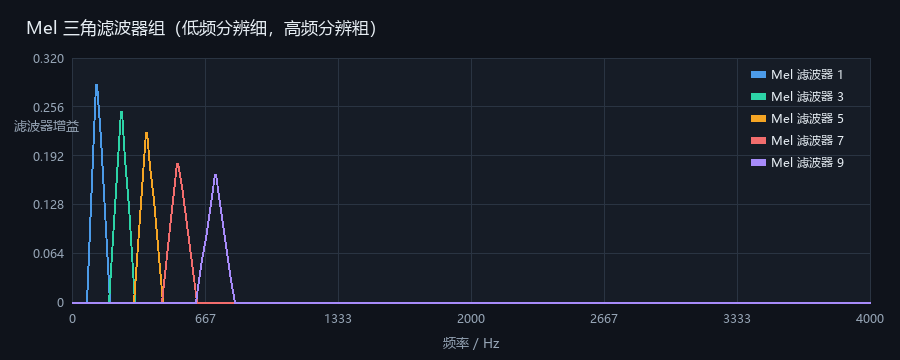
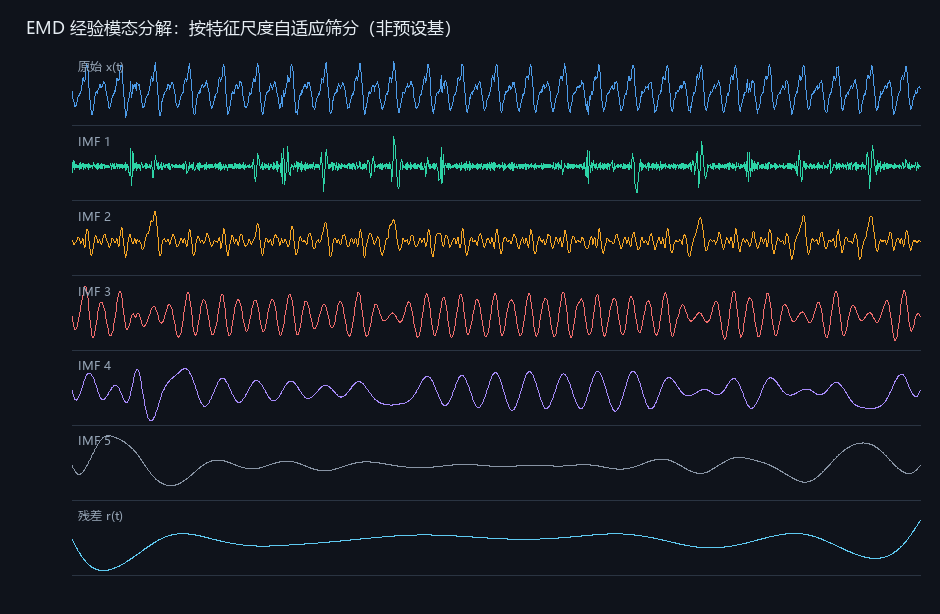
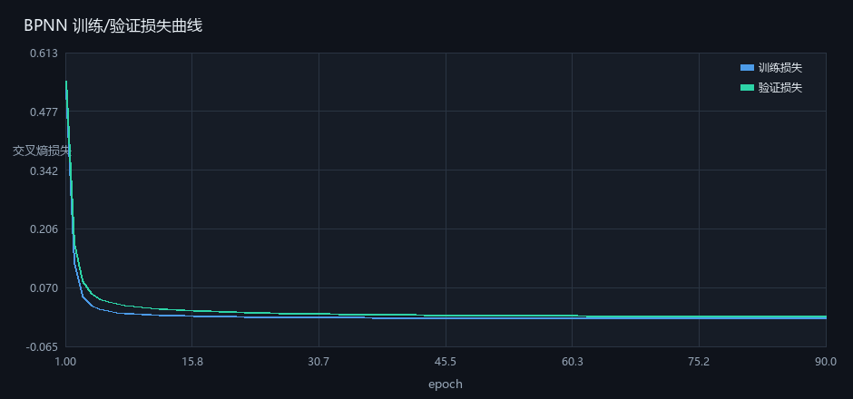
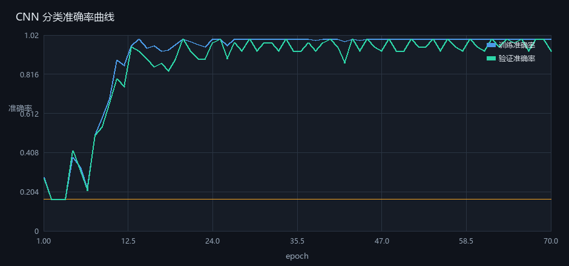
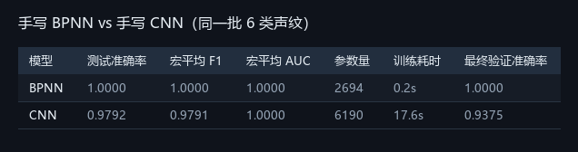

声纹信号处理 · 从零开始的学习讲义
基于韩纪庆《语音信号处理（第3版）》与王泉《声纹技术》两书的核心知识重新组织编写。不逐章复述，而是按「一条依赖链」把两本书讲透：每步都说明怎么做、为什么、要准备什么、常见误区、怎么自检。全部公式由 KaTeX 排版并按「讲-序」编号，每讲末尾附推导详解（符号表、逐步推导、数值算例、代码对应、失效条件）。另增三个工程专题：变压器声纹实战（去噪 / 特征 / 诊断）、经典算法补遗（LPC / VQ / HMM / DTW）、动手实验清单与资料索引。配套 acoustic-lab 复现项目（零第三方算法依赖，仅需 numpy + Pillow），边读边跑。
第 0 讲先读这个：怎么用这份讲义
- 明白这份讲义和"看教材"的区别：它把每一步都摊开写，不留"读者自明"的跳跃。
- 知道 16 讲之间的依赖关系，能判断自己卡在哪一层。
- 把运行环境跑通，能执行
python run.py --check并看到验证数字。
- 一条能跑通的命令，和一张自己画出的学习进度表。
- 对"我到底要学会什么"有一句话的回答。
为什么很多教程看不懂
初学者读信号处理教材最常卡在三处，这份讲义专门针对它们：
第一，公式没有落到数字。书上写 \(\Delta f=F_s/N\)，读者记住了符号，却不知道"8 kHz 采样、256 点 FFT，频率分辨率就是 31.25 Hz"这个具体结论。本讲义每个公式后面都跟一个带数字的算例，你要能自己把这个数字算出来。
第二，默认你会。教材写"对信号做 Mel 滤波"，默认你知道滤波器组是一堆三角形、默认你知道为什么要取对数。本讲义把这些"默认"全部展开，包括看起来傻的问题：为什么是三角形不是矩形？为什么取 log 不取平方根？
第三，只讲"是什么"，不讲"错了会怎样"。没有反例的知识不牢固。每一讲后面都有"误区"和"破坏性实验"：改一个参数，先预测结果，再运行验证。这个"预测—打脸"的过程才是真正记住的地方。
三条学习原则
acoustic-lab 里跑出图、跑出数值，让眼睛先"认识"它，再回头推公式。你会发现很多"看不懂的公式"，跑一次图就懂了——因为公式描述的是一件很具体的事。numpy.fft、数值梯度、重构误差比）；④ 破坏性实验（改参数，先预测再验证）。第 ③ 步是硬门槛：算法对不对不靠感觉，靠 1e−12 这种量级。acoustic-lab 里的 BPNN 和 CNN 是纯 numpy 手写的——它们就是 PyTorch 替你做的全部事情。等你能自己写梯度检查，再上框架是半天的事；反过来先学框架，就永远只会调 API，遇到 loss 不降只能干瞪眼。16 讲的依赖关系
| 层 | 讲次 | 学完要能回答的问题 |
|---|---|---|
| 第 1 层：信号 | 第 1–5 讲 | 一段声音怎么变成数字？怎么变成频谱？为什么时间和频率不能同时精确？ |
| 第 2 层：特征 | 第 6–7 讲 | 为什么声纹几乎都用 MFCC？小波和 EMD 补上了什么？ |
| 第 3 层：模型 | 第 8–10 讲 | 神经网络怎么从数据里学规律？为什么不能只看准确率？ |
| 第 4 层：声纹 | 第 11–14 讲 | 怎么判断"是不是同一个人/同一种工况"？EER 为什么是 2 倍？ |
| 收口 | 第 15–16 讲 | 整条链路怎么串起来？下一步往哪走？ |
依赖是硬的：第 6 讲的 MFCC 建立在第 4、5 讲的 FFT 与 STFT 上；第 9 讲的 CNN 建立在第 8 讲的反向传播上。哪一讲读不下去，往回退一讲，不要硬扛。
环境准备
# 只需要 Python 3 + 两个库，其余全部手写
pip install numpy pillow
# 进入项目目录，跑通冒烟测试（约 10 秒）
cd acoustic-lab
python run.py --check两个库的分工：numpy 只用来做矩阵运算和数学函数（np.fft 仅作为"标准答案"用来对拍，我们自己写的算法不调用它）；pillow 只用来画图。也就是说，书上的每个算法都在这个项目里被重新实现了一遍，你可以逐行对照。
python -c "import numpy, PIL; print(numpy.__version__)"，能打印出版本号即可。若报错，通常是装到了另一个 Python 解释器里——用 python -m pip install numpy pillow 保证装到同一个解释器。材料从哪来：GitHub 仓库
这份讲义以及它引用的全部代码、图表、数据都在一个公开仓库里，不用自己敲。地址是：
https://github.com/Lzq2190/voiceprint-lab第一次使用，克隆到本地：
git clone https://github.com/Lzq2190/voiceprint-lab.git
cd voiceprint-lab不想装 git 也可以：打开上面那个网址，点绿色 Code 按钮 → Download ZIP，解压后的目录结构和 clone 完全一样。
| 路径 | 内容 | 怎么用 |
|---|---|---|
acoustic-lab/ | 手写算法与复现项目：DFT/FFT、小波、EMD、MFCC、BPNN/CNN、零依赖绘图引擎 | 进去执行 python run.py |
acoustic-lab/data/ | 6 段 8 kHz 合成变压器声纹（正常、铁芯松动、直流偏磁、局部放电、短路冲击、风机老化） | 可用 --wav 换成自己的录音 |
acoustic-lab/outputs/ | 57 张图、7 个 CSV、metrics.json | 讲义里的每一张图都来自这里 |
guide-v2/index.html | 本讲义的网页版，离线可开，学习进度存在浏览器里 | 双击打开即可 |
guide-v2/pdf/声纹信号处理学习讲义.pdf | 本讲义的 A4 打印版 | 阅读、打印、装订 |
guide-v2/tools/ | 重绘插图（render_light_figs.py）与重新排版 PDF（build_pdf.py）的脚本 | 改过正文后重跑这两个 |
git pull 就能拿到新版；如果本地自己也改过文件而提示冲突，先 git stash 再拉，拉完 git stash pop。如果你只想跑代码、暂时不读讲义，clone 之后直接 cd acoustic-lab 再执行 python run.py --check，十秒内会打印出 DFT/FFT/小波重构/EMD/梯度检查的数值验证表。那张表是判断"代码有没有被改坏"的唯一依据，比看任何说明都可靠。
数据说明：为什么用合成声纹
讲义里的实验用 6 类合成变压器声纹（正常、铁芯松动、直流偏磁、局部放电、短路冲击、风机老化），采样率 8 kHz、时长 0.5 s。合成不是为了偷懒，而是因为合成数据有标准答案：我知道第 n 个采样点应该等于多少，才能验证你的 FFT、你的小波重构、你的梯度推导到底对不对。
真实录音的入口也留好了：python run.py --wav 你的文件.wav。换真实录音后你会发现准确率不再漂亮——这恰恰是重点，第 10、15 讲会反复讲这件事：合成数据上的 100% 只证明实现正确，不证明现场可用。
建议节奏
| 周 | 内容 | 每周产出（自检用） |
|---|---|---|
| 第 1 周 | 第 1–5 讲 | 能手写 DFT、画出语谱图、说清不确定原理 |
| 第 2 周 | 第 6–7 讲 | 能手写 MFCC 全流程、能解释小波与 EMD 的取舍 |
| 第 3 周 | 第 8–10 讲 | 能手写 BPNN/CNN 并通过梯度检查、会看混淆矩阵 |
| 第 4 周 | 第 11–15 讲 | 能对一份识别结果说出 EER 与 DCF、能判断论文结论的可信度 |
自检
第 1 讲声音是什么：从声波到正弦波
- 能写出正弦波 \(x(t)=A\sin(2\pi ft+\varphi)\)，并说清 A、f、φ 三个量各决定听感的什么。
- 理解"复合音 = 基频 + 倍音叠加"，能解释为什么不同设备/不同人声听起来不同。
- 知道声纹诊断在物理上到底在比什么。
- 用 numpy 合成一个 100 Hz 复合音，并打印出前 10 个采样值。
- 一张"物理量 → 主观感受"的对照表，能自己讲一遍。
先修知识与准备
需要：正弦函数、角度与弧度的区别（1 圈 = 2π 弧度）、numpy 的 sin/arange。不需要任何信号处理基础，也不需要复数（复数在第 4 讲才出现）。
① 声音是空气的压强波
声带、铁芯、风机叶片振动，推动空气一疏一密地传播，耳朵接收到的是压强随时间的变化。所以声音最本质的数学表示，就是一个随时间变化的量：
| 符号 | 含义 | 单位 / 取值 |
|---|---|---|
| \(x(t)\) | 时刻 \(t\) 的瞬时声压（相对大气压的微小起伏） | Pa（帕） |
| \(p_0\) | 听阈参考声压，人耳 1 kHz 处刚能听见 | \(2\times10^{-5}\,\mathrm{Pa}=20\,\mu\mathrm{Pa}\) |
| \(L_p\) | 声压级（分贝表示法） | dB SPL |
工程上几乎不直接用 Pa，而是用 声压级：\(L_p=20\log_{10}\big(x_{\mathrm{rms}}/p_0\big)\)。之所以是 20 而不是 10，见本讲「推导详解」。
三个量级要记住，用来判断"这个采样率够不够"：人耳可听范围约 20 Hz – 20 kHz；人说话的主要能量在 60–4000 Hz（所以电话用 8 kHz 采样就够）；变压器本体噪声主要能量在 50–2000 Hz，其中 100 Hz（两倍工频）是磁致伸缩的基频。
② 三个物理量，对应三种听感
最简单的声波是正弦波（纯音，音叉近似）：
为什么写成 \(2\pi f\) 而不是 f？因为正弦的自变量是角度，不是时间。一秒转 f 圈，一圈 2π 弧度，所以角速度 ω = 2πf（rad/s）。周期与频率互为倒数：\(T=1/f\)。
③ 真实声音都是复合音
纯音只有一个频率，但真实语音、乐器、变压器噪声都是很多正弦叠加：一个基频 f₀，加上频率是它整数倍的"倍音"（谐波）。
其中 \(f_0\) 是基频，\(kf_0\) 是第 \(k\) 次谐波，\(A_k,\varphi_k\) 是它的振幅与相位。 这就是傅里叶级数的思想：任何周期信号都能拆成一组整数倍频率的正弦。变压器本体振动以 \(f_0=100\,\mathrm{Hz}\)（工频 50 Hz 的两倍，因为磁致伸缩与电动势平方成正比）为基频， 故障会改变 \(A_2,A_3,\dots\) 的分布——这正是频域能诊断故障的物理依据。
关键结论：音色由谐波比例决定，不由基频决定。钢琴和小提琴弹同一个音（基频相同），听起来完全不同，因为它们的 2 次、3 次…谐波振幅比例不同。这条结论是"用频谱做识别"的全部依据：如果音色只由基频决定，那只需测一个频率就够了，用不着 FFT。
三种常见波形的谐波构成
| 波形 | 谐波构成 | 听感 | 在声纹里的对应 |
|---|---|---|---|
| 纯正弦 | 只有 f₀ | 单薄、像音叉 | 正常运行的铁芯本体声（近似） |
| 方波（近似） | f₀, 3f₀, 5f₀…（奇次），振幅按 1/k 衰减 | 空洞、像单簧管 | 铁芯松动后出现的奇次谐波增强 |
| 锯齿（近似） | 所有次谐波，振幅按 1/k 衰减 | 明亮、像弦乐 | 直流偏磁导致的谐波整体抬升 |
④ 声纹诊断在物理上比的是什么
把上面的逻辑接到设备上：设备状态改变 → 振动力学结构改变 → 谐波结构或瞬态成分改变 → 声音的频谱/时频图改变。所以"声纹"不是玄学，它比的是这几件事：
| 故障 | 物理机制 | 声纹上的表现 |
|---|---|---|
| 铁芯松动 | 压紧力下降，片间摩擦与撞击 | 100 Hz 及其倍频能量变化，叠加周期性敲击脉冲 |
| 直流偏磁 | 磁化曲线不对称，半波饱和 | 出现偶次谐波与 50 Hz 倍频族（文献里用"50 Hz 倍频倒谱系数"专抓这个） |
| 局部放电 | 微小放电产生宽频脉冲 | 时频图上出现稀疏的竖直亮条（高频、极短） |
| 风机老化 | 轴承磨损、转速下降 | 宽带噪声抬升，高频能量比例上升 |
| 短路冲击 | 绕组受巨大电动力 | 突发冲击声，短时能量骤增 |
这张表是本讲义后半部分所有特征设计的"物理依据"：第 3 讲的过零率抓高频，第 6 讲的 MFCC 抓谐波包络，第 7 讲的小波抓瞬态，都是因为它们各自对应上表的一行。
⑤ 从 x(t) 到 x[n]：离散化的预告
计算机存不下连续函数，只能存一串数。做法是每隔 \(T_s=1/F_s\) 秒取一个值：
\(F_s\) 是采样率（Hz），\(T_s\) 是采样间隔（s），\(N\) 是总点数，观测时长 \(T_{\mathrm{obs}}=NT_s=N/F_s\)。 例：\(F_s=8000\,\mathrm{Hz}\)、时长 \(0.5\,\mathrm{s}\) → \(N=F_sT=8000\times0.5=4000\) 点，\(T_s=0.125\,\mathrm{ms}\)。
这 4000 个数就是你后面所有操作的原材料。打印出来看，它只是一个上下波动的数列——所有的"频率""音色""故障"，都藏在这个数列的变化规律里，需要后面的工具才能挖出来。
动手 1：合成一个复合音并"看"它
import numpy as np
fs = 8000 # 采样率 8 kHz
t = np.arange(fs) / fs # 1 秒，共 8000 个时刻
f0 = 100 # 基频 100 Hz（变压器本体噪声基频）
# 基频 + 2、3 次谐波，振幅递减（符合真实声音"谐波越高能量越低"）
x = 1.0*np.sin(2*np.pi*f0*t) + 0.5*np.sin(2*np.pi*2*f0*t) + 0.3*np.sin(2*np.pi*3*f0*t)
print(x[:10]) # 前 10 个采样值
print('长度', len(x), '最大幅值', round(np.abs(x).max(), 3))运行后你会看到类似 [0. 0.15 0.29 ...] 的一串小数，长度 8000，最大幅值约 1.8（三个分量在某个时刻同相叠加的结果，恰好大于 1）。这个"大于 1"很重要：叠加后幅值会超出单个分量，所以后面做 int16 量化时要注意限幅，否则会削波。

1. 符号对照表
| 符号 | 含义 | 单位 | 本讲义典型值 |
|---|---|---|---|
| \(x(t)\) | 瞬时声压 | Pa | \(10^{-3}\sim1\) |
| \(p_0\) | 听阈参考声压 | Pa | \(2\times10^{-5}\) |
| \(A\) | 峰值振幅 | Pa | 1（归一化信号） |
| \(f_0\) | 基频 | Hz | 100（变压器）、80–300（人声） |
| \(\omega\) | 角频率 | rad/s | \(2\pi f\) |
| \(c\) | 声速 | m/s | 343（20 ℃ 空气） |
2. 为什么分贝前面是 20 而不是 10
声压是幅度量，声强（单位面积功率）正比于声压的平方：\(I=p^2/(\rho c)\)，其中 \(\rho\) 为空气密度、\(\rho c\) 为声阻抗。分贝的定义针对的是功率比：
所以「20」来自平方，不是另一个约定。同理，幅度谱画 dB 时也是 \(20\log_{10}|X|\)，而功率谱画 dB 时用 \(10\log_{10}P\)——因为 \(P=|X|^2\) 已经是功率量。混用这两者是频谱图最常见的标定错误。
数值例：把幅值降到原来的 \(1/10\) → \(20\log_{10}(0.1)=-20\,\mathrm{dB}\)；降到 \(1/\sqrt2\) → \(-3.01\,\mathrm{dB}\)（这就是 −3 dB 半功率点的来历）。
3. 为什么一定要引入复数：欧拉公式把两个实数合成一个
一个实正弦需要振幅 + 相位两个实数描述，或用一个复数 \(X=|X|e^{j\varphi}\) 描述。用复指数的好处是：求导、相乘、平移都变成指数运算，不必反复套三角恒等式。例如把信号延迟 \(n_0\) 点：
即时延只改相位、不改幅度谱。这条性质解释了为什么声纹特征常丢掉相位：录音起点不同、麦克风距离不同，相位全变，但幅度谱稳。
4. 谐波叠加：一个算到底的例子
设 \(f_0=100\,\mathrm{Hz}\)、\(A_1=1\)、\(A_2=0.5\)、\(A_3=0.2\)，相位全为 0。在 \(t=2.5\,\mathrm{ms}\)（即 \(2\pi f_0t=\pi/2\)）处：
把 \(\varphi_2\) 从 0 改成 \(\pi/2\)，第二项变成 \(0.5\sin(\pi+\pi/2)=-0.5\)，于是 \(x(t)=1-0.5-0.2=0.3\)。三个振幅没变、功率谱没变，波形却明显不同——这就是「相位决定波形形状、幅度谱决定能量分布」的具体含义，也是后面 MFCC 只用幅度谱的代价与理由。
5. 公式 ↔ 代码
# 式(1-2)：单频正弦
t = np.arange(N) / fs
x = A * np.sin(2 * np.pi * f * t + phi)
# 式(1-3)：谐波叠加（K 次）
x = sum(A[k] * np.sin(2*np.pi*(k+1)*f0*t + ph[k]) for k in range(K))
# 式(1-4)：声压级
Lp = 20 * np.log10(np.sqrt(np.mean(x**2)) / 2e-5 + 1e-12)acoustic-lab/src/dsp.py 里的 make_signal() 就是上面三行，六类故障信号的差别只在 \(A_k\) 的取值（正常以 100 Hz 为主；直流偏磁额外加 150/250/350 Hz 的奇次倍频）。
6. 边界与失效条件
- \(A\) 超过 ADC 满量程 → 削波，波形被削平，凭空产生大量高次谐波，频谱里出现本不存在的峰。任何后续分析都救不回来。
- 叠加只是线性模型；声压很大、传播距离很远时会出现非线性失真，此时 \(A_k\) 不再独立。
- 「相位听不出来」只对单个稳态纯音成立；多分量叠加、瞬态、双耳定位时相位是可听的。
误区与注意事项
自检
第 2 讲数字化与分帧加窗：把声音变成"能算的数据"
- 理解采样定理，并能自己算出一个"混叠"例子。
- 会用 6 dB/bit 估算量化精度，能解释为什么现场用 16 bit。
- 能把一段语音切成帧并加窗，说清 25 ms / 10 ms 这两个数字的来历。
- 一段分帧加窗的代码，输出形状为 (帧数, 帧长)。
- 一张"采样率 × 帧长 → 点数"的对照表，能现场算。
先修知识与准备
需要：第 1 讲的正弦表示、对数运算（dB 的定义）、能看懂 for 循环和切片。本节不需要傅里叶知识。
① 采样：为什么必须"两倍"
采样就是把连续信号每隔 Ts 秒"拍一张照片"。问题在于：如果拍得太稀，快慢不同的两个信号会拍出完全一样的照片，你就再也分不清了。这叫混叠（aliasing）。
采样定理（奈奎斯特）说：要无失真地恢复最高频率为 f_max 的信号，采样率必须满足
\(f_{\mathrm{Nyq}}=F_s/2\) 称奈奎斯特频率。本讲义 \(F_s=8\,\mathrm{kHz}\)， 所以有效期率上限是 \(4000\,\mathrm{Hz}\)；再扣掉抗混叠滤波器的过渡带，工程可用带宽约 \(3.4\,\mathrm{kHz}\)。 注意这是「严格大于」：等号成立时若采样相位恰好落在过零点，信号会整体消失。
手算一个混叠例子：有一个 1000 Hz 的正弦，用 Fs = 800 Hz 采样（明显不够）。采样后它看起来是多少 Hz？混叠频率的算法是
取 \(k=1\) 的例子：\(f=1000\,\mathrm{Hz}\)、\(F_s=800\,\mathrm{Hz}\) → \(|1000-800|=200\,\mathrm{Hz}\)，落在 \([0,400]\) 内，于是这个 1000 Hz 的信号被永久误认成 200 Hz。 关键是：采样完成后信息已经丢失，增加采样点数、换更好的算法都救不回来。 所以抗混叠必须是采样之前的模拟低通滤波，这是硬件责任，不是软件责任。
这就是为什么"采样率"是设备选型的第一参数：一旦定了 8 kHz，4000 Hz 以上的成分注定是假的——不是"变模糊"，而是原封不动地折叠成低频混进来，事后任何算法都分不开。反过来，也不是越高越好——第 0 讲提过，16 kHz 之后识别率几乎不再提升，纯属浪费存储和算力。
常见采样率与它的"能力上限"
| 采样率 | 奈奎斯特上限 | 典型用途 | 1 秒的数据量（16 bit 单声道） |
|---|---|---|---|
| 8 kHz | 4000 Hz | 电话语音、变压器声纹常用 | 16000 字节 ≈ 15.6 KB |
| 16 kHz | 8000 Hz | 语音识别标准（性价比顶点） | 31.25 KB |
| 44.1 kHz | 22050 Hz | 音乐 CD | 86.1 KB |
② 量化：一个比特值多少分贝
采样只离散了时间，振幅还是连续的。量化把振幅切成有限个等级：B 个比特 → 2^B 个等级。16 bit → 65536 级，把 −1 到 +1 的电压范围分完，每一级约 3.05×10⁻⁵。
量化的误差可以看成均匀分布在 ±q/2 之间的随机噪声（q 是级距），其功率为 q²/12。信号是满幅正弦时功率为 A²/2，两者一比得到著名的经验公式：
\(B=16\) → \(6.02\times16+1.76\approx98\,\mathrm{dB}\)；\(B=8\) → \(\approx50\,\mathrm{dB}\)。 每多 1 bit 提高约 6 dB，这就是「一个比特 6 dB」的来历。完整推导见本讲「推导详解」。
拿它跟需求比：语音的动态范围约 55 dB，所以 10 bit（62 dB）以上就够；现场设备用 16 bit（98 dB）是为了留出余量——传声器前置放大器的本底噪声、突发冲击声（短路冲击）的峰值，都需要这 40 dB 的余量。
np.clip(x, -1, 1) * 32767，不要乘 32768；否则 +1.0 会溢出成 −32768，波形上出现一个突然的"反向尖峰"，后面所有特征都会被它污染。采样与量化的前 14 个点（真实数据）
下面是 acoustic-lab 里"正常"样本的实际数据，第四列就是写进 WAV 文件的整数。你可以看到浮点值乘 32767 后取整的过程：

③ 分帧：因为语音是"短时平稳"的
一整句话从"开"到"始"，声学特性完全不同（这叫非平稳）。但发声器官的肌肉运动比声波振动慢得多，所以在10–30 ms 这么短的时间窗内，可以近似认为特性不变——这就是"短时平稳假设"，也是所有短时分析的前提。
于是我们把长序列切成一段段"帧"，每帧单独分析。两个参数：
| 参数 | 定义 | 常用值 |
|---|---|---|
| 帧长 \(L\) | 一帧包含的采样点数 | 20–30 ms（准平稳假设的窗口） |
| 帧移 \(S\) | 相邻两帧起点的间隔（hop） | 10 ms |
| 重叠 \(L-S\) | 相邻帧共用的点数 | 50%–66%，即 \(S=L/2\sim L/3\) |
为什么必须分帧：语音/设备声的频谱随时间变化，但在一个短窗口内近似不变（短时平稳）。 窗太长会跨过变化点，窗太短则频率分辨率不够（见第 5 讲的不确定关系）。
把毫秒换成点数（这一步初学者最常算错，务必自己算一遍）：
| \(F_s\) | 25 ms 帧长 | 10 ms 帧移 |
|---|---|---|
| 16000 Hz | \(25\times16000/1000=400\) 点 | 160 点 |
| 8000 Hz | \(25\times8000/1000=200\) 点 | 80 点 |
帧数怎么算：长度 N 的序列，帧长 L，帧移 S，不补零时
例：\(N=16000\)（1 s @ 16 kHz）、\(L=400\)、\(S=160\) →
\(\lfloor(16000-400)/160\rfloor+1=\lfloor97.5\rfloor+1=97+1=98\) 帧。
最后一帧若不足 \(L\) 点，通常补零或丢弃；本讲义的 frame_signal 采用「丢弃不足帧」，
所以实际帧数会随实现略有差异，写代码时务必打印形状确认。
98 帧这个数字很关键：1 秒语音原本 16000 个数，变成 98 个"帧"。如果每帧再压成 13 维 MFCC，就只剩 98×13 ≈ 1274 个数——数据量降了一个数量级，而判别信息基本保留。这就是"特征提取"存在的意义。
④ 加窗：为什么不能直接"切一刀"
分帧在数学上等于把信号乘上一个"矩形窗"（窗内为 1，窗外为 0）。而时域相乘 = 频域卷积，所以每一帧的频谱都会被矩形窗的频谱"抹开"：原本一根干净的谱线，会变成主瓣+一串旁瓣，能量泄漏到邻近频率上。
矩形窗的旁瓣只衰减到 −13 dB，泄漏很严重。换成两端平滑下降到 0 的窗（汉宁、汉明），相当于让帧的两端"淡入淡出"，截断处的突变消失，旁瓣就能压到 −31 ~ −43 dB。代价是主瓣变宽——频率分辨率变差。这是一个必须接受的折中。
常用窗函数对比
| 窗 | 定义（n = 0…N−1） | 主瓣宽度 | 旁瓣峰值 | 适用 |
|---|---|---|---|---|
| 矩形 | w[n] = 1 | 4π/N（最窄） | −13 dB | 要求最高频率分辨率的瞬态分析 |
| 汉宁 Hann | 0.5 − 0.5cos(2πn/(N−1)) | 8π/N | −31 dB | 通用频谱分析 |
| 汉明 Hamming | 0.54 − 0.46cos(2πn/(N−1)) | 8π/N | −43 dB | 语音特征提取（最常用） |
| 布莱克曼 | 0.42 − 0.5cos + 0.08cos(2·) | 12π/N | −58 dB | 需要极低泄漏的场合 |
语音和声纹几乎清一色用汉明窗：它在"旁瓣够低"和"主瓣不太宽"之间取得平衡。项目实施里你会在 wav.py 里看到这行：
w = 0.54 - 0.46*np.cos(2*np.pi*np.arange(400)/(400-1)) # 400 点汉明窗
frame = x[i*160 : i*160+400] * w # 取一帧并加窗⑤ 把三步串起来
def frame_signal(x, frame_len, hop, win=True):
n = 1 + (len(x) - frame_len) // hop
idx = np.arange(frame_len)[None, :] + hop*np.arange(n)[:, None]
frames = x[idx] # (n, frame_len)
if win:
frames = frames * np.hamming(frame_len) # 逐帧加窗
return frames
F = frame_signal(x, 400, 160) # 16 kHz 下 25ms/10ms
print(F.shape) # 1 秒 → (98, 400)注意这里用"索引矩阵"一次性取出所有帧，比 for 循环快一个数量级，而且天然支持批量运算——后面做 FFT、做 CNN 输入都靠它。
1. 符号对照表
| 符号 | 含义 | 单位 | 本讲义取值 |
|---|---|---|---|
| \(F_s\) | 采样率 | Hz | 8000 |
| \(T_s\) | 采样间隔 \(1/F_s\) | s | 0.000125 |
| \(f_{\mathrm{Nyq}}\) | 奈奎斯特频率 | Hz | 4000 |
| \(B\) | 量化位数 | bit | 16 |
| \(L/S\) | 帧长 / 帧移 | 点 | 200 / 80 |
| \(q\) | 量化步长 \(\Delta=2A_{\max}/2^B\) | — | \(2/65536\) |
2. 采样定理的完整推导（不跳步）
第 1 步：把采样建模成与冲激串相乘。定义周期冲激串 \(s(t)=\sum_{n=-\infty}^{\infty}\delta(t-nT_s)\)，采样信号为
第 2 步：求 \(s(t)\) 的傅里叶变换。它是周期函数，展开成傅里叶级数 \(s(t)=\frac{1}{T_s}\sum_{k}e^{j2\pi k t/T_s}\)，于是
第 3 步：时域相乘 = 频域卷积。
这是整个采样定理的核心：采样后频谱是原频谱以 \(F_s\) 为间隔的无限次平移复制。
第 4 步：读出无混叠条件。设原信号带限于 \(f_{\max}\)，即 \(X(f)=0\) 当 \(|f|\gt f_{\max}\)。相邻两份副本的中心相距 \(F_s\)，各自半宽 \(f_{\max}\)。要不重叠，必须
满足时，用截止频率 \(F_s/2\) 的理想低通（增益 \(T_s\)）就能从 \(X_s(f)\) 中完整取出 \(X(f)\)；时域上对应 Whittaker–Shannon 插值 \(x(t)=\sum_n x[n]\,\mathrm{sinc}\big((t-nT_s)/T_s\big)\)。不满足时两份副本重叠，重叠区不可逆地相加，没有任何数学手段能拆开。
3. 混叠频率公式的来历
一个频率 \(f\gt F_s/2\) 的复指数，在采样点上的值满足
因为 \(e^{j2\pi kn}=1\)（\(k,n\) 都是整数）。所有相差整数倍 \(F_s\) 的频率在采样点上完全相同，这叫「频率混叠等价类」。选 \(k\) 使结果落进 \([0,F_s/2]\)，就是式 (2-3)。更一般地，还要关于 \(F_s/2\) 折叠（实信号的共轭对称）：
算例：\(F_s=8000\)，\(f=7500\,\mathrm{Hz}\) → \(7500\bmod8000=7500\gt 4000\) → \(|7500-8000|=500\,\mathrm{Hz}\)。 所以 7.5 kHz 的超声成分会伪装成 500 Hz 的正常振动。这就是为什么抗混叠滤波器必须在 ADC 之前用模拟电路实现——采样完成再滤波，500 Hz 处的假峰已经和数据融为一体了。
4. 6.02B + 1.76 dB 的完整推导
设满幅正弦 \(x(t)=A\sin(2\pi ft)\)，量化范围 \([-A,A]\) 被均分成 \(2^B\) 级，步长 \(\Delta=2A/2^B\)。
信号功率：\(P_x=\dfrac{1}{T}\int_0^T A^2\sin^2(2\pi ft)\,\mathrm{d}t=\dfrac{A^2}{2}\)。
量化噪声功率：把量化误差 \(e=x_q-x\) 近似成 \([-\Delta/2,\Delta/2]\) 上均匀分布的白噪声（在步长足够小、信号足够复杂时成立），则 \(P_q=\mathbb E[e^2]=\dfrac{1}{\Delta}\int_{-\Delta/2}^{\Delta/2}e^2\,\mathrm{d}e=\dfrac{\Delta^2}{12}\)。
代入并化简：
「1.76」来自 \(10\log_{10}(3/2)\)（满幅正弦的波形因子），「6.02」来自 \(20\log_{10}2\)。若输入不是满幅正弦而是均匀分布信号，常数项会变；若信号幅度远小于满量程，有效位数下降，实际 SNR 是 \(6.02B+1.76-20\log_{10}(A/A_{\max})\)。所以录音电平调到接近但不触及满幅，是提升有效精度的免费手段。
5. 分帧与加窗的定量细节
汉明窗定义（\(0\le n\le L-1\)）：
加窗在时域是逐点相乘，在频域是卷积，因此窗的频谱决定了泄漏形状：
| 窗 | 主瓣宽度（相对矩形窗） | 最高旁瓣 | 适用 |
|---|---|---|---|
| 矩形 | \(1\times\) | −13 dB | 频率恰为 \(\Delta f\) 整数倍时才可用 |
| 汉宁 | \(2\times\) | −31 dB | 通用频谱分析 |
| 汉明 | \(2\times\) | −43 dB | 语音/MFCC 默认，旁瓣最低 |
| 布莱克曼 | \(3\times\) | −58 dB | 强弱信号并存、需极高动态范围 |
注意代价：主瓣变宽意味着频率分辨率变差。汉明窗主瓣约 \(4\pi/L\)（归一化角频率），对应约 2 个谱线间隔，所以「用汉明窗后能分开的最小频率间隔」约为 \(2F_s/L\)。这是选窗时必须算的一笔账。
帧数：\(N=16000\)、\(L=400\)、\(S=160\) → \(M=\lfloor(16000-400)/160\rfloor+1=98\) 帧，总覆盖时长 \((M-1)S+L=97\times160+400=15920\) 点，末尾 80 点被丢弃（不足一帧）。
6. 公式 ↔ 代码
# 式(2-1)：采样
t = np.arange(N) / fs # Ts = 1/fs 隐含在这里
x = np.sin(2*np.pi*f*t)
# 式(2-4)：量化（B bit，满幅 [-1,1]）
q = np.round((x + 1) * (2**B - 1) / 2) # 量化到整数
xq = q * 2 / (2**B - 1) - 1 # 反量化回 [-1,1]
# 式(2-10) / (2-11)：分帧 + 汉明窗
L, S = int(0.025*fs), int(0.010*fs)
frames = np.array([x[i:i+L] for i in range(0, len(x)-L+1, S)])
win = 0.54 - 0.46*np.cos(2*np.pi*np.arange(L)/(L-1))
frames = frames * win7. 边界与失效条件
- 等号不成立：\(F_s=2f_{\max}\) 时，若采样相位恰好落在每个过零点，采到的全是 0。工程上留 10–20% 余量。
- 抗混叠过渡带：实际滤波器不可能陡降到 0，所以 \(F_s=8\,\mathrm{kHz}\) 的可用带宽约 3.4 kHz 而非 4 kHz。
- 量化噪声白噪声假设失效：信号幅度很小、或信号是纯正弦且频率与 \(F_s\) 成简单整数比时，误差与信号相关，会变成谐波失真而非白噪声，此时 SNR 公式偏乐观。
- 短时平稳假设：25 ms 窗对稳态嗡鸣成立，对「敲击 / 放电脉冲」这类瞬态不成立，需要更短窗或小波（第 7 讲）。
误区与注意事项
自检
第 3 讲时域特征：短时能量、过零率、自相关
- 能手算短时能量、短时过零率、短时自相关三个特征。
- 能用 \(Z/N=2f/F_s\) 从过零率反推频率。
- 知道为什么时域特征只能做"快筛"，做不了精细分类。
- 每帧三个特征值，画出一条特征随时间的曲线。
- 能用能量曲线定位"短路冲击"发生在第几帧。
先修知识与准备
需要第 2 讲的分帧（帧长、帧移、加窗）。时域特征不需要傅里叶变换，是整条链路里最容易上手的一步，但它能解决不少实际问题，值得先做。
① 短时能量：把一帧的"响度"变成一个数
物理上，能量与振幅的平方成正比（电阻上的功率 P = U²/R）。对离散信号，一帧内所有采样点平方求和，就得到这一帧的能量：
第 \(m\) 帧、帧长 \(N\)。取对数是为了压缩动态范围：强信号与弱信号在同一个坐标里都看得见。 \(a\) 是防 \(\log 0\) 的小常数。注意能量对幅值增益敏感（幅度翻倍 → 能量变 4 倍）， 所以跨设备比较前必须做幅度归一化。
手算：一帧 4 个采样点 [1, −2, 0, 2]，则 E = 1² + (−2)² + 0² + 2² = 9。若幅值整体放大 2 倍变成 [2, −4, 0, 4]，能量变成 36——放大 4 倍，因为能量是幅值的平方。这条性质决定了一个重要事实：能量对幅值极敏感，对增益（音量）不稳定。
② 短时过零率：最便宜的"频率计"
过零率统计一帧内信号穿过零点的次数，反映"变化有多快"，也就是频率高低：
\(\operatorname{sgn}\) 为符号函数（正取 1、负取 −1、零取 0）。每穿越零点一次， 相邻两项之差的绝对值为 2，乘 \(1/2\) 恰好记一次过零。它是区分清音/浊音、判断高频成分强弱的粗指标， 对直流偏置和低频漂移敏感，因此通常只在预加重与去均值之后使用。
推导 ZCR 与频率的关系：一个频率 f 的正弦，每秒穿零 2f 次。帧长 N 个点对应时长 N/Fs 秒，所以一帧内的穿零次数为
一个周期穿越零点两次，一帧时长 \(N/F_s\) 内包含 \(fN/F_s\) 个周期，故过零 \(2fN/F_s\) 次。 例：\(F_s=8000\)、\(N=200\)（25 ms）、\(f=500\,\mathrm{Hz}\) → \(Z=2\times500\times200/8000=25\) 次； 反推 \(f=25\times8000/(2\times200)=500\,\mathrm{Hz}\) ✓。归一化过零率 \(Z/N\) 直接正比于 \(f/F_s\)。
这个公式在实践中的用法是判清音/浊音：浊音（声带振动，有基频）能量大、过零率低；清音（气流摩擦，像"s"）能量小、过零率高。放到变压器上：风机轴承的宽带噪声、局部放电的高频脉冲，过零率都明显高于 100 Hz 基频主导的正常噪声。
③ 短时自相关：从"重复性"里找周期
自相关衡量信号与"自己平移 k 个点"之后的相似程度：
自相关衡量「信号与它自己平移 \(k\) 点之后有多像」。周期信号在 \(k\) 等于周期（及其整数倍）处出现峰值。 无偏版本会再除以 \(N-k\)，但那样在 \(k\) 大时噪声被放大，工程上常用上式（有偏估计）并配归一化 \(\rho(k)=R_m(k)/R_m(0)\)。
直觉：如果信号每隔 T 个点重复一次，那么把信号平移 T 之后，波形几乎重合，R(T) 就会很大。所以 R(k) 的第二个峰（第一个峰在 k=0）出现的位置 k₀，就是周期：
例：\(F_s=8000\)，自相关在 \(k_0=80\) 处出现峰 → \(f_0=8000/80=100\,\mathrm{Hz}\) ✓（变压器基频）。 搜索区间要按目标基频范围设定：找 80–400 Hz 对应 \(k\in[20,100]\)；不设下界容易把 \(k=0\) 的 全局最大值（\(R(0)\) 恒等于能量）当成答案——这是最常见的实现 bug。
手算：序列 [1, 0, −1, 0, 1, 0, −1, 0]（周期为 4 的方波状信号）。R(0) = 1+0+1+0+1+0+1+0 = 4；R(4) = 1·1 + 0·0 + (−1)(−1) + 0·0 = 2，是 k>0 的最大值 → 周期 4 个点。若 Fs = 8000，则 f₀ = 2000 Hz。
自相关的价值在于：它比 FFT 更"抗噪"地找周期，而且计算量小，所以在基频估计、声门周期检测里用得很多。缺点是对非周期成分（噪声、瞬态）不敏感——这也正好是它的定位。
三个特征的分工
| 特征 | 抓什么 | 对什么故障敏感 | 弱点 |
|---|---|---|---|
| 短时能量 | 响度/幅度 | 短路冲击（能量突增）、风机老化（整体能量抬升） | 受增益影响，不能区分同能量的不同故障 |
| 短时过零率 | 变化快慢 ≈ 频率高低 | 局部放电（高频脉冲）、风机（宽带噪声） | 对直流偏置敏感，高频噪声下会饱和 |
| 短时自相关 | 周期性与基频 | 铁芯松动（周期结构改变）、直流偏磁（倍频成分） | 对非周期瞬态不敏感 |
④ 为什么只有时域特征不够
设想两种故障：一个是"100 Hz 能量增大"，一个是"200 Hz 能量增大"，但两者总能量相同。它们的短时能量完全一样，过零率也很接近（100 与 200 Hz 都远低于 8 kHz 的一半），自相关只能给出周期变化但很难稳定区分——时域特征把频率信息压成了一个标量，信息在这里就丢了。
这就是必须进入频域的原因：要区分"能量分布在哪些频率上"，就必须把信号拆成一个个频率成分——这正是第 4 讲傅里叶变换要干的事。工程上的惯例是：时域特征做快速筛查和端点检测，频域/时频域特征做精细分类。
⑤ 代码：一次算出三条曲线
def frame_feats(x, N=400, S=160):
n = 1 + (len(x) - N)//S
idx = np.arange(N)[None,:] + S*np.arange(n)[:,None]
F = x[idx] - x[idx].mean(1, keepdims=True) # 去均值（对 ZCR 必须）
E = (F**2).sum(1) # 短时能量
Z = 0.5*np.abs(np.diff(np.sign(F), axis=1)).sum(1) # 过零率
R = np.array([np.correlate(f, f, 'full')[N-1:] for f in F]) # 自相关
return E, Z, R
E, Z, R = frame_feats(x)
print('能量最大帧', E.argmax(), '峰值', round(E.max(), 1))对"短路冲击"样本跑一遍，你会看到能量曲线在某一帧突然跳起 1~2 个数量级——只看这一条曲线就能定位冲击发生在 0.5 秒里的第几毫秒。这就是时域特征最实用的场景。
1. 从连续能量到短时能量
连续信号的总能量是 \(E=\int_{-\infty}^{\infty}x^2(t)\,\mathrm{d}t\)。对离散、加窗后的第 \(m\) 帧，积分换成求和：
注意窗函数平方也进来了：汉明窗两端接近 0.08，平方后仅 0.0064，意味着帧两端的样本对能量贡献被压掉 99%。这是加窗的必然代价，也是帧与帧要重叠 50% 以上的原因——否则边界信息会周期性丢失。
归一化到「平均功率」要除以 \(\sum_n w^2[n]\) 而不是 \(N\)：\(\bar P_m=\dfrac{E_m}{\sum_n w^2[n]}\)。对汉明窗，\(\sum w^2\approx0.397L\)，除以 \(L\) 会低估约 2.5 倍（约 4 dB）。
2. 过零率公式为什么有系数 2
纯正弦 \(x(t)=A\sin(2\pi ft)\) 在一个周期 \(T=1/f\) 内穿越零点 2 次（上升沿、下降沿各一次）。一帧时长 \(T_{\mathrm{frame}}=N/F_s\)，包含 \(T_{\mathrm{frame}}/T=fN/F_s\) 个周期，故
代入数字：\(F_s=8000\)、\(N=200\)、\(f=500\) → \(Z=2(500)(200)/8000=25\)。 反过来 \(f=25\times8000/(2\times200)=500\,\mathrm{Hz}\) ✓。
这个反推的适用条件很窄：只对单频、无直流、无噪声的正弦成立。真实信号里谐波也会过零，噪声更会制造大量虚假过零，所以过零率只能当「高频成分多不多」的粗指标，不能当基频估计器——基频要靠自相关（下式）。
3. 自相关为什么能测周期：一步不跳的证明
设 \(x[n]\) 周期为 \(P\)，即 \(x[n+P]=x[n]\)。把它代入自相关定义：
即周期整数倍处的归一化自相关恒为 1；而非周期倍数处，乘积正负相消，\(\rho(k)\) 明显小于 1。 有偏估计 \(R(k)=\sum_{n=0}^{N-1-k}x[n]x[n+k]\) 的求和项随 \(k\) 增大而减少，所以峰值会随 \(k\) 缓慢下降—— 这反而有助于抑制大 \(k\) 处的伪峰。若改用无偏估计（除以 \(N-k\)），在 \(k\to N\) 时只剩极少数样本，方差爆炸，反而更容易选错峰。「有偏」在这里是特性不是缺陷。
峰值搜索必须避开 \(k=0\)：\(\rho(0)\equiv1\) 是全局最大值。按目标基频范围设区间：
例：在 \(k_0=80\) 处取到峰 → \(f_0=8000/80=100\,\mathrm{Hz}\)，周期 \(T=1/100=10\,\mathrm{ms}\) = 80 点 ✓。
4. 双门限端点检测：把两个特征合起来用
单靠能量会把强噪声当语音，单靠过零率会把静音段的微弱直流漂移当清音。工程做法是三级状态机：
门限常按背景噪声自适应：\(\tau_{\mathrm{low}}=\mu_E+2\sigma_E\)、\(\tau_{\mathrm{high}}=4\tau_{\mathrm{low}}\)（前 100 ms 假定为静音用于估计 \(\mu_E,\sigma_E\)）。低门限负责「不切掉弱起音」，高门限负责「不被噪声骗开」，两者缺一不可。
5. 公式 ↔ 代码
# 式(3-1) 能量 / 式(3-2) 过零率
E = np.sum(frames**2, axis=1)
Z = 0.5*np.sum(np.abs(np.diff(np.sign(frames), axis=1)), axis=1)
# 式(3-4)(3-5) 归一化自相关 + 限定区间找峰
def pitch(x, fs, fmin=80, fmax=400):
x = x - x.mean()
r = np.correlate(x, x, 'full')[len(x)-1:] # R(k), k=0..N-1
lo, hi = int(fs/fmax), min(int(fs/fmin), len(r)-1)
k0 = lo + np.argmax(r[lo:hi+1] / (r[0] + 1e-12))
return fs / k0, k0注意 np.correlate(x,x,'full') 取后半段才是 \(k\ge0\) 的部分；写成 [:len(x)] 会得到反向序列，峰位置全错。配套项目的 autocorr_pitch() 已按上式实现并做了去直流。
6. 边界与失效条件
- 直流偏置：哪怕只有 0.01 的直流，也会让过零率几乎归零。必须先去均值或预加重。
- 倍周期 / 半周期错误：自相关在 \(2P,3P\) 处同样有峰，在 \(P/2\) 处对某些波形也有较强峰。取「第一个超过阈值的峰」比取全局最大更稳。
- 帧长不够：要可靠看到 \(f_{\min}=80\,\mathrm{Hz}\) 的一个周期，帧长至少 \(F_s/f_{\min}=100\) 点（12.5 ms @8 kHz），实务上取 2–3 个周期以上。
误区与注意事项
自检
第 4 讲傅里叶变换：从时间到频率
- 把 DFT 理解成"在一组正弦上的投影"，而不是一串看不懂的指数。
- 能手算 4 点 DFT，能算频率分辨率 Δf。
- 理解补零、频谱泄漏、单边谱归一化三个工程细节。
- 手写 DFT，与
numpy.fft对拍误差小于 1e−10。 - 画出复合音频谱，能指着峰说出"这是 100 Hz 基频，这是 2、3 次谐波"。
labs.html（第一个标签页），把探测频率从 0 拖到 4000：当 f 命中真实分量时，圆里的点会朝一边堆叠、质心明显偏离圆心；f 对不上时点铺满一圈、质心回到圆心。那段动画就是 DFT 本身，比任何文字解释都直接。先修知识与准备
需要：复数与欧拉公式 \(e^{j\theta}=\cos\theta+j\sin\theta\)、内积（点乘）、求和符号 Σ。这三样就够，不需要任何泛函知识。
① 核心直觉：频谱是"投影系数"
先看一个平面几何事实：向量 \(\mathbf a=(1,0)\) 与 \(\mathbf b=(0,1)\) 的内积为 0，叫正交。正交的好处是"互不干扰"：你想知道 a 在 x 方向的分量，就用 a 和 x 轴单位向量做内积，y 方向的存在完全不影响结果。
傅里叶变换做的正是这件事，只不过向量换成了"函数"，内积换成了"相乘再求和/积分"。频率为 f 的复指数 \(e^{j2\pi ft}\) 就是"频率轴上的单位向量"。不同频率的复指数彼此正交：
复指数 \(e^{j2\pi ft}=\cos(2\pi ft)+j\sin(2\pi ft)\)（欧拉公式）就是「频率轴上的单位向量」， 不同频率彼此正交，所以「信号在频率 \(f\) 上的分量」＝信号与该频率复指数的内积。 离散情形下正交性由几何级数保证，完整推导见本讲「推导详解」。
这就是为什么频谱能"分离混在一起的谐波"：各频率互不干扰，各投各的影。理解了这一句，DFT 的公式就不需要背了。
② DFT 公式与每个符号的含义
| 符号 | 含义 |
|---|---|
| \(x[n]\) | 第 \(n\) 个采样点（时域，实数或复数） |
| \(X[k]\) | 第 \(k\) 个频率分量（频域，复数）；模长＝强度，辐角＝相位 |
| \(W_N^{kn}\) | 旋转因子（twiddle factor），第 \(k\) 个基函数在 \(n\) 处的值 |
| \(f_k\) | 第 \(k\) 根谱线的物理频率 \(f_k=kF_s/N\)，间隔 \(\Delta f=F_s/N\) |
逐项翻译：对每个 \(k\)，把整段信号与第 \(k\) 个复正弦逐点相乘再求和。含该频率则同号居多、求和结果大； 不含则正负相消、结果近 0。逆变换为 \(x[n]=\frac{1}{N}\sum_{k=0}^{N-1}X[k]e^{j2\pi kn/N}\)—— 注意 \(1/N\) 只在逆变换一侧，这个约定决定了后面幅度谱要乘 \(2/N\)。
逐项翻译：对每个 k，把整段信号 x[n] 与第 k 个复正弦逐点相乘再求和。如果信号里含有这个频率，乘积同号居多，求和结果就大；如果信号里没有，正负相消，结果接近 0。X[k] 是复数，模长是"这个频率有多强"，辐角是"这个频率的相位"。
③ 手算一个 4 点 DFT
取 x = [1, 0, 1, 0]（周期为 2 的交替序列），N = 4。基函数是 4 个点上的复指数，取值只有 1, −j, −1, j 四种：
取 \(x=[1,0,1,0]\)、\(N=4\)，基函数在 4 个点上的取值只有 \(1,-j,-1,j\)。 怎么读：\(X[0]=2\) 是直流（均值 \(\times N=0.5\times4=2\) ✓）；\(X[2]=2\) 对应 \(f=2F_s/4=F_s/2\)，正是「1,0,1,0」的交替频率；\(X[1]=X[3]=0\) 说明没有其他成分。 DFT 只是把信号往每个频率上射一次影。
怎么读这个结果？X[0]=2 是直流分量（均值×N = 0.5×4 = 2 ✓）；X[2]=2 对应频率 k=2，即 f = 2·Fs/4 = Fs/2，正是这个"1,0,1,0"序列的交替频率；X[1]=X[3]=0 说明没有其他成分。算一遍就明白：DFT 只是把信号往每个频率上射一次影。
④ 三个必须搞清的工程细节
细节 1：单边谱要乘 2/N 才是真实幅值
实信号的频谱是共轭对称的（X[N−k] = conj(X[k])），负频率没有独立信息，所以工程上只看前 N/2+1 根谱线。此时那根谱线的模要除以 N/2 才等于正弦的真实振幅：
实信号的频谱共轭对称：\(X[N-k]=\overline{X[k]}\)，负频率没有独立信息，只看前 \(N/2+1\) 根谱线。 幅度为 \(A\) 的实正弦 \(A\sin(2\pi f t)\) 由 \(\pm f\) 两个复指数各分到 \(A/2\)， DFT 求和后每侧模长为 \(AN/2\)，因此乘 \(2/N\) 才还原成 \(A\)。 例：幅值 1.0、\(N=1024\) → \(|X[k]|\approx512\) → \(A=2\times512/1024=1.0\) ✓。 忘了这个归一化就会得出「信号幅值 512 Pa」的荒谬结论。
忘了这个 2/N，画出来的谱幅值是 512 而不是 1，就会得出"信号幅值 512 Pa"这种荒谬结论——这是初学者最常见的错误之一。
细节 2：补零不能提高分辨率
把 256 点信号补零到 1024 点再做 FFT，谱线看起来"更密"（Δf 从 31.25 变成 7.8 Hz），但分辨率并没有变好。因为分辨率由"实际观测时长 T = N_original/Fs"决定，补零只是把同一条曲线插值画得更细——本来糊在一起的两个峰，补零后还是糊在一起，只是多画了几个点。
把 256 点补零到 1024 点，谱线从 31.25 Hz 变「密」到 7.8 Hz，但分辨能力没变： 补零只是对同一条连续频谱曲线做更细的插值采样。本来糊在一起的两个峰，补零后仍糊在一起，只是多画了几个点。 要分辨间隔 5 Hz 的两个成分，观测时长至少 \(1/5=0.2\,\mathrm{s}\)——这就是声纹分析用 0.2–1 s 片段而不是单帧 25 ms 的原因。
要用好这条：需要分辨间隔 5 Hz 的两个成分，观测时长至少 1/5 = 0.2 s。这也是为什么声纹分析一般用 0.2–1 s 的片段而不是 25 ms 单帧。
细节 3：频谱泄漏
如果信号频率不是 Δf 的整数倍（绝大多数情况都是），能量会"漏"到相邻谱线上，出现一个主峰加两边一串小峰。第 2 讲的加窗就是为了压这个泄漏。判断方法：看一个纯正弦的谱，如果除了主峰还有明显的旁瓣，就是泄漏。
⑤ FFT：为什么能快两个数量级
直接按公式算 N 点 DFT，需要约 N² 次复数乘法。N = 1024 时是 100 万次。Cooley–Tukey 的分治思路是：把 N 点 DFT 拆成两个 N/2 点 DFT（偶数点一组、奇数点一组），再递归下去：
| \(N\) | DFT 复数乘法 | FFT | 加速比 |
|---|---|---|---|
| 1024 | \(1\,048\,576\) | \(5\,120\) | ≈ 205× |
| 8192 | \(6.7\times10^{7}\) | \(5.3\times10^{4}\) | ≈ 1260× |
实时系统要求 FFT 长度取 2 的幂，不是数学要求，而是 Cooley–Tukey 分治要能一直二分下去。
这就是为什么所有实时系统都要求 FFT 长度是 2 的幂：不是数学要求，而是分治算法要求能一直二分下去。
⑥ 代码：三行 DFT 与对拍
import numpy as np
def dft(x):
N = len(x); k = np.arange(N); n = k.reshape(-1,1)
W = np.exp(-2j*np.pi*k*n/N) # 基矩阵：每一行是一个频率
return W @ x # 一次矩阵乘法 = 一组内积
x = np.sin(2*np.pi*100*np.arange(256)/8000)
X = dft(x)
print('与 numpy 最大偏差', np.abs(X - np.fft.fft(x)).max()) # ~1e-13
idx = np.abs(X[:128]).argmax()
print('峰值频率', idx*8000/256, 'Hz') # ≈ 100 Hz
1. 符号对照表
| 符号 | 含义 | 备注 |
|---|---|---|
| \(N\) | DFT 点数 | 本讲义 256 / 1024 |
| \(W_N\) | 旋转因子 \(e^{-j2\pi/N}\) | \(W_N^N=1\) |
| \(X[k]\) | 频域第 \(k\) 点 | 复数，\(k=0..N-1\) |
| \(\Delta f\) | 谱线间隔 \(F_s/N\) | 31.25 Hz @8000/256 |
| \(T_{\mathrm{obs}}\) | 观测时长 \(N/F_s\) | 决定真实分辨率 |
2. 离散正交性：用几何级数算出来
把基函数列成向量 \(\mathbf u_k=\big[W_N^{-kn}\big]_{n=0}^{N-1}\)。两个不同基的内积为
若 \(p=q\)，则 \(r=1\)，和为 \(N\)。若 \(p\neq q\) 且 \(|p-q|\lt N\)，由等比级数求和
合并得 \(\langle\mathbf u_p,\mathbf u_q\rangle=N\delta_{pq}\)。正交性不是公理，是「整数个周期求和为零」的直接结果。这也解释了为什么 DFT 点数必须正好覆盖整数个基函数周期：一旦 \(k\) 不是整数（信号频率不落在谱线上），式 (4-8) 的分子不再为 0，能量就漏到相邻谱线——这就是频谱泄漏的数学来源。
3. 逆变换里的 1/N 是怎么定出来的
把 DFT 写成矩阵 \(X=F x\)，其中 \(F_{kn}=W_N^{kn}\)。由上式 \(F^{\mathsf H}F=N I\)（共轭转置），故 \(F^{-1}=\frac{1}{N}F^{\mathsf H}\)，于是
把 DFT 正变换代进去可验证：\(\frac{1}{N}\sum_k\sum_m x[m]e^{-j2\pi km/N}e^{j2\pi kn/N} =\sum_m x[m]\,\frac{1}{N}\sum_k e^{j2\pi k(n-m)/N}=\sum_m x[m]\delta_{nm}=x[n]\) ✓。 归一化的位置是约定问题：有的库把 \(1/\sqrt N\) 平分给正反变换（对称约定），numpy 采用「正变换不除、逆变换除 \(N\)」。 写成代码对拍时，必须先确认用的是哪一套，否则结果会差 \(N\) 倍。
4. 共轭对称与 2/N 的完整来历
实信号 \(x[n]\in\mathbb R\) 时：
再看幅度为 \(A\) 的实正弦，用欧拉公式展开：
正频率 \(k_0\) 那一支与 DFT 基相消后求和得 \(N\) 个 1，故 \(X[k_0]=\frac{A}{2j}N\)，模长 \(|X[k_0]|=AN/2\)； 负频率 \(N-k_0\) 处同样有 \(AN/2\)。能量被正负频率各分一半，只看单边就要补回 2 倍，再除以 \(N\) 消掉求和积累：
直流不乘 2，因为它没有「负频率伙伴」，\(X[0]=\sum_n x[n]=N\bar x\) 本身就直接给出均值。
5. 补零为什么只改显示密度：从 DTFT 看
把 \(N_0\) 点信号 \(x[n]\) 补零到 \(M\) 点，其 \(M\) 点 DFT 为
注意求和上限仍是 \(N_0\)：补零没有增加任何新信息，只是把同一条连续频谱 \(X_{\mathrm{DTFT}}(\omega)\) 在更密的频率网格上采样。 两个频率能否分开，取决于这条连续曲线的主瓣宽度 \(\approx2\pi/N_0\)，与采样网格密度 \(2\pi/M\) 无关。 这就是「\(\Delta f_{\mathrm{true}}=F_s/N_0\)，\(\Delta f_{\mathrm{display}}=F_s/M\)」的严格表述。
6. FFT：Cooley–Tukey 按时间抽取的完整分解
第 1 步：把求和按 \(n\) 的奇偶拆开（设 \(N\) 为偶数，\(n=2r\) 与 \(n=2r+1\)，\(r=0..N/2-1\)）：
用了 \(W_N^{2kr}=e^{-j2\pi(2kr)/N}=e^{-j2\pi kr/(N/2)}=W_{N/2}^{kr}\)。\(E,O\) 恰是两个 \(N/2\) 点 DFT。
第 2 步：利用周期性与对称性省掉一半计算。因为 \(E,O\) 以 \(N/2\) 为周期，且
于是对 \(k=0..N/2-1\) 配对计算（这就是蝶形运算）：
一次蝶形 = 1 次复乘 + 2 次复加，同时产出两个输出。
第 3 步：复杂度递推。\(T(N)=2T(N/2)+\frac{N}{2}\)（每层 \(N/2\) 个蝶形），共 \(\log_2N\) 层：
与式 (4-6) 的表格完全一致。递归到最后是 2 点 DFT，输入需按位反转顺序重排（或递归时自动完成）。
7. 频谱泄漏的定量描述
对长度为 \(N\) 的矩形窗，其 DTFT 是 Dirichlet 核：
主瓣零点在 \(\omega=\pm2\pi/N\)，第一旁瓣约 −13 dB。若信号频率落在两根谱线中间（\(k_0+0.5\)）， 相邻谱线恰好采在旁瓣上，会出现「主峰降低约 3.9 dB（扇形损失）+ 两侧一串旁瓣」。 汉明窗把旁瓣压到 −43 dB，代价是主瓣展宽 2 倍。这就是第 2 讲那张窗函数表的定量依据。
8. 公式 ↔ 代码
# 式(4-2)：DFT 基矩阵（每一行是一个频率）
def dft(x):
N = len(x); n = np.arange(N); k = n.reshape(-1, 1)
W = np.exp(-2j*np.pi*k*n/N) # W_N^{kn}
return W @ x
# 式(4-9)：逆变换，注意 1/N
def idft(X):
N = len(X); n = np.arange(N); k = n.reshape(-1, 1)
return np.exp(2j*np.pi*k*n/N) @ X / N
# 式(4-12)：单边幅度谱
A = np.abs(X[:N//2+1]) * 2 / N
A[0] /= 2 # 直流不乘 2
# 式(4-16)：一个 2 点蝶形（递归 FFT 的核心）
Xe, Xo = fft(x[0::2]), fft(x[1::2])
T = np.exp(-2j*np.pi*np.arange(N//2)/N) * Xo
X = np.concatenate([Xe + T, Xe - T])9. 边界与失效条件
- \(N\) 不是 2 的幂时上述二分不成立，需 Bluestein / 混合基算法；numpy 会变慢但不报错。
- 信号含 \(\gt F_s/2\) 成分时 DFT 结果本身已是混叠后的，频域无法补救（回到第 2 讲）。
- 相位谱在 \(|X[k]|\approx0\) 处数值不稳定，取 \(\arg X[k]\) 前应先设幅度阈值。
- 浮点误差：DFT 基矩阵是 \(O(N^2)\) 内存，\(N=8192\) 时约 1 GB（complex128），大点数必须走 FFT。
误区与注意事项
自检
第 5 讲时频分析：STFT 与不确定原理
- 理解 FFT 丢了时间信息，STFT 如何把它补回来。
- 能说清"窗长"这个唯一旋钮在时间与频率之间怎么交换。
- 会读语谱图：水平条纹、竖直条纹、颜色深浅各代表什么。
- 一张 log-Mel 语谱图，并能在图上指出局放脉冲出现的时刻。
- 能算出一组窗长对应的 Δf，并说明为什么选它。
先修知识与准备
需要第 2 讲的分帧加窗、第 4 讲的 DFT 与 Δf = Fs/N。本讲是把这两件事拼起来，没有新数学。
① FFT 的盲区：它只知道"有哪些频率"，不知道"什么时候"
对整段 0.5 秒信号做一次 FFT，得到的是这段时间的平均频谱。如果局放脉冲只出现在第 200 ms，FFT 会告诉你"存在高频成分"，但完全无法告诉你在第 200 ms。对于稳态故障（铁芯松动、风机老化）这没关系，但瞬态故障（局放、短路冲击）的时间位置本身就是最重要的判别信息。
STFT 的思路很直接：把长信号切成很多短帧，每帧做一次 FFT，再把结果按时间排起来。这样每一列是一个时刻的频谱，横着看就是频率随时间的变化。
\(m\)：帧号（时间轴）；\(k\)：谱线号（频率轴）；\(w[\cdot]\)：窗函数；\(S\)：帧移。 输出是二维复数矩阵，尺寸 \(M\times(N/2+1)\)。取模后取对数就是语谱图。 与 DFT 的唯一差别是多了 \(w[n-mS]\)：把无限长信号截成局部，代价是频谱泄漏（窗的频域旁瓣）。
② 唯一要调的旋钮：窗长
窗长决定了两件事，而且是矛盾的：
这是海森堡不确定原理在工程上的形态：窗长 \(L\) 同时决定时间分辨率和频率分辨率， 不可能同时变小。\(L=200\) 点 @8 kHz → \(\Delta t=25\,\mathrm{ms}\)、\(\Delta f=40\,\mathrm{Hz}\)； \(L=800\) 点 → \(\Delta t=100\,\mathrm{ms}\)、\(\Delta f=10\,\mathrm{Hz}\)。 选窗就是选一个折中：要抓「敲击的瞬间」用短窗，要分辨「100 Hz 与 120 Hz」用长窗。
带数字算两遍（8 kHz 采样）：
| 窗长 | 点数 L | 时间分辨率 Δt | 频率分辨率 Δf | 适合看 |
|---|---|---|---|---|
| 5 ms | 40 | 5 ms | 200 Hz | 瞬态冲击、局放脉冲 |
| 25 ms | 200 | 25 ms | 40 Hz | 谐波结构（最常用） |
| 100 ms | 800 | 100 ms | 10 Hz | 精细谐波、低频率成分 |
看懂这张表，就理解了 STFT 的全部权衡：窗越短，时间越清楚但频率越模糊；窗越长，频率越清楚但时间越模糊。这不是算法不够好，是物理限制（韩书用柯西–施瓦茨不等式证明过，等号只在 Gabor 变换——高斯窗——时成立）。
③ 为什么必须取对数显示
语音/声纹的能量动态范围很大：基频能量可能比第 10 次谐波高 40 dB（1 万倍）。如果按线性幅度画图，弱谐波在图上就是一片全黑，什么也看不见。取对数后：
线性幅度下，强基频会把弱谐波完全压成一条平线；取 20 log 后动态范围被压缩， 40 dB 的差距在图上变成「一格半」的灰度差，弱结构才看得见。 为什么是 20 log：功率 \(\propto\) 幅度平方，\(10\log_{10}(A^2)=20\log_{10}A\)。 \(\varepsilon\) 取 \(10^{-10}\) 量级，防止 \(\log 0=-\infty\)。
这就是为什么所有语谱图都标着 dB，也是本讲义里所有谱图都用 log 显示的原因。
④ 怎么读一张语谱图
下面这张是"局部放电"样本的 log-Mel 语谱图。学会读它，比记公式更有用：

| 你在图上看到 | 物理含义 | 典型故障 |
|---|---|---|
| 底部一条水平亮线 | 基频（100 Hz）持续存在 | 正常运行也有 |
| 等间隔的多条水平线 | 谐波族（200/300/400 Hz…） | 谐波比例变化 → 铁芯松动、偏磁 |
| 竖直亮条（贯穿多个频率） | 极短的宽频瞬态 | 局部放电、短路冲击 |
| 整片均匀变亮（高频段） | 宽带噪声抬升 | 风机轴承磨损 |
| 低频段出现新的间隔峰 | 50 Hz 倍频族 | 直流偏磁 |
⑤ 代码：从波形到语谱图
def stft(x, N=200, S=80, win=True):
n = 1 + (len(x)-N)//S
idx = np.arange(N)[None,:] + S*np.arange(n)[:,None]
F = x[idx]
if win: F = F * np.hamming(N)
return np.fft.rfft(F, axis=1) # (帧数, N/2+1) 复数
X = stft(x) # 8 kHz、25 ms 窗、10 ms 移
S_db = 20*np.log10(np.abs(X) + 1e-8) # 转 dB
print(S_db.shape) # (帧数, 101)注意 rfft：实信号只算正频率那一半，输出 101 列（200/2+1），比 fft 省一半内存。项目里还多做了一步 Mel 滤波（第 6 讲），把 101 个频率通道压到 26 个，这样图更"干净"、维度更低。
1. STFT 的定义与反变换
STFT 就是「加窗 + DFT」在每一帧上重复：
\(g_{m,k}\) 叫 Gabor 原子：平移 \(mS\) 选时间、调制 \(k\) 选频率。反变换（重叠相加 OLA）为
分母是各帧窗的和。汉明窗取 \(S=L/2\) 时 \(\sum_m w[n-mS]\approx1.08\) 近似常数，满足 COLAs（常数重叠相加）条件，因此可以无损重构；若取 \(S=L\)（无重叠），汉明窗之和在帧边界处起伏，重构会失真。这就是「帧移不能随便取大」的硬理由。
2. 时频不确定关系：从傅里叶尺度性质推出来
把窗 \(w(t)\) 看作一个「波形包」，定义其能量归一化的一、二阶矩：
由傅里叶变换的尺度性质 \(w(at)\leftrightarrow\frac{1}{|a|}W(f/a)\)：把窗在时间上压窄 \(a\) 倍，频谱必然展宽 \(a\) 倍。 用柯西–施瓦茨不等式可严格证明 \(\Delta t\,\Delta f\ge\dfrac{1}{4\pi}\)，等号仅当 \(w\) 是高斯函数时取到（Gabor 变换用高斯窗的原因）。
对长度 \(L\) 的矩形窗，\(\Delta t\approx L/F_s\)、\(\Delta f\approx F_s/L\)，乘积约 1——比理论下界大 \(4\pi\) 倍，因为矩形窗远非高斯。工程上的结论是：乘积是个常数，只能换，不能双赢。
3. 选窗的一笔定量账
| 窗长 \(L\)（@8 kHz） | \(\Delta t\) | \(\Delta f=F_s/L\) | 能分辨的最小频率间隔 | 适用 |
|---|---|---|---|---|
| 80 点（10 ms） | 10 ms | 100 Hz | 约 200 Hz（含汉明主瓣） | 瞬态、敲击起点 |
| 200 点（25 ms） | 25 ms | 40 Hz | 约 80 Hz | 语音 MFCC 默认 |
| 800 点（100 ms） | 100 ms | 10 Hz | 约 20 Hz | 分辨 100/120 Hz 谐波 |
| 1600 点（200 ms） | 200 ms | 5 Hz | 约 10 Hz | 稳态嗡鸣精细谱 |
变压器诊断要看 50 Hz 间隔的谐波（100/150/200 Hz），25 ms 窗的 80 Hz 分辨力不够，所以配套项目在画「精细谱」时用的是整段 0.5 s 加长窗，而 MFCC 仍用 25 ms 短窗——同一个系统里可以并存两套时频尺度，各管一件事。
4. dB 换算与动态范围
验证二者一致：\(10\log_{10}(|X|^2)=20\log_{10}|X|\) ✓。取 20 log 后，幅值比 \(10^3\)（60 dB）在灰度上映射成 60 dB 的跨度； 若用线性幅度，最大值 1.0 之下 0.001 的成分只有 1/1000 像素亮度，肉眼完全看不见。 显示时通常再设 下限钳位：\(S_{\mathrm{show}}=\max(S_{\mathrm{dB}},\,S_{\max}-D)\)，\(D=60\sim80\,\mathrm{dB}\)， 把低于最大值 60 dB 以下的全部涂成背景色，避免底噪把图糊满。
5. 公式 ↔ 代码
# 式(5-1) STFT：分帧 + 窗 + rfft
F = frame_signal(x, L=200, S=80) * np.hamming(200)
X = np.fft.rfft(F, n=256, axis=1) # (M, 129) 复数
# 式(5-7) 语谱图（含下限钳位）
S = 20*np.log10(np.abs(X) + 1e-10)
S = np.maximum(S, S.max() - 70)
# 式(5-5) OLA 重构需要的窗和
wsum = np.zeros(len(x))
for i in range(0, len(x)-L+1, S): wsum[i:i+L] += np.hamming(L)
print(wsum.min(), wsum.max()) # 应近似常数、且 > 06. 边界与失效条件
- 帧移 \(S\gt L\) → 窗和中出现 0，式 (5-5) 分母为零，重构出现周期性空洞。
- 补零到 \(N\gt L\) 只让频率轴变密，不改变本讲的 \(\Delta f\)（回到式 4-13）。
- STFT 是线性时频表示，多分量交叉项不会像 Wigner–Ville 分布那样产生伪影，但也换来分辨率受限。
- 对数显示会压缩强弱差异，做定量幅值比较时必须回到线性域。
误区与注意事项
自检
第 6 讲MFCC：最常用的声学特征
- 能完整说出 MFCC 的 7 个步骤，并解释每一步"模拟了人耳的什么"。
- 能算出 Mel 滤波器的中心频率，理解为什么低频密、高频疏。
- 知道为什么最后要用 DCT、为什么加一阶二阶差分才是关键。
- 一段 MFCC 代码，输出 (帧数, 13) 与 (帧数, 39)。
- 一张 Mel 滤波器组图，能指着说"这是第 3 个滤波器的三角"。
先修知识与准备
需要第 4 讲的 FFT 与功率谱、第 5 讲的加窗与帧参数、以及对数运算。DCT 会在本节内讲清，不需要提前学。
① 为什么不能直接拿频谱当特征
第 5 讲的语谱图其实已经能用了——把 101×48 的矩阵直接喂给 CNN 就是"频谱图 + CNN"的方案（第 9 讲会做）。但作为向量特征它有三个问题：维度高（每帧 101 维）、相邻频率高度相关（冗余）、对人耳不敏感的高频区给了过多权重。
MFCC 就是为了解决这三点，用一条"人耳仿真流水线"把一帧 400 个采样点压成 13 个数。下面是完整 7 步，每一步都标注它在模仿人耳的哪个环节。
② 第 1 步：预加重
\(\alpha\) 通常取 0.95–0.97。这是一阶高通，约 6 dB/倍频程， 用来抵消口唇辐射造成的高频衰减（语音）。但设备声纹要慎用：变压器判别信息集中在 100 Hz 基频及其低次谐波，预加重会把这一段相对压低，等于扔掉主要特征。 本讲义流程中默认 \(\alpha=0.95\) 仅用于演示，实际设备诊断建议 \(\alpha=0\) 或 0.5 以下。
为什么需要它？声带产生的声音经过口腔辐射出去时，高频能量会以约 6 dB/倍频程衰减。预加重把这个倾斜"抬平"，让 FFT 之后的频谱更好分析、动态范围更小。
③ 第 2–3 步：分帧、加窗、FFT 取功率谱
流程：帧长 25 ms、帧移 10 ms、汉明窗（第 2 讲）→ 每帧做 \(N\) 点 FFT （\(N=256\) 或 512，补零到 2 的幂）→ 取模平方并除以 \(N\) 得功率谱。 以 8 kHz、25 ms（200 点）、补零到 256 为例，得 129 根谱线，间隔 \(8000/256=31.25\,\mathrm{Hz}\)。
以 8 kHz、25 ms（200 点）为例，补零到 256 点做 FFT，得到 129 根谱线，频率间隔 8000/256 = 31.25 Hz。
④ 第 4 步：Mel 滤波器组——把人耳的"非线性"装进来
人耳对频率的感知不是线性的：100 Hz 与 200 Hz 的差别听起来很大，而 3000 Hz 与 3100 Hz 几乎听不出。为了让特征符合听觉，用 Mel 刻度重排频率轴：
例：\(f=0\to0\) mel；\(f=1000\,\mathrm{Hz}\to2595\log_{10}(2.4286)\approx1000\) mel（巧合）； \(f=4000\,\mathrm{Hz}\to2595\log_{10}(6.714)\approx2146\) mel。 700 Hz 是经验折点：低于它对频率近似线性，高于它近似对数。 在 Mel 轴上等间隔放 \(M\) 个三角滤波器，映射回 Hz 后低频窄而密、高频宽而疏，正好模仿人耳。
做法：在 Mel 轴上等间隔放 M 个三角滤波器（通常 M = 24~26），每个滤波器的中心在 Mel 轴上等距，覆盖 0 到 Fs/2。因为 Mel 轴是压缩过的，映射回 Hz 之后，低频的滤波器又窄又密，高频的又宽又疏——这正是人耳的频率分辨特性。
8 kHz 采样、26 个滤波器时的中心频率（前 10 个）
| 序号 | 1 | 2 | 3 | 4 | 5 | 6 | 7 | 8 | 9 | 10 |
|---|---|---|---|---|---|---|---|---|---|---|
| 中心频率 / Hz | 51 | 106 | 165 | 228 | 296 | 368 | 445 | 528 | 616 | 711 |
| 带宽 / Hz | 51 | 55 | 59 | 63 | 68 | 72 | 77 | 83 | 88 | 95 |
看带宽这一行：从 51 Hz 一路涨到 95 Hz，后面的滤波器的带宽会到 300 Hz 以上。所以 MFCC 在 100–500 Hz 这一段的分辨率最高——刚好覆盖了变压器声纹最关心的基频与低次谐波。
每个滤波器的输出是该频带内的加权能量和：
\(f_{m-1},f_m,f_{m+1}\) 是第 \(m\) 个三角滤波器的左端点、中心、右端点（已换算到 FFT 谱线索引）， 且相邻滤波器重叠 50%，保证 \(\sum_m H_m[k]=1\)（能量不凭空增减）。 这一步把 129 根谱线压成 26 个数，同时完成「降维 + 按听觉加权」。 频率到谱线索引的换算是 \(k=fN/F_s\)，写错这个是最常见的 off-by-one 来源。

⑤ 第 5 步：取对数
两个理由。感知上：人耳对响度的响应近似对数（这正是 dB 存在的原因）。 工程上：声源与信道在时域是卷积 \(x*h\)，频域变相乘 \(X\cdot H\)，取对数后变相加 \(\log|X\cdot H|=\log|X|+\log|H|\)，信道影响退化成一个加性常量， 后面的倒谱均值归一化（CMN）可以直接把它减掉。这一步是「倒谱」名称的由来 （cepstrum = spectrum 前四个字母倒过来），也是同态信号处理的核心。
两个理由。物理上：人耳对响度的感知近似对数（这也是 dB 存在的原因）。工程上：声源与信道在时域是卷积（x 经过信道 h 变成 x*h），在频域是相乘，取对数后变成相加——于是信道的影响变成一个加性常量，后面的倒谱均值归一化（CMN）能直接把它减掉。这一步是"倒谱"这个名字的由来（cepstrum = spectrum 的前四个字母倒过来）。
⑥ 第 6 步：DCT，把 26 维压成 13 维
相邻的 Mel 通道高度相关（第 3 个和第 4 个滤波器覆盖的频带是重叠的），需要去相关。DCT（离散余弦变换）就是为此设计的正交变换：
这是 DCT-II 型（正交归一化版本）。\(c_0\) 反映总能量（对增益敏感，常丢弃或单独用）， \(c_1\dots c_{12}\) 反映频谱包络的形状，通常保留前 13 个系数。 为什么有效：Mel 对数谱是一条平滑曲线，能量集中在「倒频率」低的系数上—— 前几个系数就描述了整条包络，后面的对应快速起伏（多为噪声）。丢掉后面的既降维又降噪。 DCT 与 PCA 目的一样（去相关 + 能量集中），但基是固定余弦、不需从数据里学，所以极快且换数据集不用重算。
为什么 DCT 有效？因为 Mel 对数谱是一条平滑的曲线，能量集中在"低频"（即系数下标小的那几个）——前几个系数就描述了整条包络的形状，后面的系数对应快速起伏的细节（多为噪声）。丢掉后面的系数，既降维又降噪。
注意：DCT 与 PCA 目的相同（去相关+能量集中），但 DCT 的基是固定的余弦函数，不需要从数据里学，所以计算极快、也不存在"换数据集就要重算"的问题。
⑦ 第 7 步：加一阶、二阶差分（这一步比加维度重要得多）
静态 MFCC 描述的是"这一帧的频谱形状"，但声音是动态的：辅音到元音的过渡、敲击的起始沿，信息都在变化里。差分特征就是帧间的斜率：
这不是简单相减，而是对局部窗口做最小二乘直线拟合后的斜率： 用 \(\pm n\) 对称的样本估计 \(\partial c/\partial t\)，分母 \(2\sum n^2\) 正是正规方程的解。 \(N=2\) 时分母 \(2(1^2+2^2)=10\)。二阶差分 \(dd_t\) 即对 \(d_t\) 再做一次同样运算。 维度：13 静态 + 13 一阶 \(\Delta\) + 13 二阶 \(\Delta\Delta\) = 39 维。
维度变化：13（静态）+ 13（一阶 Δ）+ 13（二阶 ΔΔ）= 39 维。

⑧ 维度账与标准化
def mfcc(x, fs, n_mels=26, n_ceps=13, N=256, frame=200, hop=80):
F = frame_signal(x, frame, hop) # (T, 200)
P = np.abs(np.fft.rfft(F, N, axis=1))**2 / N # (T, 129)
fb = mel_filterbank(n_mels, N, fs) # (26, 129)
E = P @ fb.T + 1e-10 # (T, 26)
C = dct(np.log(E))[:, :n_ceps] # (T, 13)
return C
C = mfcc(x, 8000) # (T, 13)
D = delta(C); DD = delta(D)
feat = np.hstack([C, D, DD]) # (T, 39)算一下压缩比：0.5 秒、8 kHz = 4000 个采样点；25 ms/10 ms 分帧 → 23 帧；23×39 = 897 个数。压缩到原来的 1/4.5，而判别信息基本保留。
最后一步是倒谱均值归一化（CMN）：每个系数减去它在整段语音上的均值。这一步专门对付信道差异（不同麦克风、不同距离），是声纹系统必备的后处理。
1. 全局符号对照表
| 符号 | 含义 | 本讲义取值 | 形状 |
|---|---|---|---|
| \(x[n]\) | 原始采样序列 | 0.5 s @8 kHz | (4000,) |
| \(F\) | 分帧矩阵 | 25 ms / 10 ms | (T, 200) |
| \(P[k]\) | 功率谱 | 256 点 rfft | (T, 129) |
| \(H_m[k]\) | 第 \(m\) 个三角滤波器 | \(M=26\) | (26, 129) |
| \(E_m\) | Mel 通道能量 | — | (T, 26) |
| \(c_i\) | 倒谱系数 | 取前 13 | (T, 13) |
| \(d_t,dd_t\) | 一阶 / 二阶差分 | 窗宽 \(N=2\) | (T, 13) |
2. 第 1 步：预加重的传递函数与频率响应
差分方程 \(y[n]=x[n]-\alpha x[n-1]\) 取 Z 变换：\(Y(z)=X(z)-\alpha z^{-1}X(z)\)，故
代入 \(\alpha=0.95\)：\(\omega=0\) 时 \(|H|^2=0.0025\)（−26 dB）；\(\omega=\pi\) 时 \(|H|^2=3.8025\)（+5.8 dB）。 低频被压掉近 30 dB。对语音（判别信息在 1–3 kHz 共振峰）这是好事；对变压器（判别信息在 100–500 Hz）这是灾难。 定量结论：若要保留 100 Hz，需 \(20\log_{10}|H(e^{j2\pi100/8000})|\ge-3\,\mathrm{dB}\)，反解要求 \(\alpha\lesssim0.45\)。
3. 第 4 步：Mel 滤波器边界的完整计算
给定 \(F_s=8000\)、\(N=256\)、\(M=26\)，把 Hz 上下限换成 mel：\(m_{\mathrm{low}}=m(0)=0\)， \(m_{\mathrm{high}}=m(4000)=2595\log_{10}(1+4000/700)=2146.1\) mel。在 mel 轴等分 \(M+2=28\) 个点：
再反变换回 Hz：\(f_j=700(10^{m_j/2595}-1)\)，最后换成 FFT 谱线索引 \(k_j=\left\lfloor\dfrac{(N+1)f_j}{F_s}\right\rfloor\)。 前几个结果：\(f_0=0\)、\(f_1=700(10^{79.49/2595}-1)=51.0\,\mathrm{Hz}\)、\(f_2=106.1\,\mathrm{Hz}\)、\(f_3=165.2\,\mathrm{Hz}\)…… 与讲义正文「前 10 个中心频率」表完全一致。注意分母是 \(M+1\) 而不是 \(M\)：因为有 \(M\) 个三角形， 需要 \(M+2\) 个边界点（每个三角形用左、中、右三个相邻点），相邻滤波器因此自然重叠 50%。
验证归一化：对任意谱线 \(k\)，落在它上面的只有相邻两个非零三角形，且二者在该点的值之和为 1，故 \(\sum_m H_m[k]=1\)。 这保证「滤波组不放大也不衰减总能量」，只是重新分配。
4. 第 5 步：同态解卷积，取 log 到底在解什么
真实录音是声源 \(s\) 经过信道 \(h\)（麦克风频响、房间反射、距离）：\(x=s*h\)。取傅里叶变换：
卷积 → 乘积 → 求和，这三步叫同态解卷积。若信道在一段录音内不变，\(\log|H|\) 是一个沿时间轴恒定的偏置； CMN（每维减去整段的均值）恰好把它消掉：
因为 DCT 是线性变换，减均值的操作在 Mel 域和倒谱域等价。这就是「为什么 MFCC 要取 log」的完整答案： 不取 log，信道是乘性的，减均值消不掉；取了 log，信道变加性，一步减法就解决。 另外人耳响度感知近似对数（Weber–Fechner 定律），与工程动机正好一致。
5. 第 6 步：DCT-II 的正交性验证
取基向量 \(\phi_i[m]=\cos\!\big[\frac{\pi i}{M}(m-\tfrac12)\big]\)，\(m=1..M\)。用积化和差可证
所以归一化的正交 DCT 系数是 \(c_i=\sqrt{2/M}\,\lambda_i\sum_m L_m\phi_i[m]\)（\(\lambda_0=1/\sqrt2\)，其余为 1）， 逆变换为 \(L_m=\sqrt{2/M}\sum_i\lambda_i c_i\phi_i[m]\)。 只保留前 13 个系数等价于把 Mel 对数谱投影到「变化最慢」的 13 个余弦基上—— 低频基描述包络总体形状，高频基描述细节起伏。若把 26 个系数全留下，逆变换能精确还原 \(L_m\)； 截断到 13 相当于做了一次低通平滑，正好滤掉了通道间噪声。
6. 第 7 步：差分系数是最小二乘斜率，不是随便相减
假设在 \(t\) 附近，第 \(i\) 维倒谱随时间近似线性：\(c_{t+n}^{(i)}\approx a+b\,n\)，其中 \(b\) 就是想要的斜率 \(d_t\)。 对 \(n=-N,\dots,N\) 最小化 \(\sum_n\big(c_{t+n}-a-bn\big)^2\)。对 \(a,b\) 求偏导置零：
把正负 \(n\) 配对：\(\sum_{n=-N}^{N}n\,c_{t+n}=\sum_{n=1}^{N}n(c_{t+n}-c_{t-n})\)， \(\sum_{n=-N}^{N}n^2=2\sum_{n=1}^{N}n^2\)，于是
分母 10 就是这么来的。这个推导说明差分特征对噪声有一定抑制（用了 2N+1 帧拟合而非相邻两帧相减）， 且窗口越宽越平滑、时间分辨率越差。边界处理：首尾不足 \(N\) 帧时通常复制边缘帧，否则前 2 帧的差分恒为 0。
7. 全流程维度账（算到底）
压缩比 \(4000/1872\approx2.1\)。若再做时间上的统计池化（各维取均值与标准差）得 78 维， 压缩比约 51——这就是第 14 讲 x-vector 之前「手工特征 + 统计量」路线的终点。
8. 公式 ↔ 代码（逐行对应）
def mfcc(x, fs, n_mels=26, n_ceps=13, N=256, L=200, S=80, alpha=0.0):
# 式(6-1) 预加重：y[n]=x[n]-alpha*x[n-1]
y = np.append(x[0], x[1:] - alpha*x[:-1])
# 式(2-11) 分帧 + (2-12) 汉明窗
F = frame_signal(y, L, S) * (0.54-0.46*np.cos(2*np.pi*np.arange(L)/(L-1)))
# 式(6-2) 功率谱：|X|^2/N
P = np.abs(np.fft.rfft(F, n=N, axis=1))**2 / N # (T,129)
# 式(6-3)(6-4) Mel 滤波器组 → 式(6-5) 能量
fb = mel_filterbank(n_mels, N, fs) # (26,129)
E = P @ fb.T + 1e-10 # (T,26)
# 式(6-6) 取 log L_m
Lm = np.log(E)
# 式(6-7) DCT-II，取前 n_ceps 列
C = dct(Lm, type=2, norm='ortho')[:, :n_ceps] # (T,13)
# 式(6-15) 一阶/二阶差分
D, DD = delta(C, N=2), delta(delta(C, N=2), N=2)
feat = np.hstack([C, D, DD]) # (T,39)
# 式(6-12) CMN
return feat - feat.mean(axis=0)对照 acoustic-lab/src/dsp.py：mel_filterbank() 里的 points = np.linspace(mel_low, mel_high, n_mels+2)
对应式 (6-10) 的 28 个边界点；delta() 的分母 2*sum(n**2) 对应式 (6-15)。
9. 边界与失效条件
- \(E_m=0\) 时 \(\log\) 发散 → 必须加 \(\varepsilon\)（\(10^{-10}\)）；也可对功率谱设下限。
- 频率上限必须用 \(F_s/2\)：把 8000 Hz 采样的数据按 16000 Hz 建滤波器组，高频通道全空，特征后半段恒为 0。
- Mel 滤波器数 \(M\) 与倒谱维数要匹配：\(n_{\mathrm{ceps}}\gt M\) 没有意义（后面系数恒为 0）。
- CMN 要求同一段内信道不变；若录音中途换了设备，分段做 CMN 才有效。
- 设备声纹的 \(f_0=100\,\mathrm{Hz}\) 落在第 2–3 个 Mel 滤波器里，而语音的判别信息多在上千 Hz； 照搬语音的 26 通道配置会把最关键的频带只分到 2–3 个通道。可改用线性滤波器组、或把 Mel 下限抬到 50 Hz 后加密低频通道。
误区与注意事项
自检
第 7 讲小波变换与 EMD：超越固定窗的时频分析
- 理解 STFT 的"固定窗"为什么在宽频带信号上吃亏。
- 能说清连续小波、离散小波、EMD 三种方法各自的适用场景与代价。
- 知道 EMD 的三个已知缺陷，不会盲用它。
- 一张小波尺度图，能在图上定位局放脉冲的时刻。
- 一组 IMF 分量图，能说清每层 IMF 对应哪个时间尺度。
先修知识与准备
需要第 4 讲的频域概念、第 5 讲的时频权衡。小波的数学（多分辨分析）可以先跳过，本讲只讲"它在干什么、什么时候用"。
① STFT 的困境：一个窗长管所有频率
第 5 讲说过，窗长决定时间/频率分辨率的分配。问题在于 STFT 用同一个窗长处理所有频率。但实际信号的需求正好相反：
| 你关心的成分 | 需要的分辨率 | STFT 的处境 |
|---|---|---|
| 局放脉冲（微秒级、宽频） | 时间要极短 | 用长窗 → 脉冲被抹平，看不出时刻 |
| 100 Hz 基频与相邻谐波（间隔 50 Hz） | 频率要极窄 | 用短窗 → 谐波糊成一片 |
小波的解法是：用"可伸缩的窗"——分析高频时用很短的窗，分析低频时用很长的窗。这正好符合"高频变化快、需要看细；低频变化慢、可以看粗"的直觉。
② 连续小波变换：把"频率"换成"尺度"
\(\psi\) 是母小波：一小段振荡、两端衰减到 0、且均值为零 （容许条件 \(C_\psi=\int|\hat\psi(\omega)|^2/|\omega|\,\mathrm{d}\omega\lt \infty\)）。 \(a\) 是尺度：\(a\) 大 → 小波被拉宽 → 看低频；\(b\) 是平移：直接对应时间位置。 前面的 \(1/\sqrt a\) 是能量归一化，保证不同尺度下的系数可直接比较。 与 STFT 的根本差别：STFT 窗宽固定，CWT 的窗宽随 \(a\) 自动变——低频用长窗、高频用短窗。
尺度与频率的换算关系是理解小波图的关键：
例：\(F_s=8000\)、Morlet 的 \(f_c\approx0.8125\) → \(a=8\Rightarrow f\approx812\,\mathrm{Hz}\)；\(a=80\Rightarrow f\approx81\,\mathrm{Hz}\)。 尺度轴是 \(1/f\) 关系，所以画 CWT 图时若把 \(a\) 当线性频率轴标注，会把 100 Hz 错标成 900 Hz—— 本讲义配套代码曾踩过这个坑，修法是先把尺度对应的频率算出来，再重采样到线性频率轴。
常用的母小波是复 Morlet：一个高斯包络调制的复正弦。用复数小波的好处是能同时得到幅值和相位，幅值图就是"该尺度在该时刻有多强"。

③ 离散小波变换：工程上真正在用的版本
连续小波要在所有 a、b 上算积分，计算量巨大。工程上用"二进离散"：a 取 2 的幂（1, 2, 4, 8…），b 取整数倍，得到 DWT。它可以用一对滤波器（低通 h₀、高通 h₁）反复迭代实现，这就是 Mallat 算法：
这是 Mallat 塔式算法：\(h\) 低通、\(g\) 高通，两者后跟 \(\downarrow2\) 降采样。 第 1 层 \(x\to cA_1\)（近似）+ \(cD_1\)（细节），第 2 层再分解 \(cA_1\)， 3 层后得到 \(cA_3+cD_3+cD_2+cD_1\)，可以无损重构回原信号。 正交/双正交小波满足 \(A^{\mathsf T}A=I\)，所以重构就是分析算子的转置 \(A^{\mathsf T}\)。 配套项目里 db4 的重构曾因把 \(A^{\mathsf T}\) 误写成另一套卷积相位而产生 1.40 的误差， 改成显式转置后降到 \(10^{-12}\) 量级——这正是「公式要落到代码」的反面教材。
算一下长度（N = 4000）：
| 层 | 输出 | 长度 | 对应频带（8 kHz） |
|---|---|---|---|
| 1 | cD₁ | 2000 | 2000–4000 Hz |
| 2 | cD₂ | 1000 | 1000–2000 Hz |
| 3 | cD₃ | 500 | 500–1000 Hz |
| 3 | cA₃ | 500 | 0–500 Hz |
这就是"多分辨分析"：细节系数按 2 的幂切分频带，高频用短时间窗、低频用长时间窗，自动完成。它常被用来做特征——各层系数的能量、能量熵、方差，几乎就是"各频带有多活跃"的度量。
# 3 层 Haar（最简单的正交小波）分解与重构
def dwt_haar(x):
c = np.asarray(x, float)
a = (c[0::2] + c[1::2]) / np.sqrt(2) # 近似（低通）
d = (c[0::2] - c[1::2]) / np.sqrt(2) # 细节（高通）
return a, d
# 逐层分解后把系数反算回去，重构误差应在 1e-16 量级④ EMD：连基函数都不要了
小波有个前提问题：母小波要人挑（Haar？db4？Morlet？），挑错了效果就不好。EMD（经验模态分解）的思路是让数据自己决定基函数：把信号拆成若干个"本征模态函数"（IMF），每个 IMF 满足两个条件：
- 极值点个数与过零点个数相差不超过 1（保证没有叠加的骑行波）；
- 上包络（局部极大值拟合）与下包络（局部极小值拟合）的均值为 0（局部对称）。
满足这两条的分量才有明确的瞬时频率，才能做 Hilbert 谱。EMD 不需要预设基函数， 是数据驱动的自适应分解，适合非线性、非平稳信号；代价是没有正交性保证、且对噪声敏感（模态混叠）。
筛分（sifting）的流程：
- 找出 \(x\) 的所有局部极大值、极小值；
- 用三次样条插值连成上包络 \(e_{\max}\) 与下包络 \(e_{\min}\)；
- 求均值包络 \(m=(e_{\max}+e_{\min})/2\)；
- 令 \(h=x-m\)，判断 \(h\) 是否满足 IMF 两条件；不满足则把 \(h\) 当作新的 \(x\) 回到 ①；
- 满足则记为一个 IMF，令残差 \(r=x-\mathrm{IMF}\)，对 \(r\) 继续下一轮；
- 残差变单调、或极值点少于 2 个时停止，最后得到 \(x=\sum_j \mathrm{IMF}_j+r\)。
停止准则常用「连续两次筛分的标准差 \(\mathrm{SD}=\sum_t|h_{k-1}(t)-h_k(t)|^2/\sum_t h_{k-1}^2(t)\lt 0.2\sim0.3\)」， 过筛会抹掉振幅调制信息，欠筛则 IMF 不够对称。端点效应需用镜像延拓抑制。
结果：\(x=\sum_i \mathrm{IMF}_i+r\)，前面的 IMF 是高频快变，后面的是低频慢变——和傅里叶的"基频+谐波"思路完全不同，它是按时间尺度自适应分层的。

EMD 的三个已知问题（必须知道）
| 问题 | 表现 | 缓解办法 |
|---|---|---|
| 端点效应 | 两端的包络靠外推，误差向内传播，分解越深越严重 | 端点延拓（镜像、极值延拓）、只取中间段分析 |
| 模态混叠 | 一个 IMF 里混进了差异很大的多个尺度，或同一尺度被拆到两个 IMF | EEMD（加噪声多次平均）、CEEMDAN |
| 停止准则主观 | 筛分次数没有客观标准，12 次和 20 次结果不同 | 固定筛分次数或用标准差准则（SD < 0.2~0.3） |
另外要清楚：EMD 没有傅里叶那样严格的正交基理论，它的"正交性"只是近似指标（本项目实测正交指数约 0.07），不要拿"正交分解"的结论去套它。
⑤ 三者怎么选
| 方法 | 基函数 | 分辨率分配 | 计算量 | 适用 |
|---|---|---|---|---|
| STFT | 固定（正弦） | 固定 | 低 | 谐波结构分析、实时系统 |
| 小波 | 需人工选母小波 | 高频短窗/低频长窗 | 中 | 瞬态检测、突变定位、去噪 |
| EMD | 由数据自适应决定 | 自适应 | 高（要反复插值） | 非平稳、非线性、未知形态的信号 |
给声纹场景的建议：要定位"脉冲什么时候出现"用短窗 STFT 或小波；要分析"谐波比例"用长窗 STFT 或直接 FFT；要处理形态未知的复杂非平稳信号再考虑 EMD。文献里（如李楠 2023 用"小波变换生成声纹特征图谱"再做多传感器融合）走的就是小波路线，因为松动故障的关键是撞击瞬态。
1. 符号对照表
| 符号 | 含义 | 与 STFT 的对应 |
|---|---|---|
| \(a\) | 尺度参数，>0；拉宽小波 | 相当于「窗长」，但随频率自适应 |
| \(b\) | 平移参数，时间位置 | 相当于帧起点 \(mS\) |
| \(\psi\) | 母小波，零均值、有限能量 | 相当于窗，但必须振荡且均值为 0 |
| \(h,g\) | 分解低通 / 高通滤波器 | — |
| \(\tilde h,\tilde g\) | 重构（综合）滤波器 | — |
| \(cA_j,cD_j\) | 第 \(j\) 层近似 / 细节系数 | — |
2. 为什么母小波必须零均值：容许条件
由 \(\int\psi(t)\,\mathrm{d}t=\hat\psi(0)\)，若要能从 \(W(a,b)\) 反演原信号，需要
否则 \(\omega\to0\) 时被积函数 \(\sim|\hat\psi(0)|^2/|\omega|\) 发散。零均值意味着 \(\psi\) 必须有正有负、呈振荡状—— 这就是「小波（wavelet）」名字的由来。有了它，连续小波反变换为
3. 尺度 → 频率：把 1/a 关系推清楚
Morlet 母小波 \(\psi(t)=\pi^{-1/4}e^{j\omega_0t}e^{-t^2/2}\)（\(\omega_0\approx6\) 使容许条件近似成立）。 尺度 \(a\) 下小波为 \(\psi(t/a)\)，其傅里叶中心频率由尺度性质得 \(\omega=\omega_0/a\)（rad/sample），换算成物理频率：
配套实现用 \(f_c\approx0.8125\)（Morlet 的实测中心频率，取决于采样与归一化约定），
于是 \(F_s=8000\)、\(a=8\Rightarrow f\approx812\,\mathrm{Hz}\)；\(a=80\Rightarrow f\approx81\,\mathrm{Hz}\)。
关键陷阱：若把尺度按对数取样（常见做法 \(a_j=a_02^{j\Delta}\)），得到的频率轴是指数分布的；
直接拿线性刻度去标，会把 100 Hz 标成 900 Hz。正确做法是先按式 (7-8) 算出每个尺度对应的频率，
再重采样插值到均匀线性频率轴——配套项目 cwt_morlet() 的修复正是这一步。
4. 与 STFT 的分辨率对比（定量）
小波在尺度 \(a\) 下的等效窗宽 \(\Delta t_a=a\,\Delta t_\psi\)，等效带宽 \(\Delta f_a=\Delta f_\psi/a\)，故
即 恒 Q（恒定相对带宽）分析：高频处时间分辨率好、频率分辨率差；低频处反过来。 STFT 则是恒绝对带宽。对「100 Hz 嗡鸣 + 3 kHz 瞬态放电」这类信号，小波更合适： 低频要分开 100/150 Hz（需好频率分辨），高频要定位放电时刻（需好时间分辨）。
5. DWT：把 Mallat 算法写成矩阵，顺便解释那个 1.40 的 bug
单层分解可以写成矩阵形式 \(\mathbf y=A\mathbf x\)，其中 \(A\) 的每行是 \(h\) 或 \(g\) 平移 2 点后的滤波器（\(\downarrow2\)）。 对正交小波（Haar、dbN）有 \(A^{\mathsf T}A=I\)，因此
这就是式 (7-3) 第二行的矩阵写法。它说明重构就是分析算子的转置，不需要另推一套公式。
配套项目里 db4 最初的重构误差达 1.40，原因正是把 \(A^{\mathsf T}\) 误写成「另一套卷积 + 相位偏移」： 分析用的是 \(\sum_k h[k-2n]x[k]\)，转置后应为 \(x[n]=\sum_j h[n-2j]cA[j]\)（先上采样再卷积，且索引是 \(n-2j\)）， 而错误实现写成了普通相关卷积。改成显式构造 \(A\) 并取 \(A^{\mathsf T}\) 后，误差降到 \(10^{-12}\) 量级。 这个例子值得记住：「看起来对称」不等于「是转置」，用矩阵写一遍最保险。
db4 的 8 个分解低通系数（归一化到 \(\sum h_k=\sqrt2\)）：
高通由「低通反转 + 交替变号」得到（正交镜像滤波器 QMF），保证 \(A\) 正交。Haar 是最简单的特例： \(h=[1/\sqrt2,1/\sqrt2]\)、\(g=[1/\sqrt2,-1/\sqrt2]\)，此时 \(cA_1[n]=\frac{x[2n]+x[2n+1]}{\sqrt2}\)、 \(cD_1[n]=\frac{x[2n]-x[2n+1]}{\sqrt2}\)，手工就能验证 \(x[2n]=(cA_1+cD_1)/\sqrt2\) ✓。
6. EMD：筛分停止准则与端点效应
第 \(k\) 次筛分的收敛判据用标准差准则：
太严（SD 要求极小）会过度筛分，把振幅调制也抹平，IMF 变成等幅的纯调频波；太松则 IMF 上下包络不对称， 瞬时频率失去意义。分解终止条件：残差 \(r\) 的极值点数 \(\le2\)，或 \(\max|r|\) 与 \(\sum|\mathrm{IMF}|\) 相比可忽略。
端点效应：三次样条在序列两端没有约束，包络会「飞出去」，且误差随筛分逐层向内传播。 标准补救是镜像延拓：在左右各加一段关于端点对称翻转的极值点，筛完只取中间原长部分。
得到 IMF 后，对每个分量做 Hilbert 变换 \(\tilde c_j(t)=\frac{1}{\pi}\,\mathrm{p.v.}\!\int\frac{c_j(\tau)}{t-\tau}\mathrm d\tau\)， 构造解析信号 \(z_j(t)=c_j+j\tilde c_j=a_j(t)e^{j\phi_j(t)}\)，瞬时频率 \(f_j(t)=\frac{1}{2\pi}\frac{\mathrm d\phi_j}{\mathrm dt}\)， 于是得到时间–频率–能量三维的 Hilbert 谱 \(H(f,t)=\sum_j a_j^2(t)\delta(f-f_j(t))\)。 与语谱图不同，它不受窗长约束，能同时给出高频瞬态的精确定位与低频的精细频率。
7. 公式 ↔ 代码
# 式(7-1) CWT：逐尺度与信号做卷积
for a in scales:
psi = morlet(np.arange(-4*a, 4*a) / a) / np.sqrt(a)
W[i] = np.convolve(x, psi, 'same')
# 式(7-3) DWT 单层（分析）
cA = conv_down(x, h, 2); cD = conv_down(x, g, 2)
# 式(7-10) 重构：显式用分析算子的转置（这是修 bug 后的写法）
A = build_analysis_matrix(len(x), h, g) # 每行是平移 2 点的 h / g
y = np.concatenate([cA, cD])
x_hat = A.T @ y # 误差 ~1e-12
# 式(7-12) EMD 筛分
while True:
env_hi = spline(maxima); env_lo = spline(minima)
m = (env_hi + env_lo) / 2
h_new = h - m
if sd(h, h_new) < 0.25: break
h = h_new8. 边界与失效条件
- 模态混叠：一个 IMF 里混入尺度差异极大的成分，或同一尺度被拆到多个 IMF。噪声最容易诱发；EEMD/CEEMDAN 通过加噪集合平均缓解。
- 信号长度必须远大于最大小波尺度，否则 \(a\) 大的尺度卷积边界占满整段，系数全是端点伪影（画 CWT 图时应标出「影响锥」cone of influence 并裁掉）。
- DWT 每层降采样使长度减半，长度非 2 的幂时需做对称延拓（
mode='symmetric'），否则重构长度对不上。 - EMD 没有正交性保证，各 IMF 能量之和不必等于原信号能量，做能量特征时要先验证。
误区与注意事项
自检
第 8 讲神经网络基础：BP 神经网络
- 能写出一个神经元的计算，并说清激活函数为什么必须是非线性的。
- 能自己推出 \(\partial L/\partial W=\mathbf a^{\mathsf T}\boldsymbol\delta\) 这类反向传播公式，而不是背下来。
- 会做数值梯度检查，能看懂"误差 1e−11"意味着什么。
- 一个纯 numpy 的两层 BPNN，前向 + 反向都能跑通。
- 梯度检查的最大绝对误差小于 1e−8。
labs.html（第二个标签页）：9 个权重都能拖，右侧实时给出这一串链式相乘的每一项数值，并和"左右各挪 1e-4 算出的数值梯度"对照——两者对不上，就说明链式某一步漏了项。先修知识与准备
需要：矩阵乘法与维度的推理（(m,n)@(n,p)=(m,p)）、链式法则、exp 与 log。若矩阵维度推不清，反向传播一定写不对——这是最常见的能力缺口，建议先做本讲最后的维度练习。
① 从一个神经元说起
sigmoid 输出 \((0,1)\)，可解释为概率；其导数能直接用输出值算，这是它早年流行的原因。 但 \(|z|\) 大时 \(\sigma'\to0\)，多层连乘会造成梯度消失，所以现代隐含层多用 ReLU \(\sigma_{\mathrm{ReLU}}(z)=\max(0,z)\)。
为什么要有 σ？因为如果只有加权和，多层网络叠加起来仍然是线性的：\(W_2(W_1\mathbf x)=(W_2W_1)\mathbf x\)，两层等于一层，学了也没用。非线性激活是"深度"有意义的前提。这也是为什么 XOR 这种线性不可分问题，单层感知机永远做不对，加一个隐层就能做对。
常用激活函数
| 名称 | 公式 | 导数 | 特点 |
|---|---|---|---|
| sigmoid | 1/(1+e^−z) | σ(1−σ) | 输出概率，两端梯度消失（饱和） |
| tanh | (e^z−e^−z)/(e^z+e^−z) | 1−tanh² | 零均值，收敛比 sigmoid 快 |
| ReLU | max(0, z) | z>0 为 1，否则 0 | 不饱和、计算便宜，深层网络首选 |
② 前向传播：把一帧特征变成概率
输入 \(\mathbf x\) 是 39 维 MFCC 统计量（对整段语音各维取均值/标准差）， \(W_1\in\mathbb R^{H\times39}\)、\(W_2\in\mathbb R^{C\times H}\)。 softmax 把任意实数得分压成和为 1 的概率分布；实现时要减去 \(\max_j z_{2,j}\) 防溢出， 因为 \(e^{z-\max}\) 不会超过 1（平移不改变 softmax 结果）。
softmax 的作用是把任意实数变成"和为 1 的概率"。注意它对所有 z 加同一个常数不变（分子分母同乘），所以实现时要先减最大值防止 exp 溢出：z - z.max()。
③ 损失函数与那个"漂亮"的梯度
交叉熵来自极大似然：把标签看成真实分布，最小化 \(-\ln p_{c^*}\) 等价于最大化正确类的似然。 用交叉熵配 softmax 的关键好处是梯度里不含 \(\sigma'\)（见下式）， 不会像「均方误差 + sigmoid」那样在错得很离谱时反而梯度趋零、学不动。
对 softmax + 交叉熵求导，会得到一个极其简洁的结果：
推导：\(\frac{\partial L}{\partial z_{2,i}}= \sum_c\frac{\partial L}{\partial p_c}\frac{\partial p_c}{\partial z_{2,i}}\)， 其中 \(\frac{\partial p_c}{\partial z_{2,i}}=p_c(\delta_{ci}-p_i)\)， 代入 \(L=-\sum_c y_c\ln p_c\) 并用 \(\sum_c y_c=1\) 即得 \(p_i-y_i\)。 例：三类 \(p=[0.7,0.2,0.1]\)、\(y=[0,1,0]\) → \(\delta_2=[0.7,-0.8,0.1]\)： 预测比标签大的往下压（正梯度），比标签小的往上抬（负梯度）。
这个结果不是巧合，而是"指数族 + 对数损失"的共轭性质。知道它，反向传播的第一层就不用推了。
④ 反向传播：逐层往回传
记 \(\boldsymbol\delta_2=\partial L/\partial\mathbf z_2=\mathbf p-\mathbf y\)，则：
\(\odot\) 是逐元素乘（Hadamard 积）。每个梯度都是「上游误差 × 本层输入」的外积， 形状自动与权重矩阵一致——这是检查反向传播写对没有的第一道关。 \(\sigma'(\mathbf z_1)=\mathbf h\odot(1-\mathbf h)\) 可复用前向缓存，不必重算指数。 参数更新：\(W\leftarrow W-\eta\,\partial L/\partial W\)，\(\eta\) 为学习率。
三句话记住结构：对权重求导 = 该层的 δ 乘上一层的输入（外积）；把 δ 往回传 = 用 W 的转置乘 δ，再乘本层激活的导数。
W₁ 不一样，一定是转置放错了。W₁ 是 (h, d)，x 是 (d,)，δ₁ 是 (h,)，所以必须写 δ₁[:,None] @ x[None,:] 得到 (h,d)。批量时 X 是 (B,d)，则是 δ₁.T @ X。⑤ 手算一次参数更新
用最简单的单神经元（sigmoid 输出、二分类、交叉熵）走一遍，数字都能验算：
输入 \(\mathbf x=[1,2]\)、\(\mathbf w=[0.5,-0.5]\)、\(b=0\)、\(y=1\)、\(\eta=0.1\)。 再前向一次：\(z'=0.5623\times1-0.3755\times2=-0.1887\)，\(p'=\sigma(-0.1887)=0.4530\)， \(L'=0.7919\lt 0.9741\) ✓ 损失确实下降了。 这个「手算一轮、确认损失变小」的习惯，比跑通十次训练更能建立对反向传播的信任。
这一步算完，你就掌握了训练的全部本质：预测 → 算损失 → 求梯度 → 沿负梯度方向挪一小步。后面所有网络，无非是把这个过程重复几百万次、并且梯度算得更聪明。
⑥ 梯度检查：怎么确认反向传播没写错
解析梯度可能推错，但数值梯度一定对（它就是导数的定义）：
中心差分由泰勒展开 \(L(w\pm\varepsilon)=L(w)\pm\varepsilon L'(w)+\frac{\varepsilon^2}{2}L''(w)\pm \frac{\varepsilon^3}{6}L'''(w)+\cdots\) 相减得到，偶次项自动抵消，所以误差是 \(O(\varepsilon^2)\)， 而前向差分只有 \(O(\varepsilon)\)。梯度检查：把解析梯度与上式逐元素比较。 配套项目实测绝对误差 \(\lt 10^{-10}\)；若某元素相对误差看着大，先检查它是不是接近 0 的极小量 （例如 \(-2.03\times10^{-6}\) 会把相对误差放大到 \(5\times10^{-6}\)，但绝对误差只有 \(10^{-11}\)，不是 bug）。
对每个参数抽几个探针，比较解析梯度与数值梯度。判据要同时看两个数：
| 指标 | 含义 | 合格线 |
|---|---|---|
| 绝对误差 |g_num − g_ana| | 梯度值本身差多少（硬判据） | < 1e−8 |
| 相对误差 |差|/(|g_num|+|g_ana|) | 近零梯度处会被放大，仅供参考 | 通常 < 1e−4 |

⑦ 实现要点（纯 numpy）
class BPNN:
def __init__(self, n_in, n_hid, n_out, seed=0):
r = np.random.default_rng(seed)
# 初始化不能全零：否则同层所有神经元梯度相同，永远学不出差异
self.W1 = r.normal(0, np.sqrt(2/n_in), (n_hid, n_in))
self.b1 = np.zeros(n_hid)
self.W2 = r.normal(0, np.sqrt(2/n_hid), (n_out, n_hid))
self.b2 = np.zeros(n_out)
def forward(self, X):
self.z1 = X @ self.W1.T + self.b1
self.h = 1/(1+np.exp(-self.z1))
z2 = self.h @ self.W2.T + self.b2
z2 -= z2.max(1, keepdims=True) # 防 exp 溢出
e = np.exp(z2); self.p = e / e.sum(1, keepdims=True)
return self.p
def backward(self, X, Y):
d2 = (self.p - Y) / len(X) # δ₂（已含 batch 平均）
gW2 = d2.T @ self.h
gb2 = d2.sum(0)
d1 = (d2 @ self.W2) * self.h * (1 - self.h) # δ₁
gW1 = d1.T @ X
gb1 = d1.sum(0)
return [gW1, gb1, gW2, gb2]1. 网络结构与维度表
| 量 | 形状 | 本讲义取值 | 说明 |
|---|---|---|---|
| \(\mathbf x\) | \((d,1)\) | \(d=39\) | MFCC 统计特征 |
| \(W_1,\mathbf b_1\) | \((H,d),(H,1)\) | \(H=32\) | 隐层 |
| \(\mathbf h\) | \((H,1)\) | 32 | 隐层激活 |
| \(W_2,\mathbf b_2\) | \((C,H),(C,1)\) | \(C=6\) | 六类工况 |
| \(\mathbf p\) | \((C,1)\) | 6 | softmax 概率 |
2. softmax 的导数：δ₂ = p − y 的完整推导
记 \(p_c=e^{z_c}/\sum_j e^{z_j}=e^{z_c}/Z\)。先求雅可比，对 \(i\neq c\) 与 \(i=c\) 分别用商法则：
两种情况可统一写成 \(\partial p_c/\partial z_i=p_c(\delta_{ci}-p_i)\)。代入 \(L=-\sum_c y_c\ln p_c\)：
最后一步用了 one-hot 标签 \(\sum_c y_c=1\)。结论：softmax 的雅可比与交叉熵的导数恰好抵消， 梯度退化成极简的 \(p-y\)。这就是「分类任务用交叉熵而不用 MSE」的数学理由：MSE 的梯度里会多出 \(p_c(1-p_c)\) 因子，在预测错得离谱（\(p\approx0\) 或 1）时梯度趋零，训练直接卡死。
3. 逐层回传：链式法则的每一步
输出层权重：由 \(z_{2,c}=\sum_j W_{2,cj}h_j+b_{2,c}\) 得 \(\partial z_{2,c}/\partial W_{2,ij}=\delta_{ci}h_j\)，于是
传到隐层：\(\mathbf z_2=W_2\mathbf h+\mathbf b_2\)，故 \(\partial L/\partial\mathbf h=W_2^{\mathsf T}\boldsymbol\delta_2\)； 再由 \(\mathbf h=\sigma(\mathbf z_1)\) 逐元素求导 \(\partial h_j/\partial z_{1,j}=\sigma'(z_{1,j})=h_j(1-h_j)\)：
偏置：\(\partial z/\partial b=1\)，故 \(\partial L/\partial\mathbf b_2=\boldsymbol\delta_2\)、\(\partial L/\partial\mathbf b_1=\boldsymbol\delta_1\)。
统一规律：每层的权重梯度 = 该层的误差向量 ⊗ 该层的输入向量。 检查形状是最快的自检：\(\boldsymbol\delta_2\) 是 \((C,1)\)、\(\mathbf h^{\mathsf T}\) 是 \((1,H)\) → 外积 \((C,H)\)，与 \(W_2\) 一致 ✓。
4. 数值梯度：为什么中心差分是 O(ε²)
对 \(L(w)\) 在 \(w\) 处做泰勒展开：
两式相减，偶次项全消：\(\dfrac{L(w+\varepsilon)-L(w-\varepsilon)}{2\varepsilon}=L'(w)+\dfrac{\varepsilon^2}{6}L'''(w)+O(\varepsilon^4)\)， 误差 \(O(\varepsilon^2)\)。而前向差分 \(\frac{L(w+\varepsilon)-L(w)}{\varepsilon}=L'(w)+\frac{\varepsilon}{2}L''(w)+\cdots\) 只有 \(O(\varepsilon)\)。
ε 不能无限小：\(\varepsilon\lt 10^{-8}\) 时两个相近的 \(L\) 值相减会发生灾难性抵消（双精度约 16 位有效数字）， 舍入误差反超截断误差。经验值 \(\varepsilon=10^{-5}\sim10^{-4}\)（\(\sqrt[3]{\epsilon_{\mathrm{mach}}}\) 量级）。 判据建议用相对误差 \(\dfrac{\|g_{\mathrm{analytic}}-g_{\mathrm{numeric}}\|}{\|g_{\mathrm{analytic}}\|+\|g_{\mathrm{numeric}}\|}\lt 10^{-7}\)， 避免逐元素比较时被近零元素放大。
5. 完整手算一轮（带所有中间数）
验证：\(z'=0.5622459(1)-0.3755081(2)=-0.1887703\)，\(p'=\sigma(-0.1887703)=0.4529549\)， \(L'=-\ln 0.4529549=0.7920007\)。损失从 0.9741 降到 0.7920 ✓。 一阶近似预测的下降量是 \(\eta\|\nabla\|^2=0.1(0.6225^2+1.2449^2+0.6225^2)=0.2326\)， 实际下降 0.1821，小于预测——因为步长偏大、二阶项把它拉回来了，这正是学习率不能太大的定量体现。
6. 梯度消失的定量说明
若把 sigmoid 换成 \(L\) 层全 sigmoid 网络，\(\boldsymbol\delta_1\) 中含 \(\prod_{l}\sigma'(z_l)\)， 而 \(\sigma'(z)\le0.25\)，于是 5 层之后梯度上界为 \(0.25^5\approx10^{-3}\)，10 层后 \(10^{-6}\)。 ReLU 在正区导数恒为 1，连乘不衰减，这是它能训深网络的原因。代价是「死 ReLU」： \(z\lt 0\) 时导数恒 0，该神经元永久不再更新，需靠 Leaky ReLU 或小学习率缓解。
7. 公式 ↔ 代码
# 式(8-2) 前向（softmax 减 max 防溢出）
z1 = W1 @ x + b1; h = sigmoid(z1)
z2 = W2 @ h + b2
e = np.exp(z2 - z2.max()); p = e / e.sum()
# 式(8-9) 反向：四行全部与公式一一对应
d2 = p - onehot(y) # delta_2
gW2 = d2 @ h.T; gb2 = d2 # 式(8-10)
d1 = (W2.T @ d2) * (h * (1 - h)) # 式(8-11) sigma'=h(1-h)
gW1 = d1 @ x.T; gb1 = d1
# 式(8-12) 梯度检查（中心差分）
for i in range(W.size):
Wp = W.copy(); Wp.flat[i] += eps
Wm = W.copy(); Wm.flat[i] -= eps
gn = (loss(Wp) - loss(Wm)) / (2*eps)
assert abs(gn - g.flat[i]) < 1e-8配套 acoustic-lab/src/nn.py 的 grad_check() 实测绝对误差 \(\lt 10^{-10}\)。
若某元素相对误差显示为 \(5\times10^{-6}\)，先查它是不是量级 \(10^{-6}\) 的近零梯度——
那个例子里绝对误差只有 \(10^{-11}\)，属正常浮点噪声。
8. 边界与失效条件
- 权重初始化不能全为 0（对称破缺失败，所有隐单元学到同一东西）；用 He/Xavier：\(\mathrm{Var}(w)=2/d_{\mathrm{in}}\)。
- 特征未标准化时，量级大的维度主导梯度，损失曲面狭长，SGD 会来回震荡——MFCC 各维量纲差异大，务必先标准化。
- 交叉熵里 \(\ln p_c\) 在 \(p_c\to0\) 时爆炸，实现要加 \(\varepsilon\) 或直接用 log-sum-exp 形式 \(L=-z_{c^*}+\ln\sum_j e^{z_j}\)。
- 数值梯度检查要关掉 dropout、固定 batch，否则两次前向的随机性会污染差分。
误区与注意事项
自检
第 9 讲卷积神经网络 CNN
- 理解卷积为什么比全连接更适合图像/谱图（三件事：局部、共享、平移）。
- 能算卷积层的输出尺寸和参数量。
- 知道 im2col 是怎么把卷积变成矩阵乘法的。
- 手写一维/二维卷积前向，输出尺寸与手算一致。
- CNN 的数值梯度检查通过（绝对误差 < 1e−8）。
先修知识与准备
需要第 8 讲的反向传播。卷积本身只是"加权求和"，不需要提前学信号处理里的卷积定理。
① 为什么不能直接把谱图拉平喂给全连接
一张 32×32 的 log-Mel 图拉平是 1024 维，接一个 1000 维隐层需要 1024×1000 ≈ 100 万个参数。两个问题：参数太多容易过拟合（尤其声纹样本常常只有几百条）；更重要的是，拉平破坏了空间结构——第 3 行第 5 列与第 4 行第 5 列本来是相邻的时频点，拉平后这个"相邻"关系就丢了。
卷积用三个假设换来了极高的参数效率：
| 假设 | 含义 | 带来什么 |
|---|---|---|
| 局部性 | 相邻的时频点才相关，远处的先不直接相连 | 每层只看 3×3 这样的小块 |
| 平移不变 | 同一个模式出现在图的左边或右边，都该被同一种方式识别 | 同一个卷积核滑过整张图（权重共享） |
| 层次性 | 简单的边/纹理组合成复杂的结构 | 堆叠多层，感受野逐层扩大 |
② 卷积的运算与尺寸
\(K\) 是 \(F\times F\) 卷积核，\(b\) 是偏置。严格说深度学习里做的是互相关而非数学卷积 （少了核翻转），但因为 \(K\) 是学出来的，翻转与否不影响表达能力。 两个归纳偏置：局部连接（只看邻域）与权值共享（同一核扫全图）。
输出尺寸（必须背下来）：
核最后一个位置是 \(H_{\mathrm{in}}-F+2P\)，从 0 出发每次走 \(S\)，故位置数为
\(\lfloor(H_{\mathrm{in}}-F+2P)/S\rfloor+1\)。
例：\(32\times32\)、\(F=3\)、\(P=1\)、\(S=1\) → 32（尺寸不变，称 same padding）；
\(P=0,S=2\) → \(\lfloor29/2\rfloor+1=15\)（下采样）。
参数量（也是必考）：
每个核有 \(F^2C_{\mathrm{in}}\) 个权重 + 1 个偏置，共 \(C_{\mathrm{out}}\) 个核。 例：1 通道、4 个 \(3\times3\) 核 → \((9+1)\times4=40\) 个参数。 对比全连接 \(1024\to1000\) 需 \(1\,025\,000\) 个参数，相差约 25000 倍—— 这就是 CNN 在小样本上不容易过拟合的根本原因。
40 个参数就能提取 4 种局部模式——这就是卷积"参数效率"的直观含义。当然 40 个参数能表达的东西有限，所以实际网络会堆很多层、很多通道（ResNet 有上千万参数），但相对全连接仍然是数量级的节省。
③ 池化与感受野
\(2\times2\)、步长 2 → 空间尺寸减半。池化没有可学参数，作用是降维并获得一定的平移不变性。 反向传播时最大池化要把梯度只回传给前向取到最大值的那个位置（需保存 argmax 掩码）， 平均池化则把梯度均分给 4 个位置。
池化的作用是降维 + 提供一定的小范围平移鲁棒性（模式挪动一两个像素，最大值还在窗内）。代价是丢失精确定位信息——所以检测任务里要慎用大池化。
感受野指"输出上的一个点，能看到输入的多大范围"。3 层 3×3 卷积（步长 1）的感受野是：
逐层：1 层 \(3\times3\) → 3；2 层 → \(3+(3-1)=5\)；3 层 → \(5+(3-1)=7\)。 若中间有步长 2，前面各层的步长要乘进增量。感受野决定「一个输出神经元能看到多长的时间/多大的图」， 必须覆盖目标模式的尺度：想让网络看见 100 Hz 基频的一个完整周期（10 ms）， 在 8 kHz 下至少要覆盖 80 个采样点。
④ im2col：把卷积写成一次矩阵乘法
直接用四重循环算卷积在 numpy 里极慢。工业界的做法是把每个"待卷积的小块"拉成一列，拼成矩阵，然后一次 @ 算完：
im2col：把输入 \((C,H,W)\) 中所有 \(F\times F\) 小块拉成列，拼成大矩阵； 卷积核展开成行。于是「滑动卷积」变成一次 GEMM 矩阵乘法，可以直接吃 BLAS 优化。 输出 reshape 回 \((C_{\mathrm{out}},H_{\mathrm{out}},W_{\mathrm{out}})\)。 代价是内存放大约 \(F^2\) 倍（重叠块被复制），这是典型的「以空间换时间」。
这样就把卷积变成了 GEMM（通用矩阵乘法），可以吃满 BLAS 的性能。反向传播也随之变得简单：
既然前向是一次矩阵乘，反向就是第 8 讲那套「上游误差 × 本层输入」的外积公式。
唯一额外工作是 col2im：把列的梯度累加回原位置（重叠处要相加，不能覆盖）。
配套项目的 col2im 若忘记累加，梯度检查会在重叠区域先出错——这类 bug 用数值梯度一测就现形。
注意 col2im 不能简单 reshape，因为相邻的小块是重叠的，重叠位置的梯度要累加而不是覆盖。这是手写 CNN 时第二个常见错误（第一个是池化的梯度分配）。
⑤ 为什么 CNN 特别适合谱图
一张 log-Mel 谱图上，"局部模式"恰好对应真实的物理结构：
| 图上看到的局部模式 | 物理含义 | CNN 学到的东西 |
|---|---|---|
| 一小段竖直亮条 | 瞬态脉冲（局放、撞击） | 第 1–2 层的边缘检测器 |
| 几条平行的水平线 | 谐波族 | 第 2–3 层的"条纹组合"检测器 |
| 低频段的一小片结构 | 50 Hz 倍频族（偏磁） | 深层的高层语义组合 |
这也是文献里最常见的做法：张重远 2020 把 Mel 时频谱直接送进 CNN，铁芯三种工况识别率 99.71%；陆云才 2023 把时域与频域信号做成多通道输入，配合集成学习，单一缺陷 99.2%、混合缺陷 99.7%。

⑥ 实现要点
def im2col(X, F, stride):
C, H, W = X.shape
Ho = (H - F)//stride + 1; Wo = (W - F)//stride + 1
cols = np.empty((C*F*F, Ho*Wo))
for c in range(C):
for i in range(F):
for j in range(F):
patch = X[c, i:i+stride*Ho:stride, j:j+stride*Wo:stride]
cols[(c*F+i)*F+j] = patch.ravel()
return cols, (C, H, W, Ho, Wo)
# 前向：out = (W_col @ cols).reshape(C_out, Ho, Wo) + b[:,None,None]维度检查：W_col 是 (C_out, C·F·F)，cols 是 (C·F·F, Ho·Wo)，乘出来 (C_out, Ho·Wo)，reshape 成 (C_out, Ho, Wo)——和手算的输出尺寸对上就说明写对了。
1. 输出尺寸公式的逐步推导
输入高 \(H_{\mathrm{in}}\)，上下各补 \(P\) 圈零 → 有效高 \(H'=H_{\mathrm{in}}+2P\)。 大小为 \(F\) 的核，其左上角能放的位置满足「右下角不越界」，即起点 \(i\) 从 0 取到 \(H'-F\)。 步长 \(S\) 时能取到的起点数为 \(\lfloor(H'-F)/S\rfloor+1\)，于是
算例：\(H=32,F=3,P=1,S=1\to32\)；\(P=0,S=2\to\lfloor29/2\rfloor+1=15\)。 若希望「same」保持尺寸且 \(S=1\)，解得 \(P=(F-1)/2\)，所以 \(F\) 取奇数——这就是卷积核几乎都是 3、5、7 的原因。
2. im2col 的维度为什么是 \((CF^2)\times(H_{\mathrm{out}}W_{\mathrm{out}})\)
每个输出位置需要一块 \(F\times F\times C\) 的数据，拉平成长度 \(CF^2\) 的列；共 \(H_{\mathrm{out}}W_{\mathrm{out}}\) 个输出位置。 把 \(C_{\mathrm{out}}\) 个核各拉成一行，卷积就变成
例：输入 \((1,32,32)\)、\(F=3\)、\(P=1\)、\(C_{\mathrm{out}}=4\) → \(X_{\mathrm{col}}\) 是 \(9\times1024\)， \(W_{\mathrm{col}}\) 是 \(4\times9\)，一次 \(4\times9\times1024=36\,864\) 次乘加即得全部输出。 内存代价：原输入 1024 个数 → 展开后 9216 个，放大 9 倍（\(F^2\)）。
3. 反向传播三条公式从矩阵乘直接得到
由 \(Y=W_{\mathrm{col}}X_{\mathrm{col}}\)，记上游梯度 \(G=\partial L/\partial Y\)（形状同 \(Y\)），套用第 8 讲式 (8-10)：
验证形状：\(G\) 是 \((C_{\mathrm{out}},N_{\mathrm{pos}})\)、\(X_{\mathrm{col}}^{\mathsf T}\) 是 \((N_{\mathrm{pos}},CF^2)\) → 结果 \((C_{\mathrm{out}},CF^2)\) 与 \(W_{\mathrm{col}}\) 一致 ✓。
col2im 必须累加：同一个输入像素会出现在多个重叠窗口里，因此 \(\partial L/\partial X\) 的每一处是 若干个 \(\partial L/\partial X_{\mathrm{col}}\) 元素的和。写成覆盖赋值会让梯度检查在窗口重叠区失败，且失败位置呈周期性—— 这是最容易忽略的实现细节。
池化回传：最大池化前向保存 argmax 掩码 \(M\)，反向 \(\partial L/\partial X=M\odot\mathrm{up}(G)\)（只回传最大值位置）； 平均池化则把 \(G\) 除以池化窗口面积后广播回全部位置。
4. 参数量与感受野的两笔账
三层 \(3\times3\)、步长全 1：RF = 3 → 5 → 7，参数量 \(3\times(9C_{\mathrm{in}}+1)C_{\mathrm{out}}\)； 若用一层 \(7\times7\) 达到同样感受野，参数量是 \((49C_{\mathrm{in}}+1)C_{\mathrm{out}}\)，约多 1.8 倍， 而且少两层非线性。「多层小核优于单层大核」就是这么算出来的。
把感受野换算到物理时间：8 kHz 下 RF=80 点 = 10 ms，恰是 100 Hz 基频的一个周期； 若网络只有 3 层 \(3\times3\)（RF=7 点 = 0.875 ms），它根本看不到一个完整周期， 再深的全连接也补不回这个信息。设计网络前先算这笔账，比盲目调层数有用得多。
5. 公式 ↔ 代码
# 式(9-8) 尺寸
Hout = (Hin + 2*P - F)//S + 1
# 式(9-9) im2col（单通道示意）
cols = np.array([x[i:i+F, j:j+F].ravel()
for i in range(Hout) for j in range(Wout)]).T # (F*F, Npos)
out = (W_col @ cols).reshape(Cout, Hout, Wout)
# 式(9-10) 反向 + col2im（注意 += 累加）
dW_col = dout.reshape(Cout, -1) @ cols.T
dX_col = W_col.T @ dout.reshape(Cout, -1)
dx = np.zeros_like(x)
for idx, (i, j) in enumerate(positions):
dx[i:i+F, j:j+F] += dX_col[:, idx].reshape(F, F) # 累加！6. 边界与失效条件
- 边界像素参与的输出位置更少，梯度天然偏小；若不做 padding，输出逐层缩小，几层后就没了。声纹图谱常用
samepadding 保持时间轴。 - im2col 在大输入上内存爆炸：\(F=5\)、输入 \(512\times512\) 时放大 25 倍；生产库改用隐式 GEMM 或 Winograd。
- 把「语谱图」当普通图像做二维卷积时，两个轴的物理含义不同（时间 vs 频率），平移不变性在时间轴成立、在频率轴不成立（100 Hz 的峰挪到 3 kHz 是完全不同的故障）。因此更严谨的做法是频率轴不共享权重，或只用一维时间卷积。
误区与注意事项
自检
第 10 讲训练、评估与过拟合
- 会正确划分数据、正确做标准化，能识别"数据泄漏"。
- 能读懂混淆矩阵、Precision/Recall/F1、ROC/AUC。
- 理解为什么"100% 准确率"常常是坏消息。
- 一份完整的评估报告：混淆矩阵 + 逐类 F1 + 一条噪声衰减曲线。
- 能对一个"99% 准确率"的结论提出至少两个质疑。
① 数据怎么分，为什么必须这样分
| 集合 | 占比 | 唯一用途 |
|---|---|---|
| 训练集 | 60% | 计算梯度、更新参数 |
| 验证集 | 20% | 选超参数（学习率、层数、早停轮数） |
| 测试集 | 20% | 只在最后用一次，报告最终性能 |
划分必须在提取特征之前按「说话人 / 设备编号」分组做，不能按帧随机切： 同一段录音的相邻帧高度相关，随机切会让测试集里混进训练集的近似副本，指标虚高。
三层划分的意义：如果用测试集去调超参数，测试集的信息就"泄漏"进模型了，最后报出来的数字是虚高的。测试集只能看一次，看多了它就不再是"没见过的数据"。
数据泄漏的典型例子（都真实发生过）
| 做法 | 为什么错 | 正确做法 |
|---|---|---|
| 先对全体数据标准化再划分 | 测试集的均值方差泄漏进训练 | 只用训练集算 mean/std，再变换验证/测试集 |
| 同一段录音切成多段，分别放进训练和测试 | 相邻片段几乎一样，等于考原题 | 按"录音/设备/日期"分组划分 |
| 用测试集反复调参 | 测试集变成了验证集 | 调参只看验证集 |
第二行在声纹里极其常见：把一段 10 秒录音切成 20 个 0.5 秒样本，随机划分后训练集和测试集里都有来自同一段录音的片段——模型只要记住"这段录音的底噪"，就能答对，看起来准确率 99%，换个设备立刻崩。
② 过拟合：训练集满分，测试集不及格
过拟合指模型把训练集的噪声也学进去了。判断信号很直接：
| 现象 | 结论 | 对策 |
|---|---|---|
| 训练损失持续下降，验证损失先降后升 | 过拟合 | 早停、L2、dropout、增数据 |
| 训练与验证损失都很高 | 欠拟合 | 加大模型、多训几轮、查特征与学习率 |
| 损失震荡不降甚至 NaN | 学习率过大 / 梯度爆炸 | 降 \(\eta\)、梯度裁剪、检查归一化 |
四类应对手段
| 手段 | 怎么做 | 代价 |
|---|---|---|
| L2 正则 | 损失加 λΣw²，抑制大权重 | 需要调 λ |
| Dropout | 训练时随机丢弃一部分神经元 | 训练变慢、推理要关闭 |
| 早停 | 验证损失不降就停 | 需要可靠的验证集 |
| 数据增强 | 加噪声、时间平移、增益扰动 | 可能引入不真实样本 |

③ 准确率会骗人：混淆矩阵与 F1
假设 100 个样本里 95 个是"正常"、5 个是"局放"。一个把所有样本都判成"正常"的模型，准确率是 95%，但它一个故障都抓不到。所以必须看混淆矩阵：
| 预测：正常 | 预测：故障 | |
|---|---|---|
| 真实：正常 | TN（真阴） | FP（假阳，误报） |
| 真实：故障 | FN（假阴，漏报） | TP（真阳，正确报警） |
精确率 \(P\) 回答「报了警的里面有多少是真故障」（少误报）；召回率 \(R\) 回答 「真故障里抓到了多少」（少漏报）。\(F_1\) 是两者调和平均，比算术平均更惩罚偏科： \(P=1,R=0.1\) 时算术平均 0.55，\(F_1\) 只有 0.18。 类别不平衡时（故障样本远少于正常）准确率会骗人：全判「正常」也能有 95% 准确率， 所以必须同时看 \(P,R,F_1\)。
工程上怎么选？漏报代价高（安全类）就提高召回率，误报代价高（人力巡检）就提高精确率。这也解释了第 12 讲的 DCF：它把两类错误的代价直接写进指标。
④ ROC 与 AUC：把阈值的影响一次画完
分类器输出的其实是概率，取不同的阈值就得到不同的 (FPR, TPR) 点。把所有阈值扫一遍连成曲线，就是 ROC：
ROC 曲线：横轴 FPR、纵轴 TPR，扫阈值得到；\(\mathrm{AUC}=0.5\) 是随机猜，\(1.0\) 是完美，越大越好。

⑤ 比准确率更值得报告的：鲁棒性曲线
做法：给测试样本逐级注入高斯噪声（噪声标准差 / 数据标准差 = 0, 0.34, 0.68 … 2.0），看准确率怎么掉。

为什么这条曲线比"100% 准确率"有价值？因为现场永远有噪声。一个在干净数据上 99%、加噪后 50% 的模型，实际不可用；而在干净数据上 95%、加噪后 85% 的模型才是能落地的。文献里也是这么做的：李嘉宁 2025 明确报告"高信噪比 96%、10 dB 时提升 9.4%"，而不是只报最好的那个数。
1. 从 SGD 到 Adam：每个更新式在做什么
动量 \(v_t\) 是梯度的指数移动平均，等价于给损失曲面加「惯性」：在狭长谷地里抵消横向震荡、累积纵向推进。 Adam 的 \(m_t\) 是一阶矩（方向），\(v_t\) 是二阶矩（每维的尺度），相除相当于给每个参数自动配一个学习率—— 梯度长期大的维度步长被压小，梯度小的维度被放大。\(\hat m,\hat v\) 的除项是偏差修正： 初始 \(m_0=v_0=0\)，前几步估计会系统性偏小，除以 \(1-\beta^t\) 后无偏。常用 \(\beta_1=0.9,\beta_2=0.999,\epsilon=10^{-8}\)。
2. L2、dropout、BN 的数学形式
可见 L2 每次更新都把权重乘一个 \(\lt 1\) 的因子（权重衰减）。注意：Adam 下 L2 与权重衰减并不等价 （自适应学习率会把惩罚项也缩放），要严格解耦应使用 AdamW。
dropout 除以 \(1-p\) 是反向 dropout，保证训练时激活的期望与推理时一致；忘了除会导致训练/推理输出差 \(1/(1-p)\) 倍。 BN 在训练时用 batch 内统计量、推理时用滑动平均的全局统计量，两个模式混用是常见线上事故。
3. 过拟合的偏差–方差分解
模型太小 → 偏差大（训练/验证损失都高）；模型太大且数据少 → 方差大（训练损失低、验证损失高）。 早停、正则化、增数据都在压方差；加容量、加特征、训更久在压偏差。看两条曲线的相对位置就能判断该往哪边走， 比盲目调参有效。
4. 学习率的定量选择
损失沿某方向的曲率由 Hessian 特征值 \(\lambda_{\max}\) 决定，SGD 稳定条件是 \(\eta\lt 2/\lambda_{\max}\)； 超过就震荡甚至发散。实用做法：学习率范围测试——从 \(10^{-6}\) 起每个 batch 按指数增大 \(\eta\)， 记录损失，取「损失开始稳定下降」到「开始上扬」之间偏左一个数量级的值。 配合余弦退火 \(\eta_t=\eta_{\min}+\frac{\eta_0-\eta_{\min}}{2}\big(1+\cos(\pi t/T)\big)\) 可兼顾前期快速与后期收敛。
5. 数据划分的正确姿势（对声纹尤其重要）
设某设备有 10 段录音、每段 48 帧，共 480 个样本。若按帧随机切 60/20/20， 同一段录音的相邻帧会同时出现在训练和测试里，它们的相似度接近 1，测试准确率虚高到接近 100%。 正确做法是按录音段（或按说话人/设备编号）分组切分，保证测试集中的段在训练时完全没出现过。 更进一步，评估「未知设备」泛化能力时要用 leave-one-device-out。
6. 公式 ↔ 代码
# 式(10-4) Adam（含偏差修正）
m = b1*m + (1-b1)*g; v = b2*v + (1-b2)*g*g
mhat = m/(1-b1**t); vhat = v/(1-b2**t)
theta -= lr*mhat/(np.sqrt(vhat) + 1e-8)
# 式(10-5) L2 / 式(10-6) 反向 dropout
g += lam*theta
h = (h * (np.random.rand(*h.shape) > p)) / (1-p)
# 早停：验证损失连续 patience 轮不降即停
if val_loss < best - 1e-4: best, wait = val_loss, 0
else: wait += 1
if wait >= patience: break7. 边界与失效条件
- 类别极不平衡时，交叉熵会被多数类主导；改用加权 CE（权重 \(\propto1/n_c\)）或 focal loss。
- 小 batch 下 BN 的 \(\mu_B,\sigma_B^2\) 估计噪声大，可换 LayerNorm / GroupNorm。
- 验证集被反复用于调参，本质上也会「过拟合到验证集」；超参数调得多时，应再留一个最终测试集。
误区与注意事项
自检
第 11 讲声纹识别概览：任务、流程、与语音识别的区别
- 能区分声纹验证、辨认、开集/闭集四种设定。
- 能说清"声纹识别"和"语音识别"为什么是正交的两个问题。
- 能把人的声纹任务与设备状态识别一一对应起来。
- 一张"任务类型 → 判定方式 → 指标"的对照表。
- 能对任意一个声纹需求说出该用哪种设定。
① 四种任务设定，先分清再谈算法
| 设定 | 问题 | 本质 | 典型指标 |
|---|---|---|---|
| 声纹验证（1:1） | 这段话是"张三"说的吗？ | 二值判别（是/否） | EER、DCF、FAR/FRR |
| 闭集辨认（1:N） | 这段话是库里 N 个人中的谁？ | N 分类（一定有答案） | 准确率、Top-1/Top-5 |
| 开集辨认 | 这段话是库里的人吗？是谁？ | 先拒识再分类 | EER + 准确率 |
| 声纹分割/聚类 | 这段录音里有几个人，各自说了哪段？ | 无监督聚类 | DER（分割错误率） |
为什么必须先分清？因为指标完全不同、算法取舍也完全不同。验证任务关心"阈值怎么定"，辨认任务关心"排名对不对"，开集还多一个"拒识"环节。拿辨认的准确率去评价一个验证系统，是没有意义的。
② 与语音识别正交：一句话讲透
| 任务 | 想知道 | 要保留 | 要滤掉 |
|---|---|---|---|
| 语音识别 ASR | 说了什么 | 文本内容 | 说话人身份 |
| 声纹识别 SR | 谁说的 | 说话人身份 | 文本内容 |
两者要抑制的变量恰好互为对方的信号，所以说它们「正交」。这也解释了为什么 MFCC 在两边都能用： 它保留的是声道的形状（共振峰），既承载音素也承载说话人生理特征，靠后续模型决定用哪部分。
这个说法（王泉《声纹技术》3.1.1 的表述）非常好用，因为它直接解释了工程上的差异：语音识别要做"说话人自适应"来消除个体差异；声纹识别反而要做"内容归一化"来消除文本差异。同一个 MFCC 特征，两个任务都在用，但后面的建模目标相反。
③ 系统流程：注册 + 测试
- 注册 enrollment：用户说几段话 → 提特征 → 训练/存储该用户的模型或一个 embedding 向量；
- 测试 test：说一段话 → 提特征 → 与库中模型逐一比较 → 得到相似度分数 \(s\)；
- 判决 decision：\(s\gt \theta\) 则接受，否则拒绝；\(\theta\) 由代价模型或目标 EER 选定。
对应两种任务：确认（1:1，答案「是/否」，需要阈值）与辨识（1:N，取分数最高者，闭集无需阈值）。
要注意：分数不是概率，它只是一个"越像越大"的数。阈值定在哪里，取决于你把"误拒"和"误受"哪个看得更重——这正是第 12 讲的全部内容。
文本相关 vs 文本无关
| 类型 | 做法 | 优点 | 缺点 |
|---|---|---|---|
| 文本相关 | 固定说同一句话（如"打开门禁"） | 性能好，可做防录音攻击 | 用户体验差，易被录音重放 |
| 文本无关 | 随便说什么 | 自然，防重放 | 难度大，需建模内容无关的身份特征 |
| 文本提示 | 系统随机给词，用户跟读 | 兼顾性能与防攻击 | 实现复杂 |
④ 声纹到底"看"的是什么生理/行为特征
| 层面 | 具体特征 | 在频谱上的表现 |
|---|---|---|
| 声道长度与形状 | 声道短 → 共振峰整体偏高 | 频谱包络的整体平移 |
| 声带特性 | 基频（男 100–150 Hz，女 180–250 Hz） | 谐波间隔 |
| 发音习惯 | 语速、连读、口音 | 时间维度上的动态模式 |
| 鼻腔/口腔耦合 | 个人音色 | 特定频段的共振峰形状 |
所以 MFCC 之所以有效，不是因为它"神奇"，而是因为它的低频密采样 + DCT 包络恰好抓住了"声道形状"这个身份载体。
⑤ 迁移到设备：人 ↔ 变压器
这套框架能几乎原样搬到设备状态识别上，只要做一次"语义替换"：
| 人的声纹 | 变压器声纹 |
|---|---|
| 说话人身份（谁） | 运行工况/故障类型（哪种状态） |
| 注册（录入用户声音） | 建立各类工况的样本库 |
| 文本内容（要消除的干扰） | 负载电流、电压波动（要消除的干扰） |
| 信道差异（麦克风、电话线） | 传感器型号、安装位置、传声路径 |
| EER（等错误率） | 同样适用，用来定报警阈值 |
文献里的工作正是这么做的：刘云鹏 2020 用"50 Hz 倍频倒谱系数 + GRU"识别变压器直流偏磁（特征直接利用"偏磁会产生 50 Hz 倍频"这一物理先验）；齐子豪 2025 用多粒度知识特征 + Transformer 做变压器故障声纹辨识。它们都在做同一件事：把人声纹的成熟框架，配上设备特有的物理先验。
1. 两种任务的严格表述
设注册模型为 \(\lambda_{\mathrm{tar}}\)，测试语音特征为 \(X\)，打分函数 \(s(X,\lambda)\)。
确认是假设检验：\(H_0\)「不是本人」、\(H_1\)「是本人」，必须设阈值，两类错误都可能出现。 闭集辨识是分类：只需比大小，无需阈值；但现实中存在「库里根本没有此人」的开集情形， 此时要加一个拒识门限，否则任何陌生人都会被强行匹配给最像的那个人。
2. 似然比检验：为什么「比分数」在统计上是对的
Neyman–Pearson 引理指出，在给定 FA 水平下使 FR 最小的最优检验是似然比：
GMM-UBM 的打分正是这个式子：目标模型与 UBM 的对数似然之差。 而「余弦相似度」可以看作在高斯先验、长度归一化 embedding 假设下对似然比的一种简化。 理解了这个，就不会把打分值当成概率——它只是似然比的单调函数，尺度随模型、数据而变，所以必须做 z/t-norm（第 12 讲）。
3. 系统的四层数据流
| 层 | 输入 → 输出 | 本讲义对应 |
|---|---|---|
| ① 采集 | 声波 → WAV | 第 1–2 讲（\(F_s=8\) kHz、16 bit） |
| ② 前端 | WAV → 39 维 MFCC 序列 | 第 3–7 讲 |
| ③ 后端 | 特征序列 → 模型/embedding → 分数 | 第 8–10、13–14 讲 |
| ④ 判决 | 分数 → 是/否 | 第 12 讲（\(\theta\)、DCF、归一化） |
任何一层出错都会表现为「指标差」，但根因完全不同：① 混叠无法靠后端补救；② 参数错（如预加重压掉 100 Hz）后端再强也学不到； ③ 模型容量不足是欠拟合；④ 阈值选错则模型明明很好、用户却频繁被拒。排查时按层从前往后走，别一上来就调网络。
4. 边界与失效条件
- 注册数据太少 → 模型无法覆盖本人的音素/工况变化，FR 飙升。i-vector 与 x-vector 正是为解决少样本注册而生。
- 训练与部署的信道不一致（不同麦克风、不同距离、不同采样率）→ 分数分布整体平移，全局阈值失效，必须做分数归一化或域适配。
- 时间漂移：设备老化、麦克风灵敏度变化会让人几个月后「不像自己」，需要模板更新机制。
误区与注意事项
自检
第 12 讲声纹评价指标：EER、ROC、DCF
- 能画出阈值移动时 FA 与 FR 的反向变化，并解释为什么不存在"两全"的阈值。
- 理解 EER 的定义，并能解释为什么阈值点的真实错误率是 2×EER。
- 会用 DCF 把"两类错误代价不同"写进指标。
- 一张 FA–FR 曲线，并标出 EER 点。
- 给定代价参数能算出 DCF，并说明阈值该往哪边调。
① 两类错误，此消彼长
FA（False Accept，误受）：把冒充者当成本人 → 安全风险； FR（False Reject，误拒）：把本人拦在门外 → 体验问题。 两者都是阈值 \(\theta\) 的函数，且单调方向相反：\(\theta\) 调严 → FA↓ 但 FR↑。 这条此消彼长的关系决定了不存在「同时为零」的阈值，必须引入代价（见式 12-5）。
关键事实：它们是同一个阈值的两种后果。把阈值调高（更严格）：更多真实用户被拒（FR 上升），冒充者更难通过（FA 下降）。把阈值调低则相反。所以"既要又不"是不可能的——只能根据代价选一个工作点。
② EER：把整条曲线压成一个数
既然阈值可选，就需要一个"与阈值无关"的指标来比较系统好坏。EER（等错误率）就是那条曲线上 FA = FR 的点：
EER 越小系统越好。实际分数是离散的，两条阶梯曲线往往不严格相交， 工程做法是在交叉区间对 FAR、FRR 分别做线性插值再求交点，而不是取最接近的采样点。 EER 的优点是与阈值无关，可以跨系统比较；缺点是它默认 FA 与 FR 代价相等， 而真实门禁场景里放进一个冒充者往往比拒一次本人严重得多。
③ 为什么真实错误率是 2×EER（这一节几乎人人误解）
EER 是"每个方向各 1%"。但一次实际使用中，用户要么是本人、要么是冒充者，两者不会同时发生——所以在 EER 工作点上，把所有测试合并统计，出错的比例是 FA + FR = 2×EER。
澄清一个常见误读：EER = 5% 不等于「10% 的测试会判错」。 若真实试验与冒充试验数量相等，总错误率 \(=\tfrac12\mathrm{FAR}+\tfrac12\mathrm{FRR}=\mathrm{EER}=5\%\)。 但厂商常按「误识率 5%」宣传，用户在先验不均衡（冒充尝试远多于本人，或反之）时的实际感受会不同： 设 \(P_{\mathrm{target}}=0.01\)，则总错误率 \(=0.01\times0.05+0.99\times0.05=5\%\) 仍相同， 真正影响体感的是错误落在哪一边——1 次误放和 1 次误拒给人的代价完全不同，所以要 DCF。
更严格地说，若真实试验与冒充试验数量相等，总体错误率 = (FA + FR)/2 = EER；若按"每次使用只有一次判决"统计并且两类试验各占一半，则两类错误合计占比为 2×EER。工程上报告指标时务必写清口径：是"每类各 5%"，还是"总体 10%"。王书 3.2.4 特意点出这一点，就是为了防止误读。
④ ROC 的两种画法（看论文时必须先确认）
| 画法 | 横轴 | 纵轴 | 曲线走向 | AUC 含义 |
|---|---|---|---|---|
| 机器学习教材 | FPR（=FA） | TPR（=1−FR） | 单调递增，贴左上角 | 越接近 1 越好 |
| 声纹/生物识别传统 | FA | FR | 单调递减，贴左下角 | 越接近 0 越好 |
两者是同一组数据的两种视角（纵轴一个用 TPR 一个用 FR = 1−TPR），但结论的读法完全相反。看到一张 ROC 先看轴标再下判断，这是读声纹论文的第一道防线。
⑤ DCF：把"代价"写进指标
EER 假设两类错误代价相等，但现实不是。检测代价函数（Detection Cost Function）把代价与先验概率都显式写进去：
\(C_{\mathrm{FR}}\)：漏掉一个真人的代价；\(C_{\mathrm{FA}}\)：放进一个冒充者的代价； \(P_{\mathrm{target}}+P_{\mathrm{nontarget}}=1\) 是先验。 \(C_{\mathrm{default}}=\min(C_{\mathrm{FR}}P_{\mathrm{target}},\,C_{\mathrm{FA}}P_{\mathrm{nontarget}})\) 是「永远拒绝 / 永远接受」两种平凡策略中较好的那个，用它归一化后 \(\mathrm{DCF}\le1\)， 1 表示系统毫无价值。NIST SRE 常用 \(C_{\mathrm{FR}}=C_{\mathrm{FA}}=1\)、\(P_{\mathrm{target}}=0.01\)。
算一个例子：设 C_FR = 1、C_FA = 10（放进冒充者的代价是误拒的 10 倍）、P_target = 0.9、P_nontarget = 0.1。
设 \(C_{\mathrm{FR}}=1,\ C_{\mathrm{FA}}=10,\ P_{\mathrm{target}}=0.9\)。 阈值 \(\theta_1\)（FA=0.05, FR=0.02）得 0.068；更严格的 \(\theta_2\)（FA=0.01, FR=0.08）反而得 0.082， 更差。原因：本场景里真人占 90%，把 FR 从 2% 抬到 8% 带来的损失（0.054） 远大于把 FA 从 5% 压到 1% 省下的（0.040）。阈值不是越严越好，是让代价最小才好。
看这个例子就明白为什么 EER 不够用：两个阈值的 EER 附近可能差不多，但按实际代价算出来的最优工作点完全不同。
⑥ 分数归一化：z-norm 与 t-norm
同一套系统，换一个说话人/换一段录音，分数分布会整体平移。若用一个固定阈值，就会出现"对某人特别宽松、对某人特别严格"。解决办法是用同一人的其他数据把分数标准化：
z-norm：用一批冒充者语音对该目标模型打分，估计 \(\mu,\sigma\) 后归一化，消除模型间的分数尺度差异； t-norm：用该条测试语音对一批背景模型打分后归一化，消除测试语音本身的「难易」差异； zt-norm / s-norm：两者串联或对称化，通常最稳，代价是需要额外的冒认/背景数据与约 2 倍计算量。 归一化的本质是把「绝对分数」变成「在同类分数分布中的相对位置」，从而让全局阈值 \(\theta\) 可用。
⑦ 三个指标的分工
| 指标 | 回答什么问题 | 什么时候用 | 局限 |
|---|---|---|---|
| EER | 系统整体可分性如何 | 横向比较算法 | 忽略代价与先验，且需注明是"每类"还是"总体" |
| minDCF | 在给定代价下最好能做到多好 | 工程选型、定阈值 | 依赖代价参数的主观设定 |
| 固定阈值下的 FAR/FRR | 我实际部署的这个点表现如何 | 上线验收 | 不能反映其他工作点 |
1. 符号对照表
| 符号 | 含义 | 取值 / 范围 |
|---|---|---|
| \(\theta\) | 判决阈值 | 打分值域内 |
| \(N_{\mathrm{tar}},N_{\mathrm{imp}}\) | 真实试验 / 冒充试验次数 | 常不等 |
| \(\mathrm{FAR},\mathrm{FRR}\) | 误受率 / 误拒率 | [0,1] |
| \(C_{\mathrm{FA}},C_{\mathrm{FR}}\) | 两类错误的代价 | 常用 10 : 1 |
| \(P_{\mathrm{tar}}\) | 真实用户出现的先验 | NIST 常用 0.01 |
2. FA/FR 随阈值单调变化：从分布图上读出来
设本人分数分布密度 \(p(s\mid H_1)\)、冒充者分数分布 \(p(s\mid H_0)\)，则
对 \(\theta\) 求导：\(\dfrac{\mathrm d\,\mathrm{FRR}}{\mathrm d\theta}=p(\theta\mid H_1)\gt 0\)、 \(\dfrac{\mathrm d\,\mathrm{FAR}}{\mathrm d\theta}=-p(\theta\mid H_0)\lt 0\)。 一个升、一个降，且都是密度积分，所以二者不可能同时变小。这条严格单调性是所有阈值权衡的根据。 实践中不假设分布形状，而是把所有试验分数排序，逐个候选阈值统计 \(N_{\mathrm{FA}},N_{\mathrm{FR}}\) 得到经验阶梯曲线。
3. EER 的插值算法（工程实现细节）
分数是离散的，FAR 与 FRR 两条阶梯曲线通常不严格相交。做法是：
直接取「\(|d|\) 最小的那个采样点」在试验次数少时会高估 EER，因为阶梯宽度是 \(1/N_{\mathrm{imp}}\) 或 \(1/N_{\mathrm{tar}}\)。
4. 检测代价函数的推导：从贝叶斯风险出发
定义四种结果的风险：正确接受/正确拒绝代价为 0，误受代价 \(C_{\mathrm{FA}}\)、误拒代价 \(C_{\mathrm{FR}}\)。 期望风险（贝叶斯风险）为各错误概率按先验加权：
这正是式 (12-5) 的 \(C_{\mathrm{det}}\)。对 \(\theta\) 求导并令为 0：
最优阈值就是似然比等于「代价×先验之比」的那个点（呼应第 11 讲式 11-2）。 把 12-6 的算例代进去：右边 \(=\dfrac{10\times0.1}{1\times0.9}=1.11\)，即在该点两类密度相近， 阈值应偏「宽松」一侧——与算例结论（\(\theta_1\) 优于 \(\theta_2\)）一致。 归一化基准 \(C_{\mathrm{default}}=\min(C_{\mathrm{FR}}P_{\mathrm{tar}},\,C_{\mathrm{FA}}P_{\mathrm{nontarget}})\) 是 「永远拒绝 / 永远接受」两种平凡策略的风险，故 \(\mathrm{minDCF}\in[0,1]\)，越接近 0 越好。
5. z-norm / t-norm 在消除什么
不同目标模型的打分分布尺度不同（有的模型分数整体偏高），不同测试语音的难度也不同。设观测分数
其中 \(a_{\mathrm{model}}\) 是模型偏置、\(b_{\mathrm{test}}\) 是测试语音偏置。 z-norm 用一批冒充语音估出该模型的 \((\mu_z,\sigma_z)\) 从而消掉 \(a_{\mathrm{model}}\)； t-norm 用一批背景模型估出该测试语音的 \((\mu_t,\sigma_t)\) 消掉 \(b_{\mathrm{test}}\)。 两者串联（zt-norm）才把两个偏置都去掉。代价：需要额外的开发集，且每条测试要多算 \(N_{\mathrm{cohort}}\) 次打分。 s-norm 把两者对称平均，对队列选择更鲁棒。
6. 公式 ↔ 代码
# 式(12-7) 经验 FAR/FRR 曲线（无需假设分布）
ths = np.unique(np.concatenate([tar_scores, imp_scores]))
far = np.array([(imp_scores >= t).mean() for t in ths])
frr = np.array([(tar_scores < t).mean() for t in ths])
# 式(12-8) 插值求 EER
d = far - frr
i = np.where(np.sign(d[:-1]) != np.sign(d[1:]))[0][0]
tau = d[i] / (d[i] - d[i+1])
eer = far[i] + tau*(far[i+1] - far[i])
# 式(12-9)(12-10) minDCF
cdet = C_FR*frr*P_tar + C_FA*far*(1-P_tar)
cd = cdet.min() / min(C_FR*P_tar, C_FA*(1-P_tar))
# 式(12-11) z-norm
s_norm = (s - imp_scores.mean()) / imp_scores.std()7. 边界与失效条件
- 试验次数少时 EER 分辨率受限于 \(1/N\)：100 次冒充试验的最小非零 FAR 就是 1%，报「EER=0.3%」毫无意义。报告指标必须同时给出试验次数与置信区间。
- DET 曲线常用正态偏差刻度 \(\Phi^{-1}(p)\) 拉伸低错误率区域，与 ROC 的线性刻度读法不同；DET 越靠近左下角越好，AUC 说法不适用。
- 阈值必须在开发集上选定，再在测试集上报结果；在测试集上调阈值等于作弊。
- 归一化队列要与目标模型同域，否则估计出的 \(\mu,\sigma\) 反而引入偏差。
误区与注意事项
自检
第 13 讲经典声纹方法：GMM、UBM、i-vector
- 理解 GMM 为什么能刻画"一帧特征的概率分布"，以及 EM 在优化什么。
- 理解 UBM-MAP 为什么能解决"每人只有几十秒语音"的问题。
- 知道 i-vector 与 PLDA 各解决了什么，为什么深度学习方法取代了它们。
- 能画出"特征 → GMM/UBM → 超矢量/i-vector → 打分"的流程。
- 能说出每一步的维度数字（39 → 512 高斯 → 400 维 i-vector）。
① 为什么用概率模型而不是直接比特征
一个人说 10 秒话，得到约 1000 帧、每帧 39 维。你没法"直接比较"两个人的 1000×39 矩阵——长度不同、时间对不齐。所以需要一个把变长序列压成定长模型的办法，这就是 GMM 的作用：它用一组高斯分布描述"这个人的特征在空间中倾向出现在哪些区域"。
\(\lambda=\{\pi_c,\boldsymbol\mu_c,\Sigma_c\}_{c=1}^{C}\)：混合权重、均值、协方差； \(\mathcal N(\mathbf x\mid\boldsymbol\mu,\Sigma)=\dfrac{1}{\sqrt{(2\pi)^d|\Sigma|}} \exp\!\left[-\tfrac12(\mathbf x-\boldsymbol\mu)^{\mathsf T}\Sigma^{-1}(\mathbf x-\boldsymbol\mu)\right]\)。 GMM 用多个高斯的加权和逼近任意形状的分布。声纹里通常取对角协方差（\(C=512\sim2048\)）， 因为 39 维特征全协方差的参数量与过拟合风险都太高。
直觉：单个高斯只能描述"一个团"，而人的特征分布是多峰的（不同音素、不同发声状态），所以用 C 个高斯加权叠加。C 通常取 512~2048。
② EM 算法：怎么把参数学出来
目标：最大化所有帧的对数似然 \(\sum_t\ln p(\mathbf x_t\mid\lambda)\)。直接求导没有解析解，所以用迭代的 EM：
\(\gamma_{tc}\) 是「第 \(t\) 帧属于第 \(c\) 个高斯」的责任度（后验概率）。 EM 通过构造对数似然的下界（ELBO）并交替优化：E 步固定参数算责任度，M 步固定责任度做加权极大似然， 每轮保证似然不降，迭代到收敛。实现必须在对数域做（log-sum-exp 技巧）， 否则 512 个高斯的密度连乘会直接下溢为 0。初始化用 k-means，否则易陷入局部最优。
EM 保证每一步都不会让似然下降（这是它的理论性质），但只保证收敛到局部最优，所以初始化很重要（常用 k-means 初始化）。
③ UBM-MAP：解决"每人只有几十秒"
如果给每个说话人单独训一个 GMM，几十秒语音根本不够（参数有几十万个）。解决办法是两步走：
UBM-MAP 自适应：先用大量不同说话人的数据训一个通用背景模型（描述「人类语音的通用分布」）， 再用目标说话人的少量数据把 UBM 的均值往数据方向拉。\(r\) 是相关性因子（常取 16）： 某高斯分到的帧数 \(n_c\) 少 → \(\alpha_c\) 小 → 更信任 UBM；数据多才敢偏离。 这解决了「每个说话人只有几秒数据、训不出 2048 个高斯」的根本困难，是 GMM-UBM 时代的基石。
α 的含意很直观：该高斯分到的数据多（n_c 大），就更相信自己的数据；数据少就更多依赖 UBM。这样既不用从零学几十万参数，又能体现个体差异。
④ 从超矢量到 i-vector：一次降维
把每个高斯（C = 512）的均值拼起来，得到一个 \(512\times39=19968\) 维的"超矢量"。维度太高、且大部分变化是信道造成的。i-vector 用一个低秩假设把它压下来：
\(\mathbf M\)：说话人的超矢量（把 UBM 所有高斯均值拼起来，\(2048\times39\approx 19968\) 维）； \(\mathbf m\)：UBM 的超矢量（所有人共用）；\(T\)：总变化空间矩阵（约 \(19968\times400\)），从大量数据学出； \(\mathbf w\)：i-vector（400 维），即新的说话人表示。 后验均值那一步是贝叶斯线性高斯模型的闭式解（\(400\times400\) 求逆，与超矢量维度无关，所以很快）。 i-vector 同时包含身份与信道信息，打分前要用 LDA/WCCN 去信道、再用 PLDA 或余弦打分。
直观理解：假设"说话人差异 + 信道差异"这些变化虽然维度高，但其实只在一个 400 维的子空间里发生。于是不管什么原因导致的差异，都被压进同一个 400 维向量 w 里——所以叫"总变化空间"（total variability）。
⑤ PLDA：把 i-vector 里的"身份"和"信道"分开
i-vector 里混着身份和信道。PLDA（概率线性判别分析）用生成模型把它们拆开：
这是 JFA（联合因子分析）的分解，也是 i-vector 的思想来源：\(\mathbf y\) 是身份因子 （同一人所有录音共享），\(\mathbf x\) 是信道因子（同一段录音内共享），\(V,U\) 是对应子空间， \(\boldsymbol\varepsilon\) 是残差。i-vector 的简化在于：不再区分 \(V,U\)，用一个总变化空间 \(T\) 把两者一起建模，再用 LDA/PLDA 在后端把信道抹掉。「先都装进来，再在打分时消掉」是这一代方法的核心思路。
于是"两段语音是否同一人"变成一个似然比检验：共享同一个 y 的假设 vs 不共享的假设。这个框架在小样本下比直接算余弦距离稳定得多。
⑥ 方法演进与代表性能
| 阶段 | 方法 | 核心思想 | 典型 EER（历史文献） |
|---|---|---|---|
| 1990s–2000s | GMM-UBM | UBM + MAP 自适应，似然比打分 | 约 5–10% |
| 2000s 中 | SVM + GMM 超矢量 | 把超矢量当特征，用判别式分类 | 约 3–5% |
| 2010s | i-vector + PLDA | 低秩总变化空间 + 概率判别 | 约 1–3% |
| 2014 以后 | x-vector（DNN） | 端到端学 embedding | 约 0.5–2% |
要注意这张表的数字只能看趋势，不能横向比较：不同年份、不同数据集（NIST SRE 各年份条件差异很大）、不同时长条件下的结果不可直接比。这个道理和第 15 讲要讲的"综述里的 99% 不能横比"是同一件事。
在设备声纹里，这条演进路线被大幅简化了——因为类别少（几种工况）、样本少，往往直接用 MFCC 统计量 + SVM/随机森林就够了。文献中也有走"物理先验特征 + 时序模型"路线的：刘云鹏 2020 用 50 Hz 倍频倒谱系数配合 GRU 识别直流偏磁，就是把"偏磁产生倍频"这一物理知识直接做进特征，比硬套通用框架更有效。
1. EM 算法从 ELBO 推出来（不跳步）
目标是最大化对数似然 \(\ln p(X\mid\lambda)=\ln\sum_{\mathbf z}p(X,\mathbf z\mid\lambda)\)， \(\mathbf z\) 是「每帧属于哪个高斯」的隐变量。引入任意分布 \(q(\mathbf z)\)，由 Jensen 不等式：
两者之差恰是 \(\mathrm{KL}\big(q(\mathbf z)\,\|\,p(\mathbf z\mid X,\lambda)\big)\ge0\)。于是 EM 交替做两件事：
E 步算出的 \(q(z_t=c)\) 就是式 (13-2) 的责任度 \(\gamma_{tc}\)（贝叶斯公式展开即得）。 M 步在 \(q\) 固定下是带权极大似然：对 \(\boldsymbol\mu_c\) 求偏导
同理得 \(\Sigma_c\) 与 \(\pi_c\)（\(\pi_c\) 需加 \(\sum_c\pi_c=1\) 约束，用拉格朗日乘子）。 每轮「E 使下界贴合、M 使下界上升」，保证 \(\ln p(X\mid\lambda)\) 单调不降。
实现必须在对数域：\(\ln\big[\pi_c\mathcal N(\mathbf x_t\mid\cdot)\big] =\ln\pi_c-\tfrac12\big[d\ln2\pi+\ln|\Sigma_c|+(\mathbf x_t-\boldsymbol\mu_c)^{\mathsf T}\Sigma_c^{-1}(\mathbf x_t-\boldsymbol\mu_c)\big]\)， 再用 log-sum-exp 归一化 \(\ln\gamma_{tc}=\ell_{tc}-\ln\sum_j e^{\ell_{tj}}\)， 其中 \(\ln\sum_j e^{\ell_j}=m+\ln\sum_j e^{\ell_j-m}\)、\(m=\max_j\ell_j\)。不这么做，39 维 × 512 高斯的密度连乘会直接下溢为 0。
2. UBM–MAP：为什么 \(\alpha_c=n_c/(n_c+r)\)
把 UBM 均值当作先验：\(\boldsymbol\mu_c\sim\mathcal N(\boldsymbol\mu_c^{\mathrm{UBM}},\ \Sigma_c/r)\)。 观测到 \(n_c=\sum_t\gamma_{tc}\) 帧、样本均值 \(\boldsymbol\mu_c^{\mathrm{data}}\)，其似然为 \(\mathcal N(\boldsymbol\mu_c^{\mathrm{data}}\mid\boldsymbol\mu_c,\Sigma_c/n_c)\)。高斯先验 × 高斯似然后验均值是精度加权平均：
正是式 (13-4)。\(r\) 是先验的「等效帧数」：数据少时先验占主导，数据多时才信任数据。 这一步把「每个说话人几秒数据」与「2048 个高斯」的矛盾化解掉，是 GMM-UBM 能实用的关键。
3. i-vector 后验均值公式的来历
模型 \(\mathbf M=\mathbf m+T\mathbf w+\boldsymbol\varepsilon\)，\(\mathbf w\sim\mathcal N(\mathbf 0,I)\)、 \(\boldsymbol\varepsilon\sim\mathcal N(\mathbf 0,\Sigma)\)。由线性高斯模型，后验 \(\mathbf w\mid\mathbf M\) 仍是高斯，其精度矩阵与均值为
矩阵求逆的维度是总变化空间维度（400×400），与超矢量的 19968 维无关，所以每条语音提 i-vector 很快。 \(\Sigma\) 由 UBM 的零阶/一阶 Baum–Welch 统计量按高斯块拼成分块对角阵，这是实现里最繁琐但最关键的一步。
4. PLDA 打分：把「像不像」变成似然比
对两条语音的 i-vector 建模（\(\mathbf w=\boldsymbol\mu+V\mathbf y+\boldsymbol\varepsilon\)，\(\mathbf y\) 身份隐变量、\(\boldsymbol\varepsilon\) 会话噪声），打分是
两个高斯模型都有闭式协方差，代入即可算。PLDA 相比余弦相似度的优势是显式建模了「同一人不同录音」的方差， 能自动给受信道影响大的维度降权，因此在 SRE 任务上长期优于余弦。
5. 三条技术路线的对照
| 方法 | 说话人表示 | 打分 | 少样本注册 | 主要弱点 |
|---|---|---|---|---|
| GMM-UBM | 自适应后的 2048 高斯 | 对数似然比 | 尚可（MAP） | 维度高、信道敏感 |
| i-vector + PLDA | 400 维低秩向量 | PLDA 似然比 | 好 | 线性高斯假设 |
| x-vector + PLDA | 512 维 DNN embedding | PLDA / 余弦 | 很好 | 需大量训练数据 |
6. 边界与失效条件
- GMM 用全协方差时参数量 \(\sim C d^2/2\)，几秒数据必然奇异；对角协方差是必需而非简化。
- EM 只保证收敛到局部极大，k-means 初始化与多次重启影响明显。
- i-vector 的 \(T\) 必须在与测试同域的大规模数据上训练；跨域（录音设备不同）时性能下降明显，需要域适配。
误区与注意事项
自检
第 14 讲深度学习声纹：x-vector 与损失函数
- 理解 x-vector 的核心创新是"统计池化"，它解决了变长序列问题。
- 知道 softmax、AAM-softmax、triplet 三种损失分别在追求什么。
- 能读懂近年变压器声纹文献的做法，并判断其结论的适用范围。
- 能画出 TDNN + 统计池化 + embedding 的结构图。
- 能从一篇声纹论文里抽出"特征 / 模型 / 数据 / 指标"四要素。
① 从 i-vector 到 x-vector：换个方式得到定长向量
i-vector 的思路是"用 GMM 超矢量 + 低秩投影"，需要先训 UBM、再算 Baum-Welch 统计量，流程长且对不上齐。x-vector 直接把这件事交给神经网络：用 TDNN 逐帧提特征，再用统计池化把变长序列压成定长向量。
输入是 MFCC \((\;T\text{ 帧}\times39\text{ 维}\;)\)，\(T\) 不固定。 TDNN 前几层逐帧变换并利用上下文（类似一维卷积、跨层连接）得到 \(\mathbf h_t\)； 统计池化把任意长度 \(T\) 压成固定长度的 \(\mathbf e\)（\(2\times\)隐层维）， 这是整条流水线能处理变长语音的关键。标准差项不是装饰：它携带了「帧间离散程度」信息， 实测比只用均值明显更好。之后接全连接 → 512 维 embedding → softmax 分类。
为什么是"均值+标准差"而不是只取最后一帧？因为语音是变长的，只取最后一帧会丢掉其他时刻的信息；而均值和标准差是对时间顺序不敏感、但对内容敏感的统计量，正好把"这个人说话的总体倾向"压进去。
② 三种损失函数
| 损失 | 公式要点 | 在追求什么 | 局限 |
|---|---|---|---|
| softmax | L = −log( e^(z_y) / Σ_j e^(z_j) ) | 把类别分开 | 只要求"可分"，不要求类内紧凑 |
| AAM-softmax | cos(θ+m) 代替 cos(θ)，再乘尺度 s | 类内更紧、类间更开（加角度 margin） | margin 需调，训练更慢 |
| triplet | max(0, d(a,p) − d(a,n) + m) | 直接优化"同类近、异类远" | 三元组采样策略影响很大 |
AAM-softmax 的关键在于：普通 softmax 只要"正确类得分最高"就满意了，哪怕只高一点点。加 margin 后，正确类必须比第二名高出 cos 意义上的 m 弧度才算过关，于是模型被迫把同一类的样本压得更紧。这对"开集"场景（测试时出现训练时没见过的人）特别重要——因为此时你要比的不是分类对不对，而是 embedding 之间的距离。
③ 两种使用范式
范式 A（分类）：softmax 输出固定类别，适合「几种已知工况」； 范式 B（度量）：训练 embedding，测试时算余弦/PLDA 分数再比阈值，适合「类别会变」 （新用户注册、未知故障），也是声纹确认的标准做法。 训练 B 常用 AAM-Softmax：\(L=-\log\dfrac{e^{s(\cos(\theta_{y}+m)-\cdots)}}{\cdots}\)， 在角度上加 margin \(m\) 迫使同类更紧、异类更开。
设备声纹大多用范式 A（工况种类固定），人的声纹大多用范式 B（要支持随时新增用户）。这个区别决定了你该用哪种损失：范式 A 用 softmax 就够，范式 B 才需要 AAM-softmax / triplet。

④ 近年变压器/设备声纹文献的做法
下表只收录本讲义实际查阅过的文献，数字为其原文自报结果：
| 文献 | 特征 | 模型 | 数据/对象 | 原文自报结果 |
|---|---|---|---|---|
| 张重远 2020 | Mel 时频谱（降维） | CNN | 铁芯模型试验台，3 种工况 | 识别率 99.71% |
| 刘云鹏 2020 | 50 Hz 倍频倒谱系数 | GRU | 变压器直流偏磁 | 偏磁声纹识别（时序建模） |
| 陆云才 2023 | 时域+频域多通道混合特征 | CNN + 集成学习 | 自建变压器声纹样本库 | 单一缺陷 99.2%、混合缺陷 99.7% |
| 李楠 2023 | 小波声纹特征图谱（4 传感器融合，熵权法加权） | ShuffleNetV2 | 铁芯松动 25/50/75/100% | 平均准确率 99.6%；比 FFT/GAF/MTF/RP 高 12.2%，比单传感器高 5.8% |
| 李嘉宁 2025 | 可学习 Gabor 卷积替代 MFCC 前端 | 改进 Transformer（多头+时频注意力） | GIS 操作机构，含噪 | 高信噪比 96%；10 dB 时提升 >9.4% |
| 齐子豪 2025 | 多粒度知识特征 | Transformer | 变压器故障声纹 | 故障声纹辨识 |
⑤ 从这些工作里能提炼的五条经验
经验 1：特征侧往往比模型侧更有效。张重远用 Mel 谱+CNN 就到 99.71%，刘云鹏用"50 Hz 倍频"这个物理先验特征也能解决问题——都不是靠更深的网络。设备声纹的样本量通常只有几百到几千条，堆模型收益有限。
经验 2：多传感器融合是稳定增益。李楠 2023 用 4 个传感器、熵权法加权融合图谱，比单传感器高 5.8%。原因很直白：单点测声受驻波和方向性影响，多点能平均掉这些偶然因素。
经验 3：噪声是主要敌人，且必须单独报告。李嘉宁 2025 特意报告"10 dB 时提升 9.4%"，而不是只报高信噪比的 96%。这正是第 10 讲强调的"鲁棒性曲线"思路。
经验 4：前端可以学。李嘉宁用"可学习参数的 Gabor 卷积"替代固定的 MFCC 前端，本质是让网络自己决定滤波器形状——这是 MFCC 之后的一个重要演进方向，也解释了为什么"MFCC 不一定最优"。
经验 5：所有 99% 都不能横向比较。张重远的 99.71%（3 类、试验台）、陆云才的 99.2%/99.7%（自建库）、李楠的 99.6%（4 级松动程度）——类别数、数据来源、划分方式都不同。把它们排成排行榜是错的，只能看"各自解决了什么问题"。
1. 为什么统计池化能处理变长输入
设帧级输出 \(\mathbf h_t\in\mathbb R^{D}\)，\(t=1..T\)，\(T\) 随语音长度变化。统计池化
把「集合」映射成固定维数的一、二阶矩，因此后续全连接层的输入维度与 \(T\) 无关。 从概率角度看，这是假设各帧独立同分布于某高斯、用充分统计量近似它；标准差项补充了「分散程度」， 实测比只用均值提升明显（x-vector 论文的关键设计之一）。
注意池化对 \(T\) 的偏置：短语音的 \(\boldsymbol\sigma\) 估计方差大，长语音更稳， 所以训练时要做长度均衡（按时长分桶、或随机裁剪到固定长度），否则模型会学到「时长」而非身份。
2. TDNN 与带上下文的逐帧变换
与 CNN 的差别是每个时间位置看的是「拼接的上下文帧」而非二维邻域， 且高层用扩张（dilated）卷积跳着取样：第 1 层看 \(\pm1\) 帧、第 2 层看 \(\pm2\)、第 3 层看 \(\pm3\)， 三层就覆盖 15 帧上下文而不增加参数。按 10 ms 帧移算约 150 ms，足以覆盖一个音节。
3. AAM-Softmax：margin 加在哪里
普通 softmax 只要求正确类分数最大，类内可以很松。把权重与特征都做长度归一化并令 \(\mathbf w_c^{\mathsf T}\mathbf e=\cos\theta_c\)，加性角度间隔损失为
它强迫正确类的角度比原来再小 \(m\)（常用 \(m=0.2\) rad），等价于在球面上把类间拉开、类内压紧。 \(s\) 是尺度因子（常取 30），因为归一化后 \(\cos\theta\in[-1,1]\)，不放大则 softmax 太「软」、梯度太小。 训练完成后丢掉分类层，取倒数第二层的 \(\mathbf e\) 作为 embedding，即可用于开集声纹确认。
4. embedding 打分的两种后端
余弦简单、无需训练、适合数据量少；PLDA 需要一批开发数据估计类内/类间协方差，但能按维度加权， 在信道变化大时更稳。工程上常先做长度归一化 + LDA 降维去信道，再算余弦或 PLDA。
5. 与「手工特征」路线的对比账
| 环节 | 手工路线（第 6–10 讲） | x-vector 路线 |
|---|---|---|
| 特征 | MFCC + Δ + ΔΔ（39 维，人工设计） | 原始 MFCC / 频谱，逐帧由网络学变换 |
| 变长聚合 | 全局均值 / 统计量（人工） | 统计池化（可学，且保留标准差） |
| 说话人表示 | GMM 超矢量 / i-vector | 512 维 embedding |
| 打分 | 对数似然比 / PLDA | 余弦 / PLDA |
两条路线的后半段其实一样（都要定长向量 + 似然比/相似度 + 阈值）， 差别在于「前面那段变换是人工设计还是学出来的」。理解这点，第 12 讲的评价体系就能无缝迁移到深度模型。
6. 边界与失效条件
- 训练类别数太少时 margin softmax 的类间结构学不充分，embedding 泛化差；这类方法依赖成千上万个说话人。
- 短语音（<2 s）时统计池化的二阶矩不可靠，性能明显下滑；可用注意力池化（给帧加权）缓解。
- 域不匹配（训练用 16 kHz 电话语音、测试用 8 kHz 设备声）影响远大于模型结构差异，优先做数据/前端对齐。
误区与注意事项
自检
专题 A变压器声纹：从物理机理到故障诊断
- 能推出「正常变压器为什么是 100 Hz 基频」，并说清各类缺陷怎样改变频谱。
- 掌握现场抗噪的三条路线（小波阈值 / 谱减法 / FastICA）及各自的适用边界。
- 理解小波包能量谱与 TFCC 为什么比照搬语音的 MFCC 更贴合设备声纹。
- 能读懂多通道 CNN + 集成学习的诊断流水线，并复述其中的维度账与实测结果。
- 一张「缺陷 → 物理机制 → 频域表现」对照表；一份可自己跑的去噪对比实验；一段能解释 (8, 96000) 输入怎么来的维度推导。
acoustic-lab 的 8 kHz 合成数据不同，不能当成本项目的实测结果。讲义引用它们是为了说明「每一步改动带来了多少收益」以及「哪一步最容易翻车」，不是给自己的系统背书。A.1 声音从哪来：先推出 100 Hz
变压器本体噪声不是「随机嗡嗡声」，而是有严格频率结构的确定性振动。主要来源是铁芯磁致伸缩：硅钢片在交变磁场中被周期性拉伸/压缩。关键在于磁致伸缩应变与磁感应强度的平方成正比，而电网工频是 50 Hz：
用 \(\sin^2\theta=\frac{1-\cos2\theta}{2}\) 把平方展开，频率直接翻倍：50 Hz → 100 Hz。绕组受到的洛伦兹力 \(F=BIL\propto i^2\) 同理也含 \(2f\) 分量。所以正常声纹是一组以 100 Hz 为基频的谐波串：100 / 200 / 300 / 400 Hz……这正是第 1 讲「谐波叠加」的物理实例。
非线性（磁化曲线弯曲、铁芯饱和）会让 \(B(t)\) 不再是纯正弦，于是平方后除了 \(2f\) 还会长出 \(4f,6f,\dots\) 等高次谐波；一旦直流偏磁让工作点偏移、正负半周不对称，还会出现 50 Hz 的奇次倍频 150 / 250 / 350 Hz——本讲义合成数据里「直流偏磁」类正是这么造的（第 1 讲式 1-3、第 6 讲误区）。
| 状态 / 缺陷 | 物理机制 | 频域表现 | 时域表现 |
|---|---|---|---|
| 正常运行 | 磁致伸缩 + 绕组电动力，\(\propto B^2\) | 100 Hz 基频 + 偶次谐波，谱线稳定 | 近似周期、幅值平稳 |
| 直流偏磁 | 铁芯半周饱和、正负不对称 | 新增 150 / 250 / 350 Hz（50 Hz 奇次倍频） | 波形上下不对称 |
| 铁芯 / 夹件松动 | 固有模态被电磁力激发、约束变松 | 谐波比例改变，出现新的窄带峰与宽带底噪 | 周期性变差，幅值调制 |
| 绕组短路冲击 | 瞬态电动力冲击、结构位移 | 宽频能量突然抬升，随后衰减 | 短促强脉冲，非平稳 |
| 局部放电（沿面/电晕/悬浮/间歇） | 绝缘击穿产生压力脉冲 | 能量偏向高频（数 kHz 以上），基频区几乎不变 | 稀疏尖峰、重复率随类型变化 |
| 重过载 | 电流增大、磁通与振动增强 | 100 Hz 幅值显著上升，谐波相对比例变化 | 整体幅值变大、波形仍周期 |
| 油泵 / 风扇异响、冷却器 | 机械转动与叶片通过频率 | 固定低频线谱 + 与其谐波，常叠加宽带风噪 | 持续、准平稳 |
A.2 现场为什么必须先去噪
实验室里的合成信号干净，现场不是。陆云才等构建的声纹样本库共 19 类：4 类正常主变噪声（110 / 220 / 500 / ±800 kV，各 960 段）、5 种环境噪声（变电站噪声叠加雷声 / 鸟鸣 / 汽笛 / 人声 / 雨声，各 192 段）、10 类异常（短路冲击 160、沿面放电 150、电晕放电 150、间歇性放电 140、悬浮放电 150、重过载 300、直流偏磁 150、夹件松动 100、油泵异响 150、风扇异响 150 段）。采集条件是 10 s、48 kHz。
为什么现场用 48 kHz、而本讲义用 8 kHz？局放脉冲的高频分量在数 kHz 以上，8 kHz 采样的奈奎斯特上限只有 4000 Hz（第 2 讲式 2-2），会把最关键的放电特征直接混叠掉；48 kHz 则留出充分余量。采样率是任务定义的，不是随便选的——这句话在第 2 讲说过，这里有了工程上的代价演示。
朱柯佳（2021）把现场干扰分成三类，并实测出输入 SNR 常在 \([-5,\,5]\) dB：
| 干扰类型 | 例子 | 特点 | 最合适的去噪法 |
|---|---|---|---|
| 瞬时强干扰 | 雷声、汽笛、人声 | 短时、能量高、非平稳 | 小波阈值 / FastICA |
| 持续弱干扰 | 风机声、雨声 | 长时间、准平稳、与本体频段重叠 | 谱减法（但失真大） |
| 混合噪声 | 上述叠加 | 频谱结构复杂 | 小波阈值（对不同噪声最稳） |
论文结论值得原样记住：小波阈值法对不同噪声类型的效果差别不大，但受输入 SNR 影响较大；FastICA 更适合瞬时干扰与混合噪声、处理持续弱干扰效果不佳；谱减法更适合持续弱干扰，但三种方法里它的信号失真度最高；三者中小波阈值法略优于 FastICA。不存在「一种去噪打天下」。
A.3 去噪三法，逐个推到底
A.3.1 小波阈值去噪
观测模型 \(y[n]=x[n]+d[n]\)。正交小波变换 \(W\) 是线性的，所以 \(Wy=Wx+Wd\)：有用信号的能量集中在少数大系数上，白噪声能量则摊平在所有系数上。于是去噪三步：分解 → 对细节系数阈值量化 → 逆变换重构。两种经典阈值函数：
硬阈值在 \(w=\pm\lambda\) 处不连续，重构时容易产生振荡（吉布斯样伪影）；软阈值连续、重构平滑，但对所有保留系数都减去 \(\lambda\)，产生恒定偏差，幅值被系统性压低——论文原话是「会使得部分有效声音信号特征丢失」。
折中方案是半软阈值（firm shrinkage）：用两个阈值 \(\lambda_1\le\lambda_2\)，中间线性过渡，两端分别恒为 0 与恒等：
取 \(\lambda_1=\lambda_2\) 退化为硬阈值，取 \(\lambda_2\to\infty\) 退化为软阈值。朱柯佳论文的「改进阈值函数」思路与此一致：调整 \(\pm\lambda\) 附近及区间内的函数形状，既连续又不留恒定偏差。这里给出的是该家族的标准形式，便于自己实现；论文中具体的分段系数以原图为准。
阈值怎么定：Donoho–Johnstone 通用阈值（VisuShrink）用 \(\lambda=\sigma\sqrt{2\ln N}\)，其中噪声标准差由最细层细节系数的绝对中位差稳健估计 \(\hat\sigma=\mathrm{MAD}/0.6745\)。Stein 无偏风险估计（SURE / rigrsure）则在低 SNR 时更省；启发式阈值（heursure）按输入 SNR 在两者间选：
最后一式是分层阈值：不同分解层的噪声能量不同，每层用自己的 \(\hat\sigma_j\) 算一个 \(\lambda_j\)，传进去的是一个数组而不是单一数值。这正是朱柯佳论文的第二处改进；配合 A-3 的改进阈值函数，实测输出 SNR 提高约 1 dB，整体去噪性能提升 8–9%，RMSE 与 LSD 都更小、波动也更小。
A.3.2 谱减法
假设噪声加性且短时平稳，先从前导静音段估出噪声谱 \(\hat N[k]\)，再从带噪谱里减掉：
\(\alpha\ge 1\) 是过减因子（噪声估计偏低时补偿），\(\beta|Y[k]|\) 是谱下限（防止减出负值导致相位翻转般的失真）。减完仍用带噪信号的相位 \( \angle Y[k] \) 做逆变换，因为人耳/后续特征对相位不敏感（第 1 讲式 1-6）。
音乐噪声是谱减法的固有副作用：随机频点上被减成孤立尖峰，逆变换后听感像断续的音调。缓解办法是过减 + 谱下限、对噪声谱做时间平滑、以及多帧最小值跟踪。论文里谱减法失真度始终偏高，正与此有关。
A.3.3 FastICA（盲源分离）
把多通道观测写成 \(\mathbf y=A\mathbf s\)，目标是在只知道 \(\mathbf y\) 的情况下找 \(W\approx A^{-1}\) 使 \(\mathbf u=W\mathbf y\) 的各分量尽量统计独立（非高斯性最大）。FastICA 用负熵近似做固定点迭代：
\(\mathbf z\) 是白化后的观测。每轮更新后做对称正交化 \(\;W\leftarrow (WW^{\mathsf T})^{-1/2}W\)，防止不同分量收敛到同一个源。它要求源之间相互独立且最多一个高斯源——持续弱干扰（风机、雨声）与本体振动在频带上长期重叠、统计上难以分离，这就是论文里 FastICA 对这类噪声效果不佳的原因。
A.3.4 三个评价指标，别只看 SNR
SNR / RMSE 看时域波形误差，LSD（对数谱距离）看频谱畸变——对声纹特征而言后者往往更关键：波形误差很小但某个谐波峰被削掉，特征照样崩。朱柯佳论文表 2-8 给出不同噪声类型下三法的 LSD 对比（如输入 SNR = −10 dB 的风机声：小波阈值 2.697、FastICA 2.695、谱减 2.803，数值越小越好），可以看到谱减法在各类噪声下都偏高。
A.4 特征：为什么不是 MFCC，而是小波包能量 + TFCC
A.4.1 小波包能量谱
第 7 讲的 DWT 每层只继续分解近似支路 \(cA\)，所以低频分辨率高、高频粗；小波包（wavelet packet）把近似和细节都继续分解，第 \(j\) 层得到 \(2^j\) 个等宽频带：
三层分解 → 8 个频段；五层 → 32 个频段（朱柯佳论文采用五层，得到 32 维小波包能量谱）。以 \(F_s=8\,\mathrm{kHz}\)、\(j=5\) 为例，每段宽 \(4000/32=125\,\mathrm{Hz}\)——刚好能把 100 / 200 / 300 Hz 的谐波结构分开，又比逐根谱线稳健得多。论文的三步法：① 小波包分解 → ② 各频段重构信号并求总能量 → ③ 排成特征向量 \(T=[E_{3,0},\dots,E_{3,7}]\)。
通常再做归一化与能量熵，避免整体音量变化主导特征：
能量集中在少数频带（稳态嗡鸣）→ \(H\) 小；能量摊平（局放宽带、强噪声）→ \(H\) 大。单这一个标量就能粗分「周期性故障」与「宽带放电」，但它丢掉了「能量落在哪一段」的信息，所以还要保留完整的 \(p_m\) 向量。
A.4.2 TFCC：把 Mel 滤波器组换成设备专用的
第 6 讲 MFCC 的流程是「功率谱 → Mel 三角滤波器组 → log → DCT」。TFCC（Transformer Sound Frequency Cepstrum Coefficients，变压器声音频率倒谱系数）保留这个骨架，只换掉频率轴的划分方式：既然判别信息在 100 Hz 基频及其低次谐波，就把滤波器中心对准谐波簇、在低频加密，而不是按人耳的 Mel 刻度。
与第 6 讲式 6-5、6-7 的唯一差别是 \(H_m\) 换成 \(H^{\mathrm{TF}}_m\)。朱柯佳论文用遍历法筛选关键系数，得到 40 维 TFCC，单独用于故障诊断的准确率 98.85%。关键洞察：Mel 刻度是给人耳设计的，不是给变压器设计的。陆云才等从另一条路得出同样结论，改用「时域 + 频域双通道」把原始频谱直接喂给网络。
A.4.3 特征选择：Laplacian 得分 + Fisher 得分
32 维小波包能量 + 40 维 TFCC = 72 维，其中大量冗余甚至噪声维度。两个互补的过滤式评分：
Fisher 看类间散度 / 类内散度，偏好「不同故障取值差得开、同一故障取值稳」的维度；Laplacian Score 用样本近邻图 \(S_{ij}\)（常用热核 \(e^{-\|x_i-x_j\|^2/t}\)）衡量该维度是否保持局部几何结构，方差小、得分低。两者一个看判别性、一个看结构保持，加权融合 \(\text{score}=\alpha\,\tilde S_r+(1-\alpha)\,\tilde L_r\)；论文实验取 \(\alpha=0.8\) 时故障诊断准确率最高。
融合选维后的小波包能量–TFCC 特征：维度比 72 低，准确率 99.65%（干净条件）与 99.4%（高噪声现场），且论文特别指出「变压器声音信号失真后对故障诊断准确率影响最小」——也就是抗噪鲁棒性比单纯的高准确率更有价值。
A.4.4 一个反直觉但很重要的实验结论
A.5 诊断模型：多通道 CNN + 注意力 + 集成学习
A.5.1 输入怎么构造成 (8, 96000)
陆云才等没有用「一张梅尔频谱图当图片」的常见做法，理由有二：二维时频谱要很高分辨率、内存吃不消；而 Mel 频谱是为人声设计的，压缩频率轴后不利于保留变压器基频与高次倍频。他们改成时域 + 频域双通道，让网络同时看见稳态周期结构与暂态异常：
| 步骤 | 操作 | 维度账（文献设定：10 s @ 48 kHz） |
|---|---|---|
| ① | 对整段做 FFT 得频域信号；时域信号做均值方差归一化并抽稀到与频域等长 | 两路各 \(480000\) 点量级，抽稀后对齐 |
| ② | 两路并联成双通道数据 | \(2\times L\) |
| ③ | 4 s 窗、2 s 滑动步长切段 | 10 s 上得到 4 段（窗口重叠 50%） |
| ④ | 4 段 × 2 通道重新并联 | (8, 96000)；\(96000=2\,\mathrm{s}\times48\,\mathrm{kHz}\)，即抽稀到原采样率一半的长度 |
这里 \(96000\) 的具体换算属于按文献参数反推，实际以原论文的预处理实现为准；要学的是这套构造逻辑：用「通道」承载不同视图，用「时间窗 + 重叠」把长信号切成等长样本，既扩充样本量又保留局部暂态。
A.5.2 基学习器：一维 CNN + CBAM
4 个一维卷积层，每层后接最大池化与 ReLU，并紧跟一个 CBAM（卷积块注意力模块）；之后 2 个全连接层（含 Dropout 与 ReLU）。卷积核尺寸依次为 \(64\times11\times8\)、\(192\times5\times64\)、\(384\times3\times192\)、\(256\times3\times384\)（输出通道 × 核长 × 输入通道）。CBAM 的串联结构：
通道注意力回答「哪个特征通道重要」，空间（这里是时间轴）注意力回答「哪个时间位置重要」。现场不同电压等级、不同工况与干扰会让某些通道/时段的响应失真，CBAM 让网络自适应地把权重压到真正有判别力的部分——可以看成第 9 讲「感受野」之后再加一层可学习的软掩码。
A.5.3 Stacking 集成：只在容易错的地方做二次诊断
单纯 CNN 在正常 vs 异常二分类上，20 轮迭代后只有 92.0%；错误集中在「220 kV 主变噪声」与「重过载」互相混淆（两者都是大幅值、周期性、频谱形状接近）。论文的做法很务实：不把集成学习铺到所有样本上，而是——
- CNN 预测标签不是易混淆类 → 直接映射为「正常 / 缺陷」并输出，省时间；
- 预测标签是易混淆类 → CNN 不出结果，把它的预测向量与「特征分析法」的预测向量串联；
- 送进由 2 隐层 MLP 构成的元学习器（交叉熵损失）做综合预测，输出最终标签。
基学习器捕捉非线性模式，特征分析法提供可解释的描述性证据，元学习器学会「什么时候该信谁」。这属于集成学习三大类（堆叠 / 提升 / 装袋）里的堆叠。
A.5.4 结果阶梯：每一步改动的收益都看得见
| 场景 | 方法 | 结果 | 出处 |
|---|---|---|---|
| 正常 vs 异常 | 单独 CNN，20 轮 | 92.0% | 陆云才 2023，图 10 |
| 19 类单一缺陷（训练集） | 条件触发 stacking，15 轮 | 98.7% | 同上，图 11 |
| 6 大类单一缺陷（测试集） | 集成模型 | 99.2%，其中局放与短路冲击 100%，重过载较低 | 同上，图 12 |
| 6 类任选 2 类融合 = 15 类混合缺陷 | 单独 CNN，20 轮 | 97.1% | 同上，图 13 |
| 混合缺陷 | CNN + 4 个二分类集成模型 | 99.7% | 同上，摘要 |
| 高噪声现场（朱柯佳） | TFCC 单独 | 98.85% | 朱柯佳 2021，第 5 章 |
| 高噪声现场 | 小波包能量–TFCC（选维后） | 99.65%（干净）/ 99.4%（现场） | 同上 |
| 高噪声现场 | 改进小波阈值去噪后 | 最高 95.1% | 同上 |
为什么混合缺陷里「夹件松动 + 局部放电」最容易混？论文分析是两者频率及能量分布影响了识别：一个是结构松动带来的中低频调制，一个是宽带高频脉冲，混合后能量量级不同、原有特征被相互破坏。于是他们再建 4 个二分类集成模型专门处理含这两类的情况——先定位错误集中在哪，再定点补模型，这比盲目加深网络有效得多，也正是第 10 讲「看混淆矩阵而不是只看总准确率」的实战版。
A.6 代码：把 A.3 与 A.4 跑起来
import numpy as np
# --- 式(A-2)(A-3)：三种阈值函数 ---
def shrink(w, lam, kind="soft", lam2=None):
a = np.abs(w)
if kind == "hard":
return np.where(a > lam, w, 0.0)
if kind == "soft":
return np.sign(w) * np.maximum(a - lam, 0.0)
l1, l2 = lam, (lam2 or 2 * lam) # firm shrinkage
return np.where(a <= l1, 0.0,
np.where(a >= l2, w,
np.sign(w) * l2 * (a - l1) / (l2 - l1)))
# --- 式(A-4)：分层阈值 + 稳健噪声估计 ---
def denoise_levels(coeffs, rule="visu"):
out = []
for c in coeffs:
sigma = np.median(np.abs(c)) / 0.6745 + 1e-12
lam = sigma * np.sqrt(2 * np.log(len(c)))
out.append(shrink(c, lam, "firm"))
return out # 每层一个 lam，不是全局一个
# --- 式(A-5)：谱减法（含过减与谱下限）---
def spectral_subtract(y, noise, n_fft=1024, alpha=1.3, beta=0.02):
Y = np.fft.rfft(y[:n_fft])
N = np.abs(np.fft.rfft(noise[:n_fft]))
mag = np.maximum(np.abs(Y) - alpha * N, beta * np.abs(Y))
return np.fft.irfft(mag * np.exp(1j * np.angle(Y)), n=n_fft)
# --- 式(A-8)(A-9)：频段能量与能量熵 ---
E = np.array([np.sum(node**2) for node in nodes]) # nodes: 2^j 个重构频段
p = E / (E.sum() + 1e-12)
H = -(p * np.log2(p + 1e-12)).sum()
# --- 式(A-11)：Fisher 得分（过滤式特征选择）---
def fisher_score(F, y):
mu = F.mean(axis=0)
sb = sum((y == c).sum() * (F[y == c].mean(axis=0) - mu)**2
for c in np.unique(y))
sw = sum(F[y == c].var(axis=0) * (y == c).sum()
for c in np.unique(y))
return sb / (sw + 1e-12)把 nodes 换成第 7 讲 dwt() 的多层细节/近似重构序列，就得到可运行的小波包近似版；F 是 \(T\times72\) 的特征矩阵，y 是故障标签。建议先在 acoustic-lab/data/ 的 6 段合成声纹上跑通，再人为叠加不同 SNR 的高斯/风机噪声复现 A.2 的对照表。
1. 从 50 Hz 到 100 Hz，再到奇次谐波
把磁化曲线在工作点附近展开到二阶：\(B(t)=B_m\sin\omega t+\gamma B_m^2\sin^2\omega t+\cdots\)。磁致伸缩 \(\varepsilon\propto B^2\)，代入并保留到 \(\omega\) 的二阶：
直流项不辐射声音，\(\cos 2\omega t\) 给出 100 Hz 基频；用 \(\sin\theta\sin^2\theta=\frac14(\sin\theta-\sin3\theta)\) 展开高阶项，出现 \(\sin3\omega t\) 即 150 Hz，以及更高奇次倍频。直流偏磁相当于给 \(B(t)\) 加一个常量 \(B_0\)，于是 \((B_0+B_m\sin\omega t)^2\) 里出现 \(2B_0B_m\sin\omega t\)（50 Hz）与后续奇次项——这就是「直流偏磁 → 50 Hz 奇次倍频」的数学来源，也是本讲义合成数据里 150/250/350 Hz 峰的依据。
2. 频率分辨率：小波包、DFT、Mel 三者别混
以 8 kHz、观测 0.2 s 为例：DFT 的真实分辨率是 \(1/0.2=5\,\mathrm{Hz}\)（第 4 讲式 4-6，由观测时长决定，补零不改变它）；五层小波包的每个频段是 \(4000/32=125\,\mathrm{Hz}\)（由分解层数决定，与观测时长无关，但每段内仍含足够多采样点）；Mel 滤波器在 100–500 Hz 一段只有带宽约 50–95 Hz 的少数几个三角形（第 6 讲表格）。三者是不同意义上的「分辨率」，写论文或调参时混用会得出完全错误的结论。
3. 类别不平衡下准确率会骗人
陆云才样本库里正常主变噪声每类 960 段、夹件松动只有 100 段。若按样本数直接算微平均准确率，模型只要把小类全判成大类也能拿到很高的分数。正确做法是第 10 讲的宏平均 \(F_1\) 与混淆矩阵，或像论文那样专门针对易混淆类做二次诊断。看表 A.5-4 时请连同每类的样本数一起看。
误区与注意事项
自检
专题 B经典算法补遗：LPC、VQ、HMM、DTW 与它们的位置
- 补齐第 1–14 讲之间被跳过的经典方法，并说清它们各自解决什么问题、后来为什么被谁替代。
- 能手动推出 Yule–Walker 方程、前向算法、维纳滤波与 DTW 递推，而不是只会调库。
- 把「模板匹配 → 概率模型 → 深度模型」这条演进线和讲义第 11–14 讲接起来。
- 一张经典方法对照表；一段能跑的 Levinson–Durbin / Viterbi / DTW 代码；一次对「为什么 HMM 要取对数」的定量验证。
B.1 语音产生模型与线性预测 LPC
第 1 讲把声音看成正弦叠加，那是信号视角；语音处理还有产生视角：声带（激励源）→ 声道（时变滤波器）→ 口唇辐射。把三者合起来，浊音可近似成一个全极点系统：
\(e[n]\) 是声门激励（浊音为周期脉冲串、清音为白噪声），\(G\) 是增益，\(p\) 是预测阶数（8 kHz 常取 \(p=10\sim12\)：每对共轭极点对应一个共振峰，再加若干补偿）。线性预测的假设就是「当前样本可由前 \(p\) 个样本线性加权得到」——声道是一个共鸣腔，自然带记忆。
定义预测误差 \(e[n]=s[n]-\sum_k a_k s[n-k]\)，在一帧内最小化 \(\mathcal E=\sum_n e^2[n]\)。对 \(a_i\) 求偏导并令为 0：
写成矩阵就是 Yule–Walker 方程 \(R_p\mathbf a=\mathbf r\)，其中 \(R_p\) 是 Toeplitz 矩阵（元素只依赖于 \(|i-k|\)）。这个结构让一般 \(O(p^3)\) 的求解降到 \(O(p^2)\)——Levinson–Durbin 递推：
\(k_m\) 叫反射系数 / PARCOR 系数。只要 \(|k_m|\lt 1\)，就有 \(E_m\gt 0\) 且 \(A(z)\) 的全部根落在单位圆内 → 合成滤波器必定稳定。这是 LPC 被广泛用于编码的关键性质：直接量化 \(a_k\) 可能让滤波器炸掉，量化 \(k_m\) 则只要卡住 \(|k_m|\lt 1\) 就安全。
手算一遍（\(p=2\)）：设 \(R[0]=1,\ R[1]=0.5,\ R[2]=0.2\)。
回代验证 \(a_1R[0]+a_2R[1]=0.5333-0.0333=0.5=R[1]\) ✓，\(a_1R[1]+a_2R[0]=0.2667-0.0667=0.2=R[2]\) ✓。预测误差能量从 1.0 降到 0.7467，说明用一个二阶模型就能解释约 25% 的样本方差。
B.1.1 LPC 倒谱、共振峰与线谱对
第 6 讲的倒谱来自「\(\log\) 功率谱 + 反变换」；用全极点模型时，可以直接从 \(a_k\) 递推出倒谱系数，不必再跑一次 FFT：
由 \(\ln H(z)=\ln G-\ln A(z)\) 两边对 \(z^{-1}\) 求导、比较系数即得（推导见本专题末尾）。LPCC 与 MFCC 目的一样——描述谱包络；区别是 MFCC 靠听觉滤波器组，LPCC 靠全极点拟合，后者对共振峰更锐利、对噪声更敏感。
把 \(A(z)=1-\sum_k a_k z^{-k}\) 求根，共轭根 \(z_i=r_i e^{j\theta_i}\) 直接给出共振峰的位置与带宽：
例：\(F_s=8000\)、\(r=0.90,\ \theta=2\pi(500/8000)\) → \(F_1=500\,\mathrm{Hz}\)，\(B_1=-\ln(0.9)\cdot8000/\pi\approx268\,\mathrm{Hz}\)。\(r\) 越接近 1，峰越尖锐（带宽越窄）——这正是「共振」的直观含义。若改用线谱对 LSP，构造
\(P(z)=A(z)+z^{-(p+1)}A(z^{-1})\)、\(Q(z)=A(z)-z^{-(p+1)}A(z^{-1})\)，可以证明二者的根都在单位圆上且彼此交错。把 \(p\) 个实数量化成 \(p\) 个角度，插值时系统仍稳定、误差只影响附近的谱峰——所以 LPC-10、G.729 一类编码器传的是 LSP 而不是 \(a_k\)。
B.2 矢量量化 VQ 与 LBG
把一帧特征向量 \(\mathbf x\in\mathbb R^d\) 用码本 \(\mathcal C=\{\mathbf c_1,\dots,\mathbf c_K\}\) 中最近的一个码字代替：
码本大小 \(K=2^b\)，每帧只传 \(b\) bit；这是第 9 讲「参数量」之外的另一种压缩思路——压缩的是数据本身，不是模型。失真测度不一定是欧氏距离：用 LPC 系数时常用 Itakura–Saito 失真，它按预测残差能量归一化，对增益变化不敏感；说话人识别里还可用「识别失真测度」，直接在度量里加入类间判别信息。
LBG 算法（Linde–Buzo–Gray，也叫广义 Lloyd）是 k-means 的码本版，靠逐步分裂避开局部最优：
- 用全部训练向量求质心，作为 \(K=1\) 的唯一码字；
- 分裂：每个码字 \(\mathbf c\to \mathbf c(1\pm\epsilon)\)（\(\epsilon\) 取 0.01 量级），码本大小翻倍；
- 最近邻划分：把所有训练向量归到最近的码字；更新质心为各类均值；
- 重复 3 直到平均失真 \(D\) 的相对下降小于阈值（如 1%）；
- 若 \(K\) 未达目标，回到 2 再分裂。
每次划分与质心更新都保证 \(D\) 不增，所以收敛有保证。用 VQ 做说话人确认：给每个注册人训一个专属码本 \(\mathcal C_c\)，测试时算总失真 \(D_c\)，取最小的那个——这是第 12 讲「打分」的一种最朴素实现，也解释了为什么后来需要 z-norm：不同人码本的失真尺度天生不同。
B.3 隐马尔可夫模型 HMM：三个问题、三个算法
离散 HMM 由 \(\lambda=(A,B,\pi)\) 定义：状态转移 \(a_{ij}=P(q_t=j\mid q_{t-1}=i)\)、观测发射 \(b_j(k)=P(o_t=v_k\mid q_t=j)\)、初始分布 \(\pi_i\)。语音是时序信号，GMM（第 13 讲）只建模「这一帧像谁」而丢掉了帧间顺序，HMM 补上这一维。三个基本问题：
| 问题 | 要算什么 | 算法 | 复杂度 |
|---|---|---|---|
| 评估 | \(P(O\mid\lambda)\) | 前向–后向（或只用前向） | \(O(TN^2)\) |
| 解码 | 最可能的状态序列 \(Q^*\) | Viterbi | \(O(TN^2)\) |
| 学习 | 估计 \(\lambda\) 使 \(P(O\mid\lambda)\) 最大 | Baum–Welch（EM 的特例） | 每轮 \(O(TN^2)\) |
前向 \(\alpha\) 与 Viterbi \(\delta\) 只差「求和 vs 取最大」——这是同一个动态规划骨架换掉一个算子（概率和 → 最大概率路径），也叫 Viterbi 是对数域/极大域里的前向算法。\(T\) 帧、\(N\) 状态的朴素枚举是 \(N^T\)，动态规划降到 \(O(TN^2)\)。
\(\gamma_t(i)\) 是「第 \(t\) 帧处于状态 \(i\)」的后验，\(\xi_t(i,j)\) 是「\(t\to t+1\) 从 \(i\) 转到 \(j\)」的后验——与第 13 讲 GMM 的责任度 \(\gamma_{tc}\) 完全对应：Baum–Welch 就是带时序约束的 EM。E 步算 \(\gamma,\xi\)，M 步用它们重估 \(A,B,\pi\)，每轮保证似然不降。
和讲义主线怎么接：单状态 HMM 的输出密度用 GMM，就退化成第 13 讲的 UBM；把状态数设为 1、去掉转移矩阵，就是「忽略时序」的 i-vector / x-vector 路线。深度学习声纹不是推翻了 HMM，而是用统计池化（第 14 讲式 14-1）换掉了显式状态对齐；而 ASR 侧的 HMM 则被 CTC / attention 的端到端对齐替代（见 B.6）。
B.4 DTW：不用概率模型的模板匹配
同一个词，说得快和说得慢，特征序列长度不同。DTW 用动态规划找一条非线性时间对齐路径 \(W=\{(i_l,j_l)\}\)，使累计距离最小：
约束：单调（\(i,j\) 不减）、连续（每步最多跳 1）、边界（从 \((1,1)\) 到 \((N,M)\)），再加 Sakoe–Chiba 带 \(|i-j|\le R\) 防止病态对齐并省一半计算。除以路径长度 \(L_W\) 是为了让不同长度模板可比，否则长模板天然吃亏。
| DTW | HMM | 本讲义的深度模型 | |
|---|---|---|---|
| 建模对象 | 一条（或几条）模板 | 概率分布 + 状态转移 | 可学的 embedding / 分类器 |
| 训练 | 几乎不需要 | Baum–Welch 迭代 | SGD + 大量数据 |
| 时间对齐 | 显式 DP 路径 | 隐式状态序列 | 注意力 / 统计池化 |
| 适合 | 孤立词、小样本、与文本相关 | 连续语音、中等数据 | 开集、变长、大数据 |
赵力《语音信号处理（第三版）》第 7、8 章分别把 DTW 用于孤立字识别与说话人确认；柳若边书第 6.5 节也把 DTW 放进「语音信号处理」入门链条里。它的价值不在于性能，而在于让你亲手看见「时间对齐」这件事本身——理解了 DTW 的路径，再看 CTC 的 blank 折叠、注意力权重图就不会觉得抽象。
B.5 增强、端点检测与基音估计的补遗
B.5.1 维纳滤波：谱减法的理论升级
A.3 的谱减法是「减掉噪声功率谱」；维纳滤波从最小均方误差出发，直接导出最优增益。设 \(Y=X+N\) 且信号与噪声不相关，令 \(\hat X=H Y\)，最小化 \(\mathbb E|X-HY|^2\)，对 \(H\) 求导置零得：
谱减法相当于给 \(H\) 一个硬阈值式的近似，维纳增益则在 \(0\sim1\) 之间平滑过渡：\(\xi\gg1\) 时 \(H\approx1\)（几乎不处理），\(\xi\to0\) 时 \(H\to0\)（几乎全抑制）。先验 SNR 未知，工程上用决策导向估计
\(\hat\xi_t(k)=\alpha\,\dfrac{|\hat X_{t-1}(k)|^2}{P_N(k)}+(1-\alpha)\max\!\Big(\dfrac{|Y_t(k)|^2}{P_N(k)}-1,\,0\Big)\)，\(\alpha\approx0.98\)。
它同样会产生音乐噪声，但比谱减法温和。把它和 A.3 的表连起来看：小波阈值、谱减、维纳、FastICA 是四条不同假设下的去噪路线，没有哪条在所有场景都赢。
B.5.2 端点检测、基音与共振峰的其他判据
第 3 讲用了能量 + 过零率双门限，赵力书第 5 章还列了自相关法、谱熵法、比例法、对数频谱距离法。谱熵法最直观：把每帧归一化谱当成概率分布 \(p_k=|X[k]|^2/\sum_j|X[j]|^2\)，
噪声段谱平坦 → \(H\) 大；语音段有共振峰结构 → \(H\) 小。 谱熵对幅值不敏感（归一化消掉了增益），所以在稳态噪声下比能量门限稳；代价是对谱估计的方差敏感，需配合多帧平滑。
基音检测除第 3 讲的自相关外，还有 AMDF（平均幅度差函数）与倒谱法：
与自相关 \(R(k)\) 互补：周期处 \(R(k)\) 取峰、\(D_{\mathrm{AMDF}}(k)\) 取谷。AMDF 只需加减法和绝对值，没有乘法，早年在定点 DSP 上很吃香；缺点是谷底较宽、易受幅值调制影响，所以常与自相关或倒谱法联合、并做中值平滑后处理（赵力书第 5.3.5「基音检测的后处理」）。倒谱法则利用「激励的周期性在倒谱域表现为 \(k_0\) 处的尖峰」，把卷积变相加后再找峰，正是第 6 讲同态解卷积的另一个用途。
B.6 解码那一侧：N-gram、WFST 与端到端
第 11 讲说过「语音识别要知道说了什么、声纹识别要知道谁说的，方向正交」。补上 ASR 这一侧的最小知识，才能理解为什么讲义的声纹打分不依赖文本内容。
三元模型的最大似然估计就是数数。问题在于没见过的三元组概率为 0，会让整句概率归零 → 必须平滑。加一平滑 \(\hat P=(C+1)/(C_{\text{context}}+V)\) 最粗糙；Good–Turing 把「出现 1 次的计数」重分配给未见事件；Kneser–Ney 更进一步，用「该词能接在多少种不同上下文之后」而不是原始计数来算回退权重。柳若边书第 8.1 节把这些做成了一条从一元到 N 元的完整链条。
困惑度 PPL 可理解为「每个词的等效分支数」，越小越好。传统 Kaldi 把 HMM 状态（H）、上下文（C）、词典（L）、语言模型（G）都做成加权有限状态转换器，先组合再求最短路——柳若边书第 1.9 节的 FSA/FST/WFST 就是为这里做铺垫，第 7 章的 nnet3 则把声学模型换成 DNN。
端到端把这条流水线压成一个网络。CTC 引入 blank 符号与折叠映射 \(\mathcal B\)（把连续重复字符合并、去掉 blank），对所有能折叠成标签的对齐路径求和：
这个求和用前向–后向（式 B-8 的骨架）在 \(O(T\cdot|\mathbf y|)\) 内算完，不需要帧级标注——这正是 CTC 取代 HMM 对齐的关键。注意力式 encoder–decoder 则让解码器每步自己「看」编码器的不同时间位置，权重图其实就是一条学出来的 DTW 对齐路径（呼应 B.4）。第 14 讲的统计池化与注意力池化，用的也是同一套思想，只是目的从「输出文字」变成「输出说话人 embedding」。
B.7 代码：四个算法的最小实现
import numpy as np
# --- 式(B-3) Levinson-Durbin：R[0..p] -> LPC 系数、反射系数、误差能量 ---
def levinson(R, p):
a = np.zeros(p + 1); a[0] = 1.0
E = R[0]; ks = []
for m in range(1, p + 1):
k = (R[m] - np.dot(a[1:m], R[m-1:0:-1])) / E
old = a.copy()
a[m] = k
for j in range(1, m):
a[j] = old[j] - k * old[m-j]
E *= (1 - k*k); ks.append(k)
return -a[1:], np.array(ks), E # 注意 A(z)=1-sum(a_k z^-k) 的符号
# --- 式(B-5) LPC 倒谱 ---
def lpc_cepstrum(a, n_ceps):
p = len(a); c = np.zeros(n_ceps)
c[0] = a[0]
for n in range(1, n_ceps):
if n <= p:
c[n] = a[n] + sum(k*c[k]*a[n-k] for k in range(1, n)) / n
else:
c[n] = sum((n-k)*c[n-k]*a[k] for k in range(1, p+1)) / n
return c
# --- 式(B-8) 前向 + Viterbi（对数域）---
def forward_log(A, B, pi, obs):
T, N = len(obs), A.shape[0]
la = np.log(pi + 1e-300) + np.log(B[:, obs[0]] + 1e-300)
for t in range(1, T):
# log-sum-exp 取代 sum，避免下溢
m = la.max()
la = np.log(np.exp(la - m) @ A + 1e-300) + m + np.log(B[:, obs[t]] + 1e-300)
m = la.max()
return m + np.log(np.exp(la - m).sum())
def viterbi_log(A, B, pi, obs):
T, N = len(obs), A.shape[0]
d = np.log(pi + 1e-300) + np.log(B[:, obs[0]] + 1e-300); psi = []
for t in range(1, T):
s = d[:, None] + np.log(A + 1e-300)
psi.append(s.argmax(axis=0)); d = s.max(axis=0) + np.log(B[:, obs[t]] + 1e-300)
path = [int(d.argmax())]
for p in reversed(psi): path.append(int(p[path[-1]]))
return path[::-1]
# --- 式(B-10) DTW（带 Sakoe-Chiba 带）---
def dtw(Q, C, R=None):
N, M = len(Q), len(C); R = R or max(N, M)
D = np.full((N+1, M+1), np.inf); D[0, 0] = 0.0
for i in range(1, N+1):
for j in range(max(1, int(i*M/N)-R), min(M, int(i*M/N)+R)+1):
d = np.linalg.norm(Q[i-1] - C[j-1])
D[i, j] = d + min(D[i-1, j], D[i, j-1], D[i-1, j-1])
return D[N, M]
# --- 式(B-7) LBG 的一次「划分 + 更新」---
def lbg_step(X, C):
lab = np.argmin(((X[:, None, :] - C[None, :, :])**2).sum(-1), axis=1)
return np.array([X[lab == k].mean(axis=0) if (lab == k).any() else C[k]
for k in range(len(C))])
# --- 式(B-11)(B-13) 维纳增益 / AMDF ---
def wiener(Y, PN, alpha=0.98):
post = np.abs(Y)**2 / (PN + 1e-12)
H = np.empty_like(Y); prev = np.zeros_like(PN)
for t in range(len(Y)):
xi = alpha*prev/(PN+1e-12) + (1-alpha)*np.maximum(post[t]-1, 0)
H[t] = xi/(1+xi); prev = (H[t]**2)*np.abs(Y[t])**2
return H * Y
def amdf(x, fmin=80, fmax=400, fs=8000):
lo, hi = int(fs/fmax), int(fs/fmin)
D = np.array([np.abs(x[k:] - x[:-k]).mean() for k in range(lo, hi+1)])
return fs/(lo + D.argmin()), lo + D.argmin()1. Yule–Walker 方程怎么来的
令 \(e[n]=s[n]-\sum_{k=1}^p a_k s[n-k]\)，\(\mathcal E=\sum_n e^2[n]\)。对 \(a_i\) 求偏导：
右边内层求和正是 \(R[|i-k|]\)（自相关法用加窗帧、零填充外的值），于是得到式 (B-2)。注意这是「自相关法」的解；若不对帧外补零、改用协方差法，矩阵不再 Toeplitz，就不能用 Levinson–Durbin，要直接解一般线性方程——赵力书第 4.6.2 节、韩纪庆书第 4.2 节对这两种解法有专门比较。
2. 反射系数为什么保证稳定
由式 (B-3)，\(E_m=(1-k_m^2)E_{m-1}\)。误差能量必为正，故 \(|k_m|\lt 1\)；反过来，若所有 \(|k_m|\lt 1\)，递推出的 \(A(z)\) 所有根都在单位圆内（这是 Schur–Cohn 稳定判据的等价形式）。因此只要约束反射系数，合成滤波器就不会发散——这就是编码器宁可传 \(k_m\) / LSP 也不直接量化 \(a_k\) 的原因。
3. LPC 倒谱递推怎么推
对 \(\ln H(z)=\ln G-\ln A(z)\) 两边取 \(z^{-1}\) 的导数，并利用 \(\ln H(z)=\sum_{n\ge1}c_n z^{-n}\)（忽略直流项）：
两边乘 \(A(z^{-1})\) 并比较 \(z^{-n-1}\) 的系数，即得 \(n c_n=n a_n+\sum_{k=1}^{n-1}k a_k c_{n-k}\)，整理就是式 (B-5)。这说明 LPCC 与 MFCC 是同一件事的两种算法路径：一个从全极点模型的系数直接递推，一个从谱的 DCT 得到，目标都是「谱包络的低维表示」。
4. 维纳增益为什么是 MMSE 最优
令 \(\hat X=HY\)，\(J(H)=\mathbb E|X-HY|^2=\mathbb E|X|^2-2H\,\mathrm{Re}\,\mathbb E[XY^*]+H^2\mathbb E|Y|^2\)。对 \(H\) 求导置零：
用了信号与噪声不相关（\(\mathbb E[XN^*]=0\)）。可见维纳滤波是线性 MMSE 估计，而谱减法只是它的一种粗略近似，这解释了 A.3 里谱减法失真度最高的现象。
误区与注意事项
自检
专题 C动手实验清单与资料索引
- 把前面 17 讲 + 专题 A/B 的每一条结论，都变成一条能自己跑、能判对错的实验。
- 知道每本参考书各自贡献了什么，遇到卡点时能直接定位到该翻哪一本、哪一章。
- 养成「先预测结果 → 再跑 → 对不上就找根因」的习惯，而不是把代码跑通就算学完。
- 一张打了勾的实验记录表；一份自己写的「参数 → 现象」笔记；能说清每个验收标准的数字是怎么来的。
C.1 教材实验体系与本讲义的对应
梁瑞宇、赵力、魏昕《语音信号处理实验教程》是赵力《语音信号处理（第 3 版）》的配套实验教材，共 13 章、基于 MATLAB。它给的是实验编排，本讲义给的是为什么这么做 + 手写实现，两者正好互补：
| 教程章节 | 实验内容 | 对应本讲义 | 本项目的替代做法 |
|---|---|---|---|
| 第 1 章 | MATLAB 基础教程 | 第 0 讲 | python run.py --check 取代 MATLAB 环境 |
| 第 2 章 | 语音信号处理基础实验 | 第 1–2 讲 | src/wav.py 手写 WAV 读写与 6 类合成声纹 |
| 第 3 章 | 语音信号分析实验 | 第 3–5 讲 | 能量 / 过零率 / 自相关 / STFT 全套手写 |
| 第 4 章 | 语音信号特征提取实验 | 第 6–7 讲 | MFCC(13/39)、Mel 滤波器组、小波与 EMD |
| 第 5 章 | 语音增强实验 | 专题 A.3 / B.5 | 谱减、维纳、小波阈值三种可对比实现 |
| 第 6 章 | 语音编码实验 | 专题 B.1 / B.2 | LPC / 反射系数 / LSP / VQ 码本 |
| 第 7 章 | 语音合成与转换实验 | 专题 B.1（源–滤波器模型） | 用全极点模型反过来合成，验证 \(H(z)\) |
| 第 8 章 | 语音隐藏实验 | 第 4 讲（频域）、第 5 讲（时频） | 可作为拓展：在谱里嵌信息再看可恢复性 |
| 第 9 章 | 声源定位实验 | 第 3 讲（互相关） | 把自相关推广成互相关估时延 \(\tau\) |
| 第 10 章 | 语音识别实验 | 专题 B.3 / B.4 / B.6 | DTW、Viterbi、WFST 概念验证 |
| 第 11 章 | 说话人识别实验 | 第 11–14 讲 | VQ / GMM-UBM / i-vector / embedding 四类打分对照 |
| 第 12 章 | 语音情感识别实验 | 第 10 讲（特征与评估） | 换标签重跑同一套特征 + BPNN/CNN |
| 第 13 章 | 实用语音信号处理平台 | 第 15 讲 | 把前面各模块串成一条命令行流水线 |
C.2 15 个可自己跑的实验
每个实验都写清改什么、预期看到什么、怎么算通过。所有实验都在 acoustic-lab/ 里做，先用 python run.py --check 确认基线，再单独改动一个参数——一次只动一个变量，否则现象无法归因。
左边是所有「对拍类」实验的通用验收线（第 8 讲梯度检查、第 4 讲 DFT 对拍都用它）；右边是类别不平衡时必须补报的指标（第 10 讲、专题 A.5.4）。
第一组：基础层（E1–E5）
| 编号 | 改动 | 预期现象 | 验收标准 |
|---|---|---|---|
| E1 混叠 | 把含 1000 Hz 分量的信号按 800 Hz 重采样 | 峰跑到 200 Hz，且再怎么增加采样点数也回不来 | 用 \(f_{\mathrm{alias}}=\min_k|f-kF_s|\) 手算得 200 Hz（第 2 讲式 2-3） |
| E2 量化 | 量化位数 16 → 8 → 4 bit | 波形出现台阶，底噪抬升 | SNR 依 \(6.02B+1.76\) 约 98 / 50 / 26 dB（式 2-4、推导 2-11） |
| E3 加窗 | 汉明窗 ↔ 矩形窗，对非整周期正弦做谱 | 矩形窗旁瓣约 −13 dB 且主峰降约 3.9 dB；汉明窗旁瓣约 −43 dB | 量出两者旁瓣差 \(\ge 25\,\mathrm{dB}\) |
| E4 DFT 对拍 | 自己写 \(X[k]=\sum_n x[n]W_N^{kn}\)，与 np.fft.fft 比 | 逐点几乎相同 | 最大绝对偏差 \(\lt 10^{-12}\)（本仓库实测 \(1.4\times10^{-12}\)） |
| E5 补零 | 256 点补到 1024 点，信号含 100 Hz 与 120 Hz | 谱线从 31.25 Hz 变「密」到 7.8 Hz，但两个峰仍糊在一起 | 能说出真实分辨率由 \(T_{\rm obs}\) 决定（式 4-6 / 4-13） |
第二组：特征层（E6–E10）
| 编号 | 改动 | 预期现象 | 验收标准 |
|---|---|---|---|
| E6 预加重 | \(\alpha:0\to0.97\) | 100 Hz 基频被明显压低 | 按 \(|H|^2=(1-\alpha)^2+4\alpha\sin^2(\omega/2)\) 算出低频约 −26 dB（专题 A / 第 6 讲式 6-9） |
| E7 Mel 通道账 | 打印 26 个滤波器中心频率，数 100–500 Hz 内有几个 | 只有 2–3 个通道覆盖最关键的谐波区 | 能复算 \(m(f)=2595\log_{10}(1+f/700)\) 与第 6 讲前 10 个中心频率表 |
| E8 差分 vs 维度 | 13 维静态 → 30 维静态 → 13+Δ+ΔΔ（39 维），各跑同一分类器 | 加维度收益很小，加差分明显变好 | 复现韩书表 3-3 的结论（加差分约降 20% 误识），并解释最小二乘斜率（式 6-15） |
| E9 阈值函数 | 对同一含噪信号分别用硬 / 软 / 半软阈值 | 硬阈值重构有振荡；软阈值整体幅值偏低；半软两者都缓解 | 同时报 RMSE 与 LSD，说明为什么只看 SNR 会漏掉谱畸变（专题 A 式 A-7） |
| E10 谱减法 | 调过减因子 \(\alpha=1.0\to2.0\)、谱下限 \(\beta\) | \(\alpha\) 太大出现音乐噪声、谱峰被削 | 画出「去噪后」与「原始」的谐波峰高对比，指出哪一列判别信息丢了 |
第三组：模型与经典算法（E11–E15）
| 编号 | 改动 | 预期现象 | 验收标准 |
|---|---|---|---|
| E11 学习率 | \(\eta:0.1\to2.0\)，连点「下降一步」 | 先震荡、后发散甚至 NaN | 能用 \(\eta\lt 2/\lambda_{\max}\) 解释（第 10 讲）；labs.html 第二个实验台可直接拖 |
| E12 梯度检查 | 关掉 dropout，对每个权重做中心差分 | 解析梯度与数值梯度一致 | 绝对误差 \(\lt 10^{-10}\)；近零元素要用式 C-1 的相对误差判据，别被 \(5\times10^{-6}\) 吓到 |
| E13 LPC 阶数 | \(p=4,8,12,20\)，画 \(1/|A(e^{j\omega})|\) 与 MFCC 包络叠加 | 低阶平滑欠拟合，过高出现虚假谱峰 | 用 B-6 从根算出前 3 个共振峰频率，与谱峰位置对上 |
| E14 VQ 码本 | 码本大小 \(K=2,4,\dots,256\)，画平均失真 \(D\) 曲线 | 单调下降、边际收益递减；注意过拟合 | 每次 LBG 迭代 \(D\) 不增；报告每帧比特数 \(b=\log_2K\) |
| E15 时间对齐 | 同一段语音快放/慢放，分别跑 DTW 与 Viterbi | 得到可解释的对齐路径，快放版路径被压缩 | 手算一个 \(3\times3\) 的 DTW 网格，与代码输出逐格一致（式 B-10） |
C.3 资料来源索引
本讲义的知识点来自下列资料。按仓库约定，原书全文与从电子书提取的文本均不入库（版权内容），仓库只包含自己撰写的讲义、自己手写的算法实现、以及由脚本实测生成的图表与数值。
| 资料 | 形态 | 本次用于 | 对应章节 |
|---|---|---|---|
| 韩纪庆、张磊、郑铁然《语音信号处理（第 3 版）》 | EPUB，可提取全文 | 理论根基：产生模型、短时分析、同态解卷积、Mel 倒谱、线性预测、LPC 倒谱 | 第 1–7 讲、专题 B.1 / B.5 |
| 王泉《声纹技术：从核心算法到工程实践》 | MOBI，可提取全文 | 工程视角：预处理、评价指标、GMM-UBM、i-vector、深度学习声纹 | 第 11–14 讲 |
| 赵力《语音信号处理（第三版）》 | PDF 扫描版，仅目录可用 | 知识地图：矢量量化、HMM、LPC/LSP、端点检测、基音/共振峰、语音增强、DTW、说话人识别各分支 | 专题 B 全篇、第 3/5 讲延伸 |
| 梁瑞宇、赵力、魏昕《语音信号处理实验教程》 | PDF，可提取 | 13 章实验体系与编排 | 专题 C.1、各讲「动手」部分 |
| 柳若边《深度学习语音识别技术实践》 | EPUB，可提取 | Kaldi / WFST / FST、DTW、VAD、端到端、N-gram 与平滑、困惑度 | 专题 B.4 / B.6 |
| 宋知用《MATLAB 语音信号分析与合成（第 2 版）》 | PDF 扫描版 | 仅作「MATLAB 实现路线」的参照，未转录正文 | 专题 C.1 对照 |
| 姜囡《语音信号识别技术与实践》 | PDF 扫描版 | 识别系统结构的旁证，未转录正文 | 第 11 讲 |
| 朱柯佳《高噪声环境下变压器声纹特征提取方法研究》（2021，硕士论文） | PDF，字符定位需重排 | 专题 A 主体：三种去噪法对比、改进/分层阈值、小波包能量谱、TFCC、Laplacian/Fisher 选维、现场实测数字 | 专题 A.2–A.4、A.6 |
| 陆云才等《基于声纹特征和集成学习的变压器缺陷诊断方法》（2023） | PDF，可提取 | 专题 A 主体：19 类样本库、多通道时频输入、CNN+CBAM、stacking 二次诊断、单一/混合缺陷实测结果 | 专题 A.1 / A.5 |
C.4 从讲义到现场：十条检查清单
- 采样率是不是任务定的？局放要数 kHz 以上，8 kHz 不够（专题 A.2）。
- 抗混叠滤波在 ADC 之前吗？采样后再补已经晚了（第 2 讲式 2-10）。
- 预处理有没有压掉判别频段？预加重 \(\alpha=0.97\) 会把 100 Hz 压掉约 26 dB。
- 分帧/帧移是否满足重叠相加？无重叠会让重构失真（第 5 讲式 5-5）。
- 特征是不是照搬语音配置？Mel 在低频只给 2–3 个通道（第 6 讲、专题 A.4）。
- 去噪有没有引入失真？同时报 SNR、RMSE、LSD，不要只看波形像不像。
- 划分是不是按「段/设备」分组？按帧随机切会让指标虚高（第 10 讲）。
- 类别不平衡有没有报宏 \(F_1\)？960 : 100 的样本比会骗人（专题 A.5.4）。
- 阈值是在开发集上选的吗？在测试集上调阈值等于作弊（第 12 讲）。
- 换设备/换工况后还稳吗？CMN、z-norm、域适配至少做一个（第 6/12 讲）。
自检
第 15 讲收尾：学习路线回顾与进阶方向
完整依赖链回顾
| 环节 | 核心问题 | 关键公式/数字 | 对应讲次 |
|---|---|---|---|
| 物理 | 声音是什么 | x(t)=A·sin(2πft+φ)；变压器基频 100 Hz | 1 |
| 数字化 | 怎么变成数 | Fs>2f_max；SNR≈6.02B+1.76；25 ms/10 ms | 2 |
| 时域 | 响度/快慢/周期 | E=Σx²；Z=2fN/Fs；f₀=Fs/k₀ | 3 |
| 频域 | 能量在哪些频率 | X[k]=Σx·e^(−j2πkn/N)；Δf=Fs/N | 4 |
| 时频 | 什么时候出现什么频率 | Δt·Δf≈1；25 ms→40 Hz | 5 |
| 特征 | 怎么压成低维向量 | Mel 26 通道；13+13+13=39 维 | 6 |
| 多分辨 | 瞬态怎么抓 | f≈Fs/a；3 层 DWT；IMF | 7 |
| 模型 | 怎么从数据学规律 | δ₂=p−y；∂L/∂W=aᵀδ | 8–9 |
| 评估 | 怎么知道模型好不好 | P/R/F1；AUC；噪声衰减 | 10 |
| 判决 | 阈值定在哪 | EER；2×EER；C_det | 11–12 |
| 经典/深度 | 用什么模型 | GMM-UBM；i-vector；x-vector | 13–14 |
怎么验证自己"真的会了"
三关，从易到难，缺一不可：
- 能讲：合上讲义，向别人解释「为什么 MFCC 要取 log」。讲不清 = 只记住流程，没理解原因。
- 能写：不看现成代码，写出能与 numpy 对拍到 \(10^{-10}\) 的 DFT。写不出 = 公式还停在纸面上。
- 能改：给定新需求（如「要在 10 dB 噪声下识别局放」），能说出该改哪个环节、预期会怎样、怎么验证。 说不出 = 还不会用，只会复现。
第三关才是真正的分水岭。举个具体例子：要在强噪声下识别局放，你会怎么改？可以从四个层面答——数据层（加噪训练、谱减降噪）；特征层（换用对噪声更稳的特征，如谱平坦度、过零率，或学时频掩蔽）；模型层（多传感器融合、注意力机制）；评估层（报告噪声衰减曲线而不是单一准确率）。能把这四层串起来讲，就说明整条链路通了。
进阶方向（结合综述列出的挑战）
龚文洁等 2026 的综述把领域瓶颈列为五条：噪声鲁棒性、样本失衡、可解释性、标准化、跨模态融合。对应到可以动手的题目：
| 挑战 | 可做的题目 | 为什么有价值 |
|---|---|---|
| 噪声鲁棒性 | 在 0–20 dB 信噪比下系统评测 MFCC / 谱图 / 可学习前端三种方案的衰减曲线 | 直接对应现场最常见的失败模式 |
| 样本失衡 | 故障样本只有几十条时，比较重采样、代价敏感、少样本学习 | 现场故障本来就稀有 |
| 可解释性 | 把 CNN 的注意力热图叠回语谱图，看它是否真的在看谐波/脉冲 | 运维人员不信黑箱 |
| 标准化 | 统一采集协议 + 公开基准数据集 | 目前各研究各用私有数据，结果无法横比 |
| 跨模态 | 声纹 + 振动 + 温度的多源融合 | 单一声学通道信息量有限 |
如果只选一个，我建议做"统一评测"类的工作：把现有几种方法放在同一套数据、同一套指标下比较，并公开代码与数据划分。这类工作技术上不难，但对领域的价值比"再刷一个 99.x%"高得多——因为现在最缺的正是可比性。
最终自检（12 项总验收）
1. 一条完整流水线的参数表（可直接照抄）
| 环节 | 参数 | 取值 | 改错的后果 |
|---|---|---|---|
| 采集 | \(F_s\) | 8000 Hz / 16 bit | <2×最高频率 → 混叠，不可恢复 |
| 抗混叠 | 模拟低通截止 | 3.4 kHz | 缺失 → 高频伪装成低频峰 |
| 预加重 | \(\alpha\) | 设备声 0～0.45；语音 0.97 | 过大 → 100 Hz 基频被压 30 dB |
| 分帧 | \(L/S\) | 200 / 80 点 | 无重叠 → OLA 重构失真 |
| 窗 | 汉明 | 0.54−0.46cos | 矩形窗 → −13 dB 旁瓣、严重泄漏 |
| FFT | \(N\) | 256（2 的幂） | 补零只改显示密度，不改分辨率 |
| 幅度谱 | \(2/N\) | 直流除外 | 漏乘 → 幅值虚高 \(N/2\) 倍 |
| Mel | \(M\) | 26 | 照搬语音配置 → 低频判别信息只占 2–3 通道 |
| 倒谱 | \(n_{\mathrm{ceps}}\) | 13 + Δ + ΔΔ = 39 | 只加维不加差分 → 误识别高约 20% |
| 归一化 | CMN | 逐维减均值 | 漏做 → 换设备即崩 |
| 划分 | 按段分组 | 60/20/20 | 按帧随机切 → 指标虚高 |
| 判决 | \(\theta\) | 在开发集上按 minDCF 选 | 测试集上调阈值 → 作弊 |
2. 排查问题的固定顺序（从前往后，别跳）
- 时域：画原始波形，确认没削波、没有直流偏置、长度与 \(F_s\) 对得上。
- 频域：画纯正弦的谱，确认峰值落在正确频率、幅值经 \(2/N\) 后正确、旁瓣是加了窗的样子。
- 特征：打印每一帧的形状与取值范围，确认 39 维、无 NaN、CMN 后各维均值≈0。
- 模型：跑梯度检查（\(\lt 10^{-8}\)），确认一轮更新后损失确实下降（式 8-13）。
- 划分：确认训练集与测试集没有共享同一段录音。
- 评价：同时报 FAR/FRR/EER/minDCF 与试验次数，别只报准确率。
3. 三个可自己动手的「破坏性实验」
- 把 \(F_s\) 改成 500 Hz：看 100 Hz 基频附近凭空多出哪些峰，验证式 (2-10) 的混叠预测。
- 把汉明窗换成矩形窗：比较纯正弦谱的旁瓣高度，量出约 30 dB 的差异。
- 把 \(\Delta/\Delta\Delta\) 去掉：在同样数据上对比分类准确率，复现「加差分比加维数更有效」的结论。
附录中英术语对照、章节映射与参考文献
常用术语对照
| 中文 | 英文 | 缩写 | 一句话解释 |
|---|---|---|---|
| 声纹识别 / 说话人识别 | speaker recognition / voiceprint recognition | — | 用声音判断"是谁" |
| 声纹验证 | speaker verification | — | 1:1 判断"是不是这个人" |
| 声纹辨认 | speaker identification | — | 1:N 判断"是库里哪个人" |
| 短时傅里叶变换 | short-time Fourier transform | STFT | 分帧做 FFT，得到时频图 |
| 梅尔倒谱系数 | mel-frequency cepstral coefficients | MFCC | 按人耳刻度压成的低维特征 |
| 感知线性预测 | perceptual linear prediction | PLP | 另一套听觉模型特征 |
| 等错误率 | equal error rate | EER | FA=FR 时的错误率 |
| 错误接受率 / 错误拒绝率 | false accept rate / false reject rate | FAR / FRR | 误受 / 误拒 |
| 检测代价函数 | detection cost function | DCF | 把两类错误代价写进指标 |
| 高斯混合模型 | Gaussian mixture model | GMM | 多个高斯加权描述分布 |
| 通用背景模型 | universal background model | UBM | 描述"所有人"的通用分布 |
| 最大后验自适应 | maximum a posteriori | MAP | 从 UBM 微调到个人模型 |
| 身份向量 | identity vector | i-vector | 低秩总变化空间的坐标 |
| 嵌入码 | embedding | x-vector / d-vector | 神经网络输出的定长身份向量 |
| 概率线性判别分析 | probabilistic linear discriminant analysis | PLDA | 把身份与信道因子分开 |
| 支持向量机 | support vector machine | SVM | 最大间隔线性分类器 |
| 联合因子分析 | joint factor analysis | JFA | i-vector 的前身 |
| 经验模态分解 | empirical mode decomposition | EMD | 按时间尺度自适应分解 |
| 本征模态函数 | intrinsic mode function | IMF | EMD 分出的单尺度分量 |
| 离散小波变换 | discrete wavelet transform | DWT | 二进尺度的多分辨分解 |
| 倒谱均值归一化 | cepstral mean normalization | CMN | 减掉信道造成的加性偏移 |
| 加性角度间隔 | additive angular margin | AAM-softmax | 加大类间角度间隔的损失 |
| 统计池化 | statistical pooling | — | 用均值+标准差把变长压成定长 |
| 信噪比 | signal-to-noise ratio | SNR | 信号功率与噪声功率之比（dB） |
与两本教材的章节映射
| 本讲义 | 韩纪庆《语音信号处理》 | 王泉《声纹技术》 |
|---|---|---|
| 第 1 讲 | 2.1 语音产生、2.2 感知 | 1 声纹前世今生、2.2 声学基础 |
| 第 2 讲 | 3.1 数字化、3.1.2 加窗 | 2.3 采样量化、2.4 短时分析 |
| 第 3 讲 | 3.2 时域分析 | 2.5.1 时域特征 |
| 第 4 讲 | 3.3.2 傅里叶频谱分析 | 2.5.2 傅里叶变换 |
| 第 5 讲 | 3.4 时频分析、3.5 Gabor | 2.5.2 STFT |
| 第 6 讲 | 3.7.4 Mel 倒谱系数 | 2.5.5 MFCC |
| 第 7 讲 | 3.6 小波变换 | （EMD 为项目补充） |
| 第 8–9 讲 | 6.10 深度学习语音识别 | 3.4 深度学习声纹 |
| 第 10 讲 | （通用机器学习） | 3.5 数据处理 |
| 第 11 讲 | 7.1 说话人识别概述 | 3.1 声纹识别核心 |
| 第 12 讲 | 7.2 阈值选取 | 3.2 评价指标 |
| 第 13 讲 | 7.2 GMM/UBM、7.5 i-vector | 3.3 深度学习前方法 |
| 第 14 讲 | 7.5.2 基于 DNN 的 i-vector | 3.4 深度学习、3.4.4 损失函数 |
说明：本讲义由两书核心知识重新组织编写，配合 acoustic-lab 复现项目使用。原书公式多为图片，本讲义公式按标准形式重写并注明出处；"伽马变换/Gammatone"与"EMD/经验模态分解"经全书检索确认两书均无，已明确标注为项目补充。
参考文献
| 编号 | 文献 |
|---|---|
| [1] | 韩纪庆, 张磊, 郑铁然. 语音信号处理（第 3 版）. 北京: 清华大学出版社. |
| [2] | 王泉. 声纹技术：从核心算法到工程实践. |
| [3] | 龚文洁, 林国松, 韦晓广. 变压器声纹故障诊断研究综述. 电子与信息学报, 2026, 48(4): 1591–1607. |
| [4] | 张重远, 罗世豪, 岳浩天, 王博闻, 刘云鹏. 基于 Mel 时频谱-卷积神经网络的变压器铁芯声纹模式识别方法. 高电压技术, 2020, 46(2): 413–423. |
| [5] | 刘云鹏, 王博闻, 岳浩天, 等. 基于 50 Hz 倍频倒谱系数与门控循环单元的变压器偏磁声纹识别. 中国电机工程学报, 2020, 40(14): 4681–4694. |
| [6] | 齐子豪, 仝杰, 张中浩, 等. 基于多粒度知识特征和 Transformer 网络的电力变压器故障声纹辨识方法. 中国电机工程学报, 2025, 45(4): 1311–1322. |
| [7] | 李嘉宁, 李喆, 盛戈皞. 含噪背景下 GIS 操作机构声纹信号可学习特征提取及辨识方法. 高电压技术, 2025, 51(11): 5516–5525. |
| [8] | 李楠, 马宏忠, 段大卫, 等. 基于多传感器融合声纹特征图谱的变压器铁芯松动故障诊断方法. 振动与冲击, 2023, 42(15). |
| [9] | 陆云才, 廖才波, 李群, 等. 基于声纹特征和集成学习的变压器缺陷诊断方法. 电力工程技术, 2023, 42(5): 46–55. |
| [10] | 张瀝. 电力设备故障声学检测技术综述及展望. 2022. |
说明：上表只列出本讲义正文实际引用、且已核对过原文的文献。[10] 为综述性文献，用于了解领域全貌；其余为具体方法文献，正文引用处均标注了其原文自报指标。所有自报指标都来自各自的数据集与实验条件，不可横向比较。
常用常数与换算速查
| 量 | 公式 / 数值 | 示例 |
|---|---|---|
| 频率分辨率 | Δf = Fs / N | 8 kHz、256 点 → 31.25 Hz |
| 帧内点数 | 点数 = 时长(ms)·Fs/1000 | 16 kHz、25 ms → 400 点 |
| 帧数 | floor((N−L)/S)+1 | 16000、L=400、S=160 → 98 |
| 量化信噪比 | SNR ≈ 6.02B + 1.76 dB | 16 bit → 98 dB |
| 过零率与频率 | f = Z·Fs/(2N) | Z=25、N=200、8 kHz → 500 Hz |
| 自相关求基频 | f₀ = Fs / k₀ | k₀=80、8 kHz → 100 Hz |
| Mel 刻度 | mel = 2595·log₁₀(1+f/700) | 1000 Hz → 1000 mel |
| 小波尺度换算 | f ≈ Fs / a | 8 kHz、a=80 → 100 Hz |
| 卷积输出 | (H−F+2P)/S+1 | 32、F=3、P=1、S=1 → 32 |
A. 符号总表
| 符号 | 含义 | 首次出现 |
|---|---|---|
| \(x(t),x[n]\) | 连续 / 离散信号 | 第 1、2 讲 |
| \(F_s,T_s,N\) | 采样率、采样间隔、点数 | 第 2 讲 |
| \(L,S,M\) | 帧长、帧移、帧数 / 滤波器数 | 第 2、6 讲 |
| \(w[n]\) | 窗函数 | 第 2 讲 |
| \(X[k],X[m,k]\) | DFT / STFT 系数 | 第 4、5 讲 |
| \(W_N\) | 旋转因子 \(e^{-j2\pi/N}\) | 第 4 讲 |
| \(P[k],H_m[k],E_m,L_m,c_i\) | 功率谱、Mel 滤波器、通道能量、对数能量、倒谱系数 | 第 6 讲 |
| \(a,b,\psi,cA_j,cD_j\) | 尺度、平移、母小波、近似/细节系数 | 第 7 讲 |
| \(W,\mathbf b,\mathbf z,\mathbf h,\boldsymbol\delta\) | 权重、偏置、净输入、激活、误差信号 | 第 8 讲 |
| \(\eta,\lambda,\gamma\) | 学习率、正则系数、动量系数 | 第 8、10 讲 |
| \(F,P,S,\mathrm{RF}\) | 核大小、padding、步长、感受野 | 第 9 讲 |
| \(\theta,\mathrm{FAR},\mathrm{FRR},\mathrm{EER},C_{\det}\) | 阈值、两类错误率、等错误率、检测代价 | 第 12 讲 |
| \(\pi_c,\boldsymbol\mu_c,\Sigma_c,\gamma_{tc}\) | GMM 权重/均值/协方差、责任度 | 第 13 讲 |
| \(\mathbf M,\mathbf m,T,\mathbf w\) | 超矢量、UBM 超矢量、总变化空间、i-vector | 第 13 讲 |
| \(\mathbf e,\boldsymbol\mu,\boldsymbol\sigma\) | embedding、统计池化均值/标准差 | 第 14 讲 |
B. 公式速查（按用途）
| 用途 | 公式 | 编号 |
|---|---|---|
| 采样 | \(x[n]=x(n/F_s)\) | 2-1 |
| 奈奎斯特条件 | \(F_s\gt 2f_{\max}\) | 2-2 |
| 混叠频率 | \(f_{\mathrm{alias}}=\min_k|f-kF_s|\) | 2-3 |
| 量化信噪比 | \(\mathrm{SNR}_{\mathrm{dB}}=6.02B+1.76\) | 2-4 |
| DFT | \(X[k]=\sum_n x[n]W_N^{kn}\) | 4-2 |
| IDFT | \(x[n]=\frac1N\sum_kX[k]e^{j2\pi kn/N}\) | 4-9 |
| 单边幅度谱 | \(A[k]=2|X[k]|/N\) | 4-5 |
| 真实分辨率 | \(\Delta f=1/T_{\mathrm{obs}}=F_s/N_0\) | 4-6 |
| FFT 复杂度 | \(\frac N2\log_2N\) | 4-6 |
| STFT | \(X[m,k]=\sum_nx[n]w[n-mS]e^{-j2\pi kn/N}\) | 5-1 |
| 时频不确定 | \(\Delta t\,\Delta f\ge1/(4\pi)\) | 5-2 |
| Mel 刻度 | \(m(f)=2595\log_{10}(1+f/700)\) | 6-3 |
| 通道能量 | \(E_m=\sum_kP[k]H_m[k]\) | 6-4 |
| 对数能量 | \(L_m=\ln(E_m+\varepsilon)\) | 6-5 |
| DCT-II | \(c_i=\sqrt{2/M}\sum_mL_m\cos[\frac{\pi i}{M}(m-\frac12)]\) | 6-6 |
| 一阶差分 | \(d_t=\frac{\sum_n n(c_{t+n}-c_{t-n})}{2\sum_nn^2}\) | 6-7 |
| CWT | \(W(a,b)=\int x(t)\,\overline{\psi((t-b)/a)}/\sqrt a\,\mathrm dt\) | 7-1 |
| softmax | \(p_c=e^{z_c}/\sum_je^{z_j}\) | 8-2 |
| 交叉熵 | \(L=-\sum_cy_c\ln p_c\) | 8-3 |
| 输出层误差 | \(\boldsymbol\delta_2=\mathbf p-\mathbf y\) | 8-4 |
| 隐层误差 | \(\boldsymbol\delta_1=(W_2^{\mathsf T}\boldsymbol\delta_2)\odot\sigma'(\mathbf z_1)\) | 8-5 |
| 卷积尺寸 | \(H_{\mathrm{out}}=\lfloor(H_{\mathrm{in}}+2P-F)/S\rfloor+1\) | 9-2 |
| 检测代价 | \(C_{\det}=C_{\mathrm{FR}}\mathrm{FRR}P_{\mathrm{tar}}+C_{\mathrm{FA}}\mathrm{FAR}P_{\mathrm{nontarget}}\) | 12-5 |
| GMM | \(p(\mathbf x\mid\lambda)=\sum_c\pi_c\mathcal N(\mathbf x\mid\boldsymbol\mu_c,\Sigma_c)\) | 13-1 |
| i-vector | \(\mathbf M=\mathbf m+T\mathbf w\) | 13-5 |
| 统计池化 | \(\mathbf e=[\boldsymbol\mu;\boldsymbol\sigma]\) | 14-1 |
C. 关于公式排版的说明
本版起，全部公式改用 KaTeX 排版（本地字体，离线可用），并按「讲-序」编号。 编号如 (4-9) 中的 4 表示第 4 讲、9 表示该讲的公式序号；带「推导详解」字样的编号（如 4-9、6-10） 出现在各讲末尾的推导补充中，与正文公式属于同一编号体系。 所有下式里的中文说明、变量表、数值算例都放在公式之外，以免中文字形干扰数学排版。